Hectare Mini
Bedienungsanleitung
Was das System Hectare Mini leistet
Das Aussaat-Kontrollsystem mit dem Panel Hectare Mini auf einer Seite — was es überwacht, was es antreibt, was es aufzeichnet und an wen Sie sich wenden.
Das Aussaat-Kontrollsystem mit dem Panel Hectare Mini wird von der Agriwelt GmbH hergestellt. Es überwacht die Aussaat und das Düngen an Drillmaschinen und Einzelkornsägeräten jedes Fabrikats in Echtzeit. An Maschinen mit elektrischen Dosiermotoren steuert es zusätzlich die Dosierung, sodass die eingestellte Menge ausgebracht wird.
Das Panel sitzt in der Kabine: ein 320 × 240 Pixel großer Farbbildschirm mit sieben Touch-Tasten rundherum — siehe Das Panel und seine sieben Tasten. Alles Übrige sitzt an der Maschine: ein Sensor je Saatreihe und was die Maschine sonst noch braucht.
Saatgut
- Zeigt den Saatgutfluss in jeder Saatreihe live als Säule im Sektionsdiagramm.
- Löst einen Alarm aus, wenn der Fluss in einer Reihe nachlässt oder stoppt, mit der Nummer der Reihe.
- Vergleicht die Aussaat mit der vom Bediener eingestellten Sollmenge (die Modi „Hybrid“ und „Einzelkorn“) und löst einen Alarm aus, wenn die Abweichung das Zulässige überschreitet.
- Zählt Körner, Doppelbelegungen und Fehlstellen an jedem Schar (der Modus „Einzelkorn“).
- Teilt die bearbeitete Fläche in besäte und nicht besäte Fläche.
Dünger
- Zeigt den Fluss des Mineraldüngers in jeder Reihe und löst einen Alarm mit der Reihennummer aus, wenn er nachlässt oder stoppt.
- Überwacht Flüssigdüngerleitungen, wo die Maschine welche hat.
Die Maschine rund um das Saatgut
- Behälterfüllstand, Drehung der Dosierwelle, Gebläsedrehzahl, Luftdruck am Gebläseausgang, Fahrgeschwindigkeit — jeweils gegen die eigenen Grenzen.
- Optional: die Wellendrehzahl im Verhältnis zur Fahrgeschwindigkeit und die Masse des von den Dosierern ausgebrachten Saatguts.
- Arbeits- oder Transportstellung der Drillmaschine.
- Die Sensoren eines eigenen Gebläseantriebsmotors — Öldruck, Batterieladung, Zündung, Kraftstoffstand, Luftfilter. Sie sind optional und für Drillkombinationen mit eigenem Dieselmotor gedacht.
Dosierung und Fahrgasse steuern
- An Maschinen mit elektrischen Dosiermotoren: bringt bis zu drei Produkte mit der Menge in kg/ha oder das Saatgut mit der Menge in Körnern je Meter aus — siehe Der Bildschirm Sollmengen und Der Bildschirm Motoren.
- Legt Fahrgassen mit Fahrgassen-Aktuatoren oder durch Anhalten von Motoren an — siehe Fahrgassenrhythmus einstellen.
Geschwindigkeit
Die Fahrgeschwindigkeit kommt von einem Rad- oder Radarsensor oder vom GPS-Empfänger im Panel. Ist GPS eingerichtet, wird es genutzt, solange es eine gültige Ortung hat; verliert es das Signal, übernimmt der Sensor von selbst — siehe GPS-Empfang.
Aufzeichnungen
Ausführliche Statistik für jedes Feld, auch über das Ausschalten hinaus gespeichert — siehe Der Bildschirm Statistik.
Kontakt
Agriwelt GmbH · Hackhofergasse 1 · 1190 Wien, Österreich · Telefon +43 664 156 4910 · info@agriwelt.com · www.agriwelt.com. Das ist auch die Adresse, an die diese Anleitung Sie überall dort verweist, wo es um den technischen Service geht.
Das Panel und seine sieben Tasten
Woraus das Panel Hectare Mini besteht, wie es befestigt wird und was jede der sieben Tasten bei kurzem und langem Druck bewirkt.
Das Panel Hectare Mini hat einen 320 × 240 Pixel großen Farbbildschirm und sieben Tasten auf dem Rahmen darum. Die Tasten sind Berührungsflächen, keine mechanischen Schalter: Eine kurze Berührung ist ein kurzer Druck; eine Berührung von etwa einer halben Sekunde ist ein langer Druck.
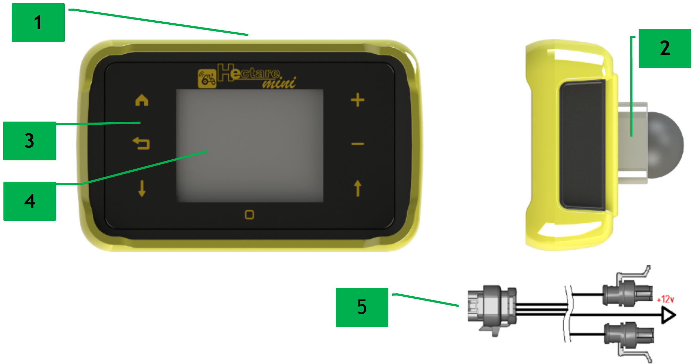
- Ein-/Aus-Taste. Berührungsempfindlich, am oberen Rand des Gehäuses.
- Halterung. Erlaubt es, das Panel in jedem Winkel, waagerecht oder senkrecht, auf einer ebenen Fläche zu befestigen. Für die Montage an einem Rohr gibt es eine zusätzliche Halterung.
- Die sieben Tasten. Drei links, drei rechts, eine unter dem Bildschirm — siehe die Tabelle unten.
- Bildschirm. Er nimmt an manchen Stellen auch Berührungen entgegen, zum Beispiel die Ziffern des Ziffernblocks.
- Kabeleinführung. Ein Kabelbaum führt Geschwindigkeitssensor, Sensornetz und Stromversorgung zum Panel.
Die sieben Tasten
| Taste | Kurzer Druck | Langer Druck |
|---|---|---|
| Wechselt zum nächsten Arbeitsbildschirm. Im Alarmfenster: schließt den Alarm. | Auf dem Startbildschirm und dem Bildschirm Sollmengen: sperrt oder gibt die Produktausbringung frei, wenn die Maschine Dosiermotoren oder eine Flüssigdüngerpumpe hat. Im Alarmfenster: schließt es und kehrt zum Startbildschirm zurück. | |
| „BACK“ | Verlässt ein Menü, ein Fenster oder einen Modus, einen Schritt zurück. Auf dem Startbildschirm: öffnet das Menü des Fahrgassen-Durchgangs, wenn die Fahrgasse eingeschaltet ist. | Auf dem Startbildschirm, während der Aussaat: setzt die Alarmschwelle aus dem Fluss, der gerade ausgebracht wird — siehe Alarmschwelle einstellen. |
| Senkt den gewählten Wert. Im Sensoreinstellmodus: nimmt den gewählten Sensor aus der Überwachung. | — | |
| Öffnet das Menü des Bildschirms oder ruft den gewählten Menüpunkt auf. Im Sensoreinstellmodus: öffnet das Kontextmenü des gewählten Geräts. | Auf dem Startbildschirm, dem Bildschirm Sollmengen und dem Bildschirm Motoren: schaltet den Sensoreinstellmodus ein. | |
| Erhöht den gewählten Wert. Im Sensoreinstellmodus: nimmt den gewählten Sensor in die Überwachung. | — | |
| Wählt den nächsten Punkt, das nächste Feld oder Gerät. | — | |
| Wählt den vorigen Punkt, das vorige Feld oder Gerät. | — |
Steht „Tastenton“ im Einstellungsmenü auf „Ja“, piept das Panel bei jeder angenommenen Berührung.
Was jede Taste auf jedem Bildschirm bewirkt: Tasten auf jedem Bildschirm.
Ein- und Ausschalten
Was der Hectare Mini nach dem Einschalten zeigt, mit welchem Bildschirm und welcher Zugriffsstufe er startet und wann Sie gefahrlos ausschalten können.
Nach dem Einschalten der Spannung erscheint ein Startbild mit dem Logo. Es bleibt stehen, bis das Panel alle angeschlossenen Geräte gefunden hat — einige Sekunden —, und wechselt dann zum ersten Arbeitsbildschirm.

Das Logo auf dem Startbild hängt vom Lieferanten des Systems ab und kann vom Bild abweichen.
In welchem Zustand das Panel startet
- Zugriffsstufe: „Fahrer“. Nach jedem Einschalten steht das Panel auf der Stufe „Fahrer“, gleichgültig, welche Stufe zuvor eingestellt war. „Fahrer“ ist die einzige Stufe, auf der Alarmfenster angezeigt werden; Aus- und Einschalten ist deshalb auch der schnellste Weg zurück zum sicheren Arbeiten. Siehe Zugriffsstufen.
- Der Startbildschirm — mit einer Ausnahme: War der Bildschirm Sollmengen beim Ausschalten geöffnet, öffnet er sich wieder. Er ist der einzige Bildschirm, den das Panel sich merkt.
- Arbeit angehalten, am Prüfstand. Ist die Geschwindigkeitssimulation eingeschaltet und hat die Maschine Dosiermotoren, startet das Panel mit gesperrter Produktausbringung — siehe Ausbringung von Hand sperren.
Die Version der Software, die Seriennummer des Panels und seine Hardwarekennung lassen sich jederzeit ablesen: Drücken Sie auf dem Startbildschirm „MENU“ und wählen Sie den letzten Punkt des Hauptmenüs. „BACK“ oder „Schließen“ verlässt das Fenster.
Ausschalten
| Was | Wann es gespeichert wird |
|---|---|
| Einstellungen, Sollmengen, Alarmschwellen | Von selbst, etwa anderthalb Sekunden nach der letzten Änderung und der letzten Tastenberührung. |
| Statistik des aktiven Feldes | Alle fünf Minuten und einige Sekunden nach dem Stillstand der Maschine. |
| Werte der Aussaattabelle | Nie — sie gehören zur Arbeitssitzung und beginnen nach jedem Einschalten bei null. |
Bildschirme, Menüs, Kontextmenüs und Fenster
Das, worüber am Hectare Mini alles läuft — die Arbeitsbildschirme, die Menüs, das Kontextmenü eines Geräts, die fragenden und meldenden Fenster und die Zugriffsstufen.
Alles am Panel geschieht über die Arbeitsbildschirme, die Menüs, das Kontextmenü eines Geräts und die Fenster, die etwas fragen oder melden. Zahlen geben Sie am Ziffernblock ein.
Die Arbeitsbildschirme
„HOME“ wechselt von einem Arbeitsbildschirm zum nächsten, immer in dieser Reihenfolge:
| Bildschirm | Angezeigt |
|---|---|
| Startbildschirm | Immer. |
| Aussaattabelle | Immer. |
| Statistik | Immer. |
| Motoren | Nur wenn die Maschine Dosiermotoren oder Fahrgassen-Aktuatoren hat, und nur oberhalb der Zugriffsstufe „Fahrer“. |
| Sollmengen | Immer. Ein weiteres „HOME“ führt zurück zum Startbildschirm. |
„BACK“ führt aus der Aussaattabelle, der Statistik und dem Bildschirm Motoren zurück zum Startbildschirm. Den Bildschirm Sollmengen verlassen Sie nur mit „HOME“.

Menüs
„MENU“ öffnet das Menü des aktuellen Bildschirms — auf dem Startbildschirm das Hauptmenü.

- Gewählter Punkt. Schwarzer Text auf blauem Balken. „UP“ und „DOWN“ bewegen den Balken; am Ende der Liste springt er zum anderen Ende.
- Wert zwischen − und +. Steht am gewählten Punkt: Sie ändern ihn mit „PLUS“ und „MINUS“ direkt in der Liste.
- Wert eines nicht gewählten Punkts. Das − und + erscheinen, sobald Sie ihn wählen.
- Pfeilspitze. Der Punkt öffnet ein weiteres Menü. Drücken Sie „MENU“.
- Bildlaufleiste. Die Liste ist länger als der Bildschirm.
| Was Sie rechts sehen | Was es bewirkt |
|---|---|
| Eine Pfeilspitze | Öffnet ein weiteres Menü. Drücken Sie „MENU“. |
| Ein Wert zwischen - und + | „PLUS“ und „MINUS“ ändern ihn schrittweise. |
| Ein Wert zwischen -[ und ]+ | „PLUS“ und „MINUS“ ändern ihn schrittweise; „MENU“ öffnet den Ziffernblock zur Eingabe. |
| Nichts | Der Punkt führt eine Aktion aus. Drücken Sie „MENU“. |
Sie können einen Punkt auch berühren, um ihn zu wählen, und ein zweites Mal, um ihn zu öffnen. „BACK“ verlässt ein Menü, eine Ebene nach oben.
Das Kontextmenü eines Geräts
Jeder Sensor auf dem Startbildschirm, dem Bildschirm Sollmengen und dem Bildschirm Motoren hat sein eigenes Menü. Halten Sie „MENU“ gedrückt, bis ein Gerät auf weißem Grund erscheint — das ist der Sensoreinstellmodus —, wählen Sie dann das Gerät mit „UP“ und „DOWN“ und drücken Sie „MENU“. Wie Sie in diesem Modus arbeiten: Sensor in die Überwachung nehmen oder aus ihr nehmen. Die Punkte der einzelnen Kontextmenüs stehen in den Sensoreinstellungen.

Fenster, die fragen, und Fenster, die melden
Ein Fragefenster hat einen gelben Streifen mit „Bestätigung“. Die Zeilen unter der Frage nennen die beiden Tasten, die sie beantworten — sie sind von Fenster zu Fenster verschieden, lesen Sie sie also. Das grüne „Ja“ und das rote „Nein“ auf dem Bildschirm können Sie auch berühren. „BACK“ oder eine Berührung außerhalb des Fensters bricht immer ab.

Ein Informationsfenster hat einen blauen Streifen mit „Information“. Es schließt sich von selbst oder mit einer Berührung oder einer Taste.
Alarmfenster

- Roter Streifen. „ALARM!“ — das Fenster meldet eine Störung.
- Hinweis. „HOME“ schließt das Fenster.
- Die Störung. Hier ist die Verbindung zu einem Sensor verloren.
- Art des Sensors. Hier das Gebläse.
- Nummern der Sensoren. Haben mehrere Sensoren derselben Art dieselbe Störung, stehen alle ihre Nummern in der Liste.
- „Schließen“. Berühren Sie es, um das Fenster zu schließen.
Solange das Fenster angezeigt wird, gibt das Panel das Alarmsignal und lässt seine Alarmanzeige leuchten. „HOME“ oder eine Berührung von „Schließen“ schließt das Fenster; „HOME“ gedrückt gehalten schließt es und kehrt zum Startbildschirm zurück. Die übrigen Tasten bewirken hier nichts. Alle Alarme und was zu tun ist: So arbeiten die Alarme.
Zugriffsstufen
| Stufe | Was sie öffnet |
|---|---|
| „Fahrer“ | Was Sie für die Arbeit brauchen. Aktiv nach jedem Einschalten. Die einzige Stufe, auf der Alarmfenster angezeigt werden. |
| „Agronom“ | Verborgene Punkte und Parameter der Maschine und der Sensoren. Braucht einen Code aus dem Datenblatt Ihres Panels. |
| „Service“ | Das Profil und die übrige Inbetriebnahme — nur für den Service. Die Konfiguration von Saatgut- und Drucksensoren braucht nur die Stufe „Agronom“. |
Die Stufe wählen Sie unter „Einstell.“ → „Benutzer“. Wie: Stufe „Agronom“ freischalten. In dieser Anleitung ist bei einem Parameter, der eine höhere Stufe braucht, die Stufe vermerkt.
Der Ziffernblock
Wie Sie am Hectare Mini eine Zahl eingeben — was das Fenster zeigt, welche Tasten wirken und die Fallen des leeren Feldes und der Werte außerhalb des Bereichs.
Manche Werte lassen sich als ganze Zahl eingeben, statt mit „PLUS“ und „MINUS“ schrittweise verstellt zu werden. In einem Menü steht ein solcher Wert zwischen -[ und ]+; drücken Sie darauf „MENU“, und der Ziffernblock öffnet sich. Er öffnet sich auch von selbst, wo Schritte keinen Sinn ergeben — für die Masse am Ende einer Motorkalibrierung, für die Zahl der Löcher in der Scheibe eines Dosiermotors und für einen Zugangscode.
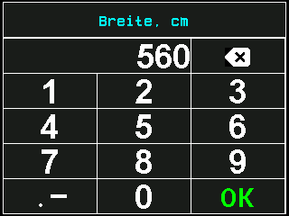
Was der Ziffernblock zeigt

- Name des Parameters, in Hellblau. In manchen Fenstern die ganze Aufforderung, über mehrere Zeilen.
- Die Zahl. Sie öffnet sich mit dem aktuellen Wert (leer, wenn der Wert 0 ist) und wächst beim Eingeben nach links.
- Rückschritt. Eine Berührung löscht das letzte Zeichen; Berühren und Halten löscht die ganze Zahl.
- Ziffern. Berühren Sie sie — die Ziffern werden nur auf dem Bildschirm eingegeben.
- Taste .−. Setzt das Komma. Berühren und Halten schaltet das Minuszeichen um, wo der Wert negativ sein darf.
- „OK“, in Grün. Übernimmt die Zahl und schließt den Ziffernblock.
Eine berührte Taste leuchtet nicht auf. Dass die Berührung angekommen ist, sehen Sie an der Zahl, und Sie hören es, wenn der Tastenton eingeschaltet ist.
Eine Zahl eingeben
Drücken Sie auf einem Menüpunkt, dessen Wert zwischen -[ und ]+ steht, „MENU“. Der Ziffernblock öffnet sich.
Berühren und halten Sie den Rückschritt. Der alte Wert wird gelöscht.
Berühren Sie die Ziffern. Jede reiht sich rechts an die Zahl an.
Hat der Wert Zehntel, berühren Sie .− und geben Sie die Stellen nach dem Komma ein.
Prüfen Sie die Zahl und berühren Sie dann „OK“ oder drücken Sie „MENU“. Der Ziffernblock schließt sich, und das Menü zeigt den neuen Wert.
„BACK“ verlässt den Ziffernblock, ohne etwas zu ändern. Die übrigen Tasten und eine Berührung außerhalb der Tasten bewirken nichts.
Regeln des Ziffernblocks
- Das Komma wirkt nur dort, wo der Wert Zehntel hat, zum Beispiel bei „Minimum, U/min“ und „Maximum, U/min“ eines Dosiermotors. Bei ganzen Zahlen bewirkt die Taste .− nichts.
- Ein Komma je Zahl. Eine zweite Berührung von .− bewirkt nichts, solange Sie das erste Komma nicht gelöscht haben.
- Die Nachkommastellen sind begrenzt auf das, was der Wert kennt. Geben Sie weniger ein, ergänzt das Panel Nullen: mit einer Stelle wird aus 12 die 12,0.
- Die Länge ist begrenzt durch die Breite des Feldes. Ist es voll, bewirken weitere Ziffern nichts.
Kurzanleitung — vor und während der ersten Fahrt
Was Sie prüfen, bevor Sie mit dem Hectare Mini aufs Feld fahren, wie das Panel von selbst zu überwachen beginnt und worauf Sie während der ersten Fahrt achten.
Das setzt voraus, dass das System in Betrieb genommen wurde — siehe Inbetriebnahme. Vor der Saison muss der Geschwindigkeitssensor kalibriert worden sein, und die Dosierer ebenso, wenn ihre Wellendrehzahl oder die Saatgutmasse überwacht werden soll (Geschwindigkeitssensor, Sensoreinstellungen).
Vor dem Feld
Schalten Sie das Panel ein und warten Sie auf den Startbildschirm.
Drücken Sie zweimal „HOME“, um den Bildschirm Statistik zu öffnen. Prüfen Sie, dass das richtige aktive Feld gewählt ist; wählen Sie für ein neues Feld ein leeres oder löschen Sie es — Neues Feld beginnen.
Stellen Sie auf dem Startbildschirm mit „PLUS“ / „MINUS“ die Alarmschwelle des Saatdiagramms ein — oder in den Modi „Hybrid“ und „Einzelkorn“ die Sollmenge. „DOWN“ wechselt zum Düngerdiagramm. Siehe Sollmenge ändern.
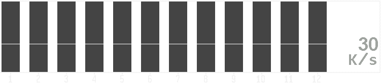
Das Saatdiagramm mit der Alarmschwelle in K/s und seiner Überwachungslinie. Werden Produkte nach Masse ausgebracht, stellen Sie ihre Mengen in kg/ha auf dieselbe Weise ein.
Prüfen Sie die Einstellungen, die sich mit der Arbeit ändern — im Sensoreinstellmodus (Sensor in die Überwachung nehmen oder aus ihr nehmen), jeden Sensor einzeln: „Periode,s“ jedes Dosierwellensensors; „Minimum, U/min“ und „Maximum, U/min“ jedes Gebläses; „Minimum,Pa“ und „Maximum,Pa“ jedes Drucksensors; „Fraktion“ und „Korrektur“ der Kornsensoren und der Düngersensoren. Alle Kornsensoren teilen sich einen Satz Einstellungen, alle Düngersensoren einen anderen; jeder andere Sensor hat seinen eigenen.
Stellen Sie sicher, dass die Zugriffsstufe „Fahrer“ ist. Auf einer höheren Stufe werden keine Alarmfenster angezeigt, und das Panel warnt Sie mit einem Alarm, wenn Sie mit der Aussaat beginnen. Aus- und Einschalten führt zurück zur Stufe „Fahrer“.
Aussaat
Fahren Sie einfach los. Es gibt nichts einzuschalten: Das Panel beginnt von selbst mit einem kurzen Piepton mit der Alarmüberwachung, sobald diese Bedingungen während der „Alarmverzögerung“ (standardmäßig 3 s) erfüllt waren:
- die Ausbringung ist nicht von Hand gesperrt (Ausbringung von Hand sperren);
- bei einem überwachten Gerätestellungssensor: die Drillmaschine ist in Arbeitsstellung;
- bei Dosiermotoren oder einer Flüssigkeitspumpe: die Drillmaschine fährt, und der Geschwindigkeitssensor ist überwacht und zeigt eine Geschwindigkeit;
- sonst: mindestens „Anteil säend,%“ (standardmäßig 20 %) der überwachten Reihen säen — und, wenn am Geschwindigkeitssensor „Aussaatkriterium“ eingestellt ist, fährt die Drillmaschine.
Fällt eine Bedingung weg, endet die Überwachung sofort mit drei kurzen Pieptönen. Einen eigenen Alarm für eine Drillmaschine, die fährt, während kein Saatgut ankommt, gibt es nicht: Dann beginnt die Überwachung nicht, und der Piepton bleibt aus.

Bei der ersten Fahrt prüfen
- die Geschwindigkeit gegen den Tacho des Traktors oder ein GPS-Navigationsgerät;
- die Gebläsedrehzahl und den Druck — innerhalb ihrer Grenzen, nicht rot;
- die Saatsäulen über ihrer Linie und die Aussaatmenge gegen die Sollmenge in den Modi „Hybrid“ und „Einzelkorn“;
- die Düngersäulen über ihrer Linie;
- die Produktmenge in kg/ha gegen den Sollwert;
- kein Rot auf einer anderen Anzeige — Anzeigen.
Fällt der Geschwindigkeitssensor aus, lässt sich die Geschwindigkeit in seinen Einstellungen simulieren, bis er repariert ist (Geschwindigkeitssensor). Erscheint ein Alarm, halten Sie an und beheben Sie die Störung — So arbeiten die Alarme. Die Qualität des letzten Stücks steht in der Aussaattabelle; das Ergebnis für das ganze Feld auf dem Bildschirm Statistik.
Inbetriebnahme — ein neues System einrichten
In welcher Reihenfolge ein neues System Hectare Mini an einer Maschine eingerichtet wird — vom Anschließen der Geräte bis zu den Kalibrierungen — mit einem Link zu den Einzelheiten jedes Schritts.
Das ist die Reihenfolge für den Händler oder Servicetechniker beim Einbau des Systems. Jeder Schritt verweist auf das Thema mit den Einzelheiten. Die meisten Parameter brauchen die Zugriffsstufe „Agronom“ — Stufe „Agronom“ freischalten.
Schließen Sie alle Geräte am Panel an und prüfen Sie ihre Stromversorgung nach dem Schaltplan im Datenblatt des Systems.
Prüfen Sie das Profil. Es muss zur Ausstattung der Maschine passen — Das Profil. Passt es nicht, richten Sie es zuerst ein.
Prüfen Sie die Verbindungen. Jeder Sensor muss antworten und überwacht sein — das rote Kreuz und das Zeichen für den Zustand nicht überwacht erklären die Anzeigen.
Stellen Sie die allgemeinen Parameter ein unter „Einstell.“ → „Sämaschinen-Parameter“ (Einstellungsmenü): die Arbeitsbreite, „Breite, cm“; „Aussaatmodus“ — „Durchfluss“ für eine Drillmaschine; „Düngermodus“ — „Durchfluss“.
Stellen Sie die Sensoren ein (Sensoreinstellungen):
- Geschwindigkeitssensor: „Durchm., cm“ und „Impulse“; „Simulation,km/h“ auf „Nein“; danach die Geschwindigkeitskalibrierung;
- Dosierwellensensoren: „Periode,s“; bei Bedarf „Drehzahlüberwachung“ oder „Massenüberw.“, jeweils gefolgt von ihrer Kalibrierung;
- Gebläse: „Impulse“, „Minimum, U/min“, „Maximum, U/min“;
- Drucksensoren: „Filter“, „Minimum,Pa“, „Maximum,Pa“;
- Gerätestellungssensor: „Signal Transportstellung“;
- Motorsensoren: „Aktivier.-Signal“;
- Kornsensoren und, getrennt davon, Düngersensoren: mindestens „Fraktion“ für die Kulturart.
Richten Sie die Fahrgasse ein, wenn die Maschine Fahrgassen anlegt — nach dem Profil, nie davor: Fahrgassenrhythmus einstellen.
An Maschinen mit Dosiermotoren: Weisen Sie die Produkte zu und kalibrieren Sie jeden Motor — Produkt einem Motor zuweisen, Motor nach Masse kalibrieren.
Jeder Sensor wird einzeln eingestellt — außer den Kornsensoren, die sich einen Satz Einstellungen teilen, und den Düngersensoren, die sich einen anderen teilen.
Ist alles eingestellt, kehren Sie zur Stufe „Fahrer“ zurück (Aus- und Einschalten erledigt das) und gehen Sie weiter zur Kurzanleitung.
Zu dieser Anleitung und ihren Bildern
Wie Sie diese Anleitung lesen — Signalwörter, Zugriffsstufen, Tastendrücke — und was auf den Bildern zum Prüfstand und nicht zu Ihrer Maschine gehört.
So lesen Sie diese Anleitung
- HINWEIS — zusätzliche Information, zum Beispiel eine Möglichkeit, die Sie vielleicht nicht kennen.
- WICHTIG, VORSICHT, WARNUNG — Information, deren Missachtung Arbeit, Ernte oder ein Bauteil kostet.
- Ein Parameter, der erst oberhalb der Stufe „Fahrer“ sichtbar ist, nennt das ausdrücklich — siehe Zugriffsstufen.
- Drücken bedeutet eine kurze Berührung einer Taste; gedrückt halten bedeutet eine Berührung, die gehalten wird, bis das Panel reagiert, etwa eine halbe Sekunde.
- Bezeichnungen in Anführungszeichen, wie „Einstell.“, sind genau so geschrieben, wie das Panel in deutscher Sprache sie zeigt.
Die Bilder
Die Bildschirme sind echte Aufnahmen eines Panels Hectare Mini mit Firmware 2.2.8, überwiegend an einem Prüfstand statt an einer Maschine auf dem Feld aufgenommen. Einige stammen von einer früheren Firmware; wo das Layout abweicht, beschreibt der Text die Version 2.2.8. Einiges auf den Bildern gehört zum Prüfstand:
| Was Sie auf einem Bild sehen | Warum es da ist | Was Ihr Panel stattdessen zeigt |
|---|---|---|
| Ein blaues Stunden:Minuten im Uhrenfeld oder DEMO | Das Panel am Prüfstand läuft mit einer Testlizenz. | Die Uhrzeit — siehe Uhr. |
| Gelbes IMITAT im Uhrenfeld | Der Prüfstand läuft in einem Simulationsmodus. | Die Uhrzeit. |
| Eine gelbe Geschwindigkeitszahl oder SIMULATION | Die Geschwindigkeit wird simuliert — an einem Prüfstand dreht sich kein Rad. | Die gemessene Geschwindigkeit in Weiß. |
| Rote Behälter, rote Dosierwellen, ein rotes Gebläse mit XXXX | Am Prüfstand gibt es kein Produkt, keine drehenden Wellen und kein angeschlossenes Gebläse. | Graue Anzeigen, solange alles in Ordnung ist. |
| Nullen auf dem Bildschirm Statistik und in der Aussaattabelle | Der Prüfstand stand still. | Ihre Zahlen. |
Fehlt noch ein Bild, kündigt die Seite es an; der Text sagt alles, was das Bild zeigen würde.
Der Startbildschirm
Was jeder Teil des Startbildschirms am Hectare Mini ist — Geschwindigkeit, Anzeigen, Fläche, Aussaatdichte, die Diagramme und Mengenfelder — und was Sie von hier aus tun können.
Der Startbildschirm ist der wichtigste Arbeitsbildschirm. Er zeigt den Zustand jedes Geräts der Maschine und darunter je ein Diagramm für das Saatgut und für den Dünger. Was er zeigt, folgt dem Profil: Jedes dort eingetragene Gerät bekommt seine Anzeige. Wird der Platz knapp, verkleinert das Panel die Geschwindigkeitszahl oder die Diagramme, und auf einem vollen Bildschirm lässt es die Flächen- oder die Aussaatdichte-Anzeige weg.
Ein Einzelkornsägerät mit Saatgut und Dünger
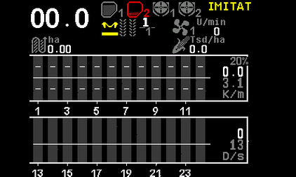
- Fahrgeschwindigkeit, in km/h. Meldungen zur Geschwindigkeit ersetzen die Zahl. Geschwindigkeit
- Behälter, nummeriert. Rot — leer. Behälter
- Dosierwellen. Grau — in Ordnung; das Symbol dreht sich, solange sich die Welle dreht. Dosierwelle
- Uhr. Die Uhrzeit; sie trägt auch Meldungen. Uhr
- Spuranzeiger. Gelb — beide Arme sind oben. Spuranzeiger
- Gebläse und seine Drehzahl in U/min. Gebläse
- Fläche, die auf dem aktiven Feld bearbeitet wurde, in ha. Fläche
- Aussaatdichte — die Saatdichte in Tausend Körnern je Hektar, im Modus „Einzelkorn“. Aussaatdichte
- Saatdiagramm. Eine Säule je Kornsensor. Das Sektionsdiagramm
- Skala der Fehlstellen und Doppelbelegungen, in Prozent (Modus „Einzelkorn“).
- Mengenfeld Saatgut. Oben die gemessene Menge, darunter der Sollwert, hier in Körnern je Meter. Sollmenge ändern
- Sektionsnummern.
- Düngerdiagramm, hier im Modus „Durchfluss“, mit seiner Überwachungslinie.
- Mengenfeld Dünger. Oben der gemessene Fluss, darunter die Alarmschwelle, in Düngereinheiten je Sekunde.
Eine Drillmaschine am Prüfstand

- Fahrgeschwindigkeit.
- Behälter. Roter Rand — leer.
- Dosierwellen. Rot — Alarm: Die Welle dreht sich nicht.
- Uhr.
- Gebläse. Rot mit XXXX — keine Verbindung zum Gebläsesensor.
- Fläche.
- GPS-Empfang. Das Satellitensymbol und die Zahl der genutzten Satelliten. GPS-Empfang
- Saatsäule. Dunkelgrau — kein Fluss, die Drillmaschine steht.
- Überwachungslinie. Die Alarmschwelle, über das Diagramm gezogen.
- Mengenfeld. Oben der gemessene Fluss, darunter die Alarmschwelle, in Körnern je Sekunde.
- Sektionsnummern.
Alle Anzeigen und ihre Zustände: Anzeigen. Das Diagramm — Säulen, Linien, Farben: Das Sektionsdiagramm.
Zwei Modi
Der Startbildschirm arbeitet in zwei Modi:
- Überwachungsmodus — nach dem Einschalten. Sie beobachten die Arbeit und ändern die Mengen.
- Sensoreinstellmodus — halten Sie „MENU“ gedrückt. Ein Gerät erscheint auf weißem Grund; „UP“ und „DOWN“ wechseln zum nächsten Gerät, „PLUS“ und „MINUS“ nehmen es in die Überwachung oder aus ihr, „MENU“ öffnet sein Kontextmenü. „BACK“ verlässt den Modus. Siehe Sensor in die Überwachung nehmen oder aus ihr nehmen.

Was Sie vom Startbildschirm aus tun können
| Aufgabe | So geht es |
|---|---|
| Das Hauptmenü öffnen | „MENU“ |
| Eine Sollmenge oder Alarmschwelle ändern | „PLUS“ / „MINUS“; „UP“ / „DOWN“ wählen das Feld — Sollmenge ändern |
| Das Panel die Alarmschwelle setzen lassen | „BACK“ gedrückt halten, während gesät wird — Alarmschwelle einstellen |
| Die Produktausbringung sperren oder freigeben | „HOME“ gedrückt halten — Ausbringung von Hand sperren |
| Das Menü des Fahrgassen-Durchgangs öffnen | „BACK“ — Nächster Fahrgassen-Durchgang |
| Die Einstellungen eines Geräts öffnen | „MENU“ gedrückt halten, das Gerät wählen, „MENU“ |
| Zum nächsten Arbeitsbildschirm wechseln | „HOME“ — Bildschirme, Menüs und Fenster |
Anzeigen des Startbildschirms und ihre Zustände
Jede Anzeige des Startbildschirms am Hectare Mini in jedem Zustand — Geschwindigkeit, Behälter, Dosierwelle, Gebläse, Druck, Motorsensoren, Gerätestellung, Spuranzeiger, Fahrgasse, Uhr, Fläche, Aussaatdichte und Produktmengen.
Lesen Sie die Anzeigen an der Farbe. In der Firmware 2.2.8 wird ein Gerät in Ordnung grau gezeichnet; Rot, meist blinkend, ist ein Alarm; Gelb ist ein Zustand, den Sie kennen sollten, aber keine Störung. Drei Zustände sind für jeden Sensor gleich:
| Was Sie sehen | Bedeutung | Was zu tun ist |
|---|---|---|
| Keine Verbindung zum Sensor. | Prüfen Sie sein Kabel und die Steckverbinder. | |
| Ein rotes Fragezeichen, blinkend, oder ???? anstelle des Wertes | An dieser Stelle antwortet ein Gerät anderer Art. | Lassen Sie die Konfiguration vom Service prüfen. |
| Ein graues Zeichen für den Zustand nicht überwacht, blinkend, oder !!!! anstelle des Wertes | Der Sensor ist aus der Überwachung genommen. Er wird nicht überwacht. | Nehmen Sie ihn wieder in die Überwachung, wenn die Störung behoben ist. |
Geschwindigkeit
| Was Sie sehen | Bedeutung |
|---|---|
| Die Fahrgeschwindigkeit in km/h. | |
| Schneller als zulässig. Die rote Zahl wechselt mit „LANGSAMER“. | |
| Langsamer als zulässig. Die rote Zahl wechselt mit „SCHNELLER“. | |
| Rote Zahl im Wechsel mit „Sensor“ 1 oder 2 oder mit „Einstell.“ | Einer der beiden Radsensoren ist ausgefallen, oder die Geschwindigkeitsgrenzen sind falsch eingestellt. |
| Keine Verbindung zum Geschwindigkeitssensor. | |
| Die Geschwindigkeitssimulation ist eingeschaltet: Die Zahl ist gelb und wechselt mit „SIMULATION“. Außerhalb der Grenzen mit SIMULATION ERHÖHEN oder SIMULATION SENKEN. |
Die Geschwindigkeit wird nur dann gegen ihre Grenzen überwacht, wenn diese Überwachung in den Einstellungen des Geschwindigkeitssensors eingeschaltet ist. Wo die Geschwindigkeit vom GPS kommt: GPS-Empfang.
Behälter
| Was Sie sehen | Bedeutung |
|---|---|
| Grau | Produkt über dem Sensor. |
| rot, blinkend | Der Behälter ist leer. |
Dosierwelle
| Was Sie sehen | Bedeutung |
|---|---|
| Grau; dreht sich, solange sich die Welle dreht | In Ordnung. |
| Die Welle dreht sich nicht oder nicht mit der geforderten Drehzahl. |
Gebläse
| Was Sie sehen | Bedeutung |
|---|---|
| Grau, mit der Drehzahl in U/min | In Ordnung. |
| Rot, blinkend, mit der Drehzahl | Die Gebläsedrehzahl liegt außerhalb ihrer Grenzen. |
Druck
| Was Sie sehen | Bedeutung |
|---|---|
| Grau, mit dem Druck in kPa | In Ordnung. |
| Der Druck am Gebläseausgang liegt außerhalb seiner Grenzen. |
Motorsensoren
Die Sensoren eines eigenen Gebläseantriebsmotors. Öldruck und Batterieladung werden nur bei eingeschalteter Zündung überwacht.
| Was Sie sehen | Bedeutung |
|---|---|
| Niedriger Öldruck. | |
| Die Batterie wird nicht geladen. | |
| Wenig Kraftstoff im Tank. | |
| Der Luftfilter ist verstopft. | |
| Schlüssel grau / |
Zündung ein / Zündung aus. |
In Ordnung ist jedes dieser Symbole grau.
Gerätestellung
| Was Sie sehen | Bedeutung |
|---|---|
| Grau | Die Drillmaschine ist in Arbeitsstellung. |
| Die Drillmaschine ist in Transportstellung. |
Spuranzeiger
Graue Arme zeigen, welcher Spuranzeiger unten und welcher oben ist. Sind zwei Spuranzeigersensoren vorhanden, bedeuten beide Arme gelb: beide Spuranzeiger sind oben.
Fahrgassen-Durchgang
Reifenspuren mit dem aktuellen Durchgang oben und der Zahl der Durchgänge darunter — siehe Nächster Fahrgassen-Durchgang.
Uhr
| Was Sie sehen | Bedeutung |
|---|---|
| Weiße Uhrzeit | Die Uhrzeit. |
| Rote Uhrzeit, mit einem roten BAT für einen Moment alle vier Sekunden | Die Uhrenbatterie muss ersetzt werden. |
| Rotes XX:XX, blinkend | Die Uhr ist defekt. |
| Gelbes IMITAT | Das Panel läuft in einem Simulationsmodus — siehe Zu dieser Anleitung und ihren Bildern. |
| Blaue Stunden:Minuten und DEMO | Ein Testzeitraum ist aktiv: die verbleibende Zeit. Sie erscheint alle 30 Sekunden und verdeckt für einen Moment die Symbole von Behälter und Welle. |
Fläche
Auf dem aktiven Feld bearbeitete Hektar — nur mit Geschwindigkeitssensor angezeigt und nur dort, wo der Bildschirm Platz hat.
Aussaatdichte
Im Modus „Einzelkorn“: Tausend Körner je Hektar, gemittelt über die überwachten Kornsensoren, die antworten. Stehen Saatgut und Dünger beide auf „Einzelkorn“, erscheinen zwei Anzeigen, gekennzeichnet mit A (Saatgut) und B (Dünger); die Fläche wird dann meist nicht angezeigt.
Produktmenge
Eine Anzeige je nach Masse ausgebrachtem Produkt, mit der Produktnummer, in kg/ha. Rot und blinkend: Die Menge weicht um mehr als „Produktmenge Fehler,%“ ab. Solange sie innerhalb der Toleranz liegt, zeigt das Panel den Sollwert.
Die Spalte rechts
| Was Sie sehen | Bedeutung |
|---|---|
| Motorsymbol, gelb, blinkend | Die Produktausbringung ist von Hand gesperrt — siehe Ausbringung von Hand sperren. |
| Aktuatorsymbol, rot, blinkend | Ein Dosiermotor oder ein Fahrgassen-Aktuator ist im Alarm — siehe den Bildschirm Motoren. |
| Aktuatorsymbol im Wechsel mit dem Zeichen für den Zustand nicht überwacht | Ein Motor oder ein Aktuator ist aus der Überwachung genommen. |
| Produktsymbol, rot, blinkend | Die eingestellten Mengen lassen sich bei keiner Geschwindigkeit ausbringen — siehe Motor nach Masse kalibrieren. |
Das Sektionsdiagramm — Säulen, Linien und Farben
Wie Sie die Saat- und Düngerdiagramme des Hectare Mini in den Modi „Durchfluss“, „Hybrid“ und „Einzelkorn“ lesen und was „NICHT ÜBERWACHT“ bedeutet.
Jede Säule eines Diagramms ist eine Saat- oder Düngerreihe — ein Sensor. Ihre Höhe ist der Fluss, der jetzt durch diese Reihe geht. Neben den Säulen zeigt das Mengenfeld oben die gemessene Menge und darunter den eingestellten Wert; solange Sie den Sollwert ändern, ist es einige Sekunden gelb. Wie der Rest gezeichnet wird, hängt vom Modus ab, der unter „Aussaatmodus“ und „Düngermodus“ eingestellt ist: „Durchfluss“, „Hybrid“ oder „Einzelkorn“. Das Düngerdiagramm steht immer über dem Saatdiagramm und läuft meist im Modus „Durchfluss“.
Modus „Durchfluss“
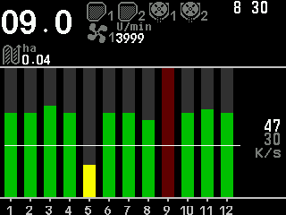
- Alarmschwelle — die untere Zahl des Mengenfeldes, in Körnern je Sekunde (K/s). Der Fluss, unter dem eine Reihe als ausfallend gilt. „PLUS“ und „MINUS“ ändern sie um 1.
- Überwachungslinie — die weiße Linie quer durch das Diagramm: die gezeichnete Alarmschwelle.
- Gemessener Fluss — die obere Zahl: der Durchschnitt der Reihen jetzt.
- Grüne Säule — der Fluss liegt über der Alarmschwelle.
- Gelbe Säule — der Fluss liegt unter der Alarmschwelle: Alarm.
- Keine Säule — überhaupt kein Fluss. Solange die Drillmaschine sät und die Alarme überwacht werden, blinkt der Hintergrund dieser Säule über ihre volle Höhe dunkelrot.
Modus „Hybrid“
Wie „Durchfluss“, mit drei Unterschieden: Der eingestellte Wert ist eine Sollmenge in Körnern je Meter (K/m), verstellt in Schritten von 1; über und unter ihr lassen sich Linien für die zulässige Abweichung zeichnen; und Fehlstellen und Doppelbelegungen werden nicht gezählt.
Modus „Einzelkorn“

- Sollmenge — die untere Zahl des Mengenfeldes, in Körnern je Meter (K/m), verstellt in Schritten von 0,1. Solange Sie sie ändern, zeigt das Panel sie auch als Aussaatdichte in Tsd/ha und als Abstand zwischen den Körnern in Zentimetern.
- Messmenge — die obere Zahl, gemittelt über die Reihen, die jetzt Fluss haben.
- Mengenlinie und die obere und untere Abweichungslinie. Welche davon gezeichnet werden, stellt „Raster“ ein: die Mengenlinie bei „Nein“ oder „Voll“, die Abweichungslinien bei „Teilweise“ oder „Voll“ (Einstellungen des Aussaatdiagramms). Die zulässige Abweichung ist „Mengenfehl.%“ der Kornsensoren.
- Grüne Säule — innerhalb der Abweichung; blau — darüber; gelb — darunter.
- Gelber schraffierter Balken links von einer Säule — die Fehlstellen in dieser Reihe; blauer schraffierter Balken rechts davon — die Doppelbelegungen. Ihre Höhe wird an „Skala F&D,%“ gemessen, das oben im Mengenfeld steht, solange „Fehlst. & Doppel“ auf „Ja“ steht. An Maschinen mit vielen Reihen sind die Säulen zu schmal, und die Balken werden nicht gezeichnet.
Fehlstellen, Doppelbelegungen und die Qualität werden über das Neuberechnungsintervall gezählt — die Wegstrecke, die „Neuberechn.,m“ der Kornsensoren einstellt.
Marken an einer Säule — in allen Modi
| Marke | Bedeutung |
|---|---|
| Weißes Kästchen mit ! | Der Sensor ist aus der Überwachung genommen. |
| Rotes Kreuz | Keine Verbindung zum Sensor. |
| Grauer Hintergrund, weiße Nummer | Der im Sensoreinstellmodus gewählte Sensor. |
| Hellgraue Schraffur | Die Reihe ist für eine Fahrgasse abgeschaltet — siehe Nächster Fahrgassen-Durchgang. |
„NICHT ÜBERWACHT“
Das Panel beginnt die Saatalarme erst zu überwachen, wenn die Drillmaschine wirklich sät: wenn mindestens der unter „Anteil säend,%“ eingestellte Anteil der Reihen (standardmäßig 20 %) innerhalb des eingestellten Wertes sät — und, wenn am Geschwindigkeitssensor „Aussaatkriterium“ eingestellt ist, solange die Drillmaschine fährt. Saat- und Düngeralarme beginnen und enden gemeinsam. Ein kurzer Piepton sagt, dass die Überwachung begonnen hat; drei kurze Pieptöne, dass sie geendet hat.
Sät die Drillmaschine, bleibt der Fluss aber unter dem eingestellten Wert, zeigt das Diagramm „NICHT ÜBERWACHT“. Entweder ist der Fluss während der Arbeit gefallen — eine echte Störung — oder die Alarmschwelle oder Sollmenge ist höher eingestellt, als die Maschine liefert.
GPS-Empfang und der Informationsbildschirm GPS
Wie der Hectare Mini die Fahrgeschwindigkeit aus seinem eingebauten GPS-Empfänger nimmt, was die Farbe des Satellitensymbols bedeutet und wie Sie den Informationsbildschirm GPS lesen.
Im Panel ist ein GPS-Empfänger eingebaut. Er liefert die Fahrgeschwindigkeit dort, wo die Drillmaschine keinen Rad- oder Radarsensor hat, oder zusätzlich zu einem. Solange der Empfänger antwortet und eine gültige Ortung hat, kommt die Geschwindigkeit vom GPS. Verstummt er oder verliert er das Signal, übernimmt der unter „Geschw.“ im Profil eingestellte Sensor von selbst — Sie müssen nichts umschalten.
Eingeschaltet wird der Empfänger über den Profilpunkt GPS: UBX für den eingebauten Empfänger (die normale Einstellung) oder NMEA; „Nein“ schaltet ihn aus und blendet das Satellitensymbol aus.
Das Satellitensymbol
Das Symbol steht am rechten Rand des Startbildschirms, mit der Zahl der genutzten Satelliten in seiner unteren rechten Ecke.
| Farbe | Bedeutung |
|---|---|
| Rot | Der Empfänger antwortet nicht oder antwortet ohne gültige Ortung — normal in Räumen und gleich nach dem Einschalten. Solange der Empfänger schweigt, wird die Zahl nicht angezeigt. |
| Grau | Gültige Ortung, weniger als 5 Satelliten. |
| Gelb | Gültige Ortung, 5 bis 7 Satelliten. |
| Grau | Gültige Ortung, 8 Satelliten oder mehr. Die beiden grauen Zustände unterscheiden sich nur durch die Zahl. |
Der Informationsbildschirm
Zum Öffnen halten Sie auf dem Startbildschirm „MENU“ gedrückt, wählen mit „UP“ / „DOWN“ das Satellitensymbol und drücken „MENU“.
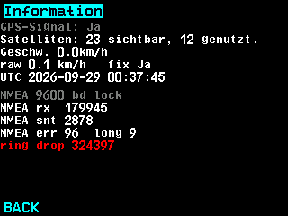
- „GPS-Signal:“ „Ja“, wenn der Empfänger antwortet, sonst „Nein“.
- Satelliten — die Zahl der gesehenen und die Zahl der in der Ortung genutzten.
- Geschwindigkeit — die Geschwindigkeit, wie die Aussaat sie verwendet. Unter einer kleinen Stillstandsschwelle zeigt sie 0 km/h, damit eine stehende Drillmaschine keine Fläche zählt.
- raw — die ungefilterte Geschwindigkeit und ob die Ortung gültig ist.
- UTC — Datum und Uhrzeit vom Empfänger; Nullen vor der ersten gültigen Ortung.
- Empfangszähler. Bei NMEA: empfangene Bytes, gültige Sätze, Prüfsummenfehler und die gefundene Baudrate; bei UBX: Bytes, Rahmen und Fehler.
- ring drop — im Empfangspuffer verlorene Bytes. Eine steigende Zahl heißt, dass die Verbindung zum Empfänger gestört ist.
- BACK verlässt den Bildschirm.
Der Bildschirm zeigt nur an; nichts darauf lässt sich ändern, und ein Zugangscode ist nicht nötig.
Der Bildschirm Saattabelle
Die Messwerte jeder Saatreihe als Zahlen, eine Zeile je Reihe — welche Tabellen Ihre Maschine hat, was jede Spalte und Farbe bedeutet und wie Sie die Werte zurücksetzen.
Die Saattabelle beantwortet, was das Diagramm auf dem Startbildschirm nicht beantworten kann: Welche Reihe genau, und um wie viel. Öffnen Sie sie mit „HOME“ vom Startbildschirm aus; das nächste „HOME“ führt weiter zum Bildschirm Statistik, „BACK“ zurück zum Startbildschirm.
Die Zahlen gehören zur Arbeitssitzung: Sie zählen ab dem Einschalten und gehen beim Ausschalten verloren. Die Feldstatistik wird getrennt geführt — siehe Der Bildschirm Statistik.
Was die Tabelle zeigt

- Zeilennummer — die Saatreihe, in der Reihenfolge der Reihen der Maschine.
- K/m — die jetzt gemessene Menge, in Körnern je Meter. ----- — die Reihe wird überwacht, sät aber nicht.
- Q.% — Qualität: der Anteil der Körner, die wie vorgesehen einzeln abgelegt wurden.
- Dp% — Doppelbelegungen: zwei Körner, wo eines vorgesehen war.
- Fs% — Fehlstellen: eine Lücke, wo ein Korn vorgesehen war.
- Seitenanzeige — diese Tabelle und die Zahl der Tabellen, zwischen den Zeichen von „MINUS“ und „PLUS“, den Tasten, die die Tabelle wechseln. Fehlt, wenn es nur eine Tabelle gibt.
- Aussaatdichte der Reihe, in Tausend Körnern je Hektar.
- Mittelwerte über alle überwachten Reihen. Bei zwei Sensorgruppen zwei solche Zeilen, A und B.
Die Spalten 3 bis 7 gehören zum zuletzt abgeschlossenen Neuberechnungsintervall — der Wegstrecke, die „Neuberechn.,m“ einstellt (oder „Neuberechn.,Sek“ ohne Geschwindigkeitssensor), unten rechts angezeigt. Nur Spalte 2 ist ein Live-Wert. Nach dem Anhalten der Maschine bleiben die Werte des letzten Intervalls auf dem Bildschirm stehen, damit Sie sie in Ruhe ablesen können. Eine weitere Spalte, %, gibt die Abweichung jeder Reihe vom Sollwert an, mit Vorzeichen; positiv heißt mehr Körner und engerer Abstand.
Welche Tabellen Ihre Maschine hat
| Tabelle | Angezeigt, wenn |
|---|---|
| Menge je Fläche (Aussaatdichte, Tsd/ha), Menge je Strecke (Körner je Meter) | Saatgut im Modus „Einzelkorn“. |
| Kornzähler | Immer. |
| Trockendünger | Es gibt Düngersensoren, und ihr Modus ist nicht „Einzelkorn“. |
| Flüssigdünger | Es gibt Flüssigdüngersensoren. |
Eine Einzelkornsämaschine mit Saatgut im Modus „Einzelkorn“ und Trockendüngersensoren hat vier Tabellen. „PLUS“ führt zur nächsten, „MINUS“ zur vorigen; die Seitenanzeige oben rechts zeigt, in welcher Sie sind.


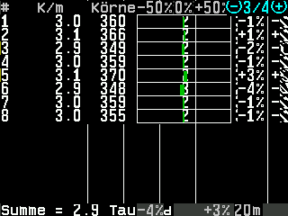

Stehen Saatgut und Dünger beide auf „Einzelkorn“, erscheinen die Düngerreihen in den Saattabellen als Gruppe B, in hellgelber Schrift.
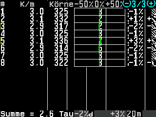
In der Tabelle Kornzähler läuft der Balken zwischen der zulässigen Abweichung „Mengenfehl.%“ beiderseits des Sollwerts — nicht auf einer festen Skala. In den Modi „Durchfluss“ und „Hybrid“ ist die Skala fest auf −50 % bis +50 % gesetzt. Die linke Spalte zeigt dann Körner je Sekunde statt Körner je Meter.
Zeichen und Farben
| In der Mengenspalte | Bedeutung |
|---|---|
| ----- | Überwacht, sät gerade nicht. |
| ! ---, ganze Zeile grau | Aus der Überwachung genommen. |
| X ---, ganze Zeile dunkelrot | Keine Verbindung zu diesem Sensor. |
| ? ---, ganze Zeile dunkelrot | Hier antwortet ein Sensor falscher Art. |
Während der Aussaat wird eine Zelle gelb, wenn sie mehr als die Hälfte der zulässigen Abweichung erreicht, und rot, wenn sie sie überschreitet. Die Grenzen sind „Mengenfehl.%“, „Doppelfehler,%“ und „Fehlst.Fehl,%“ der Kornsensoren; ist die Prüfung der Doppelbelegungen oder Fehlstellen ausgeschaltet, gilt „Skala F&D,%“. Die Zeilennummer färbt sich gelb oder rot wie ihre schlechteste Zelle, sodass sich die auffällige Reihe auf einen Blick finden lässt.
Tasten
| Taste | Was sie bewirkt |
|---|---|
| „PLUS“ / „MINUS“ | Nächste / vorige Tabelle. |
| „DOWN“ / „UP“ | Eine Zeile blättern. Eine Berührung ist eine Zeile. |
| „MENU“ | Fragt „Werte zurücksetzen?“ — Werte zurücksetzen. |
| „HOME“ | Statistik. |
| „BACK“ | Startbildschirm. |
Die Tabelle selbst reagiert nicht auf Berührung.
Düngertabellen und Fahrgassenzeilen

Die Tabelle Trockendünger ist wie die Tabelle Kornzähler aufgebaut, mit D/m im Modus „Hybrid“ oder D/s im Modus „Durchfluss“; die Stückzahl wird nur angezeigt, wenn „Körner immer zählen“ eingeschaltet ist. Die Tabelle Flüssigdünger zeigt je Reihe den Fluss und die ausgebrachten Liter, mit L/ha oder L/min nach „Modus Flüssigd.“, und hat keinen Abweichungsbalken.
Eine für eine Fahrgasse abgeschaltete Reihe zeigt nur ihre Nummer und den Fluss; die übrigen Spalten sind gestrichelt. Hier warnen Gelb und Rot, dass mehr Saatgut in die Fahrgasse fällt, als „Zul. Saat in Fahrgasse,%“ erlaubt.

Der Bildschirm Statistik
Der Bericht über die Arbeit auf jedem Feld, Block für Block — und das Menü, das das aktive Feld wählt, die Wegstrecke über die gesamte Lebensdauer zeigt und ein Feld löscht.
Der Bildschirm Statistik ist der Bericht über die Arbeit: wie weit Sie gefahren sind, wie viel Sie bearbeitet haben, was gesät wurde und wie gleichmäßig. Er wird für jedes Feld getrennt geführt und überdauert das Ausschalten. Öffnen Sie ihn mit „HOME“ aus der Saattabelle (vom Startbildschirm aus zweimal); „BACK“ führt zurück zum Startbildschirm, „HOME“ weiter zum nächsten Arbeitsbildschirm.
Der Bericht ist eine lange Liste. „UP“ und „DOWN“ blättern sie um eine Zeile je Berührung; „PLUS“ und „MINUS“ zeigen das nächste oder vorige Feld. Auf dem Bildschirm selbst blättert ein Wischen nach oben oder unten, ein Wischen mit zwei Fingern wechselt das Feld, und ein Tippen mit zwei Fingern öffnet das Menü.
Der Kopf und die Arbeit auf dem Feld

- Feldnummer, zwischen den Zeichen von „MINUS“ und „PLUS“.
- (A) — das ist das aktive Feld, in das das Panel jetzt schreibt.
- Weg — beim Säen gefahrene Strecke, in km.
- Fläche — beim Säen bearbeitete Fläche, in ha.
- Betriebszeit — die mit Säen verbrachte Zeit.
- Fahrgeschw. — die Durchschnittsgeschwindigkeit beim Säen.
- Start / Ende — wann die Arbeit auf diesem Feld begann und endete.
- Aussaat — die gesäte, nicht gesäte und unbekannte Fläche.
- Kornsensoren — danach folgt ein Block je Sensor.
- g, n, ? — der Anteil der gesäten, nicht gesäten und unbekannten Fläche für diesen Sensor.
- Balken — dieselben Anteile in Farbe: Grün gesät, Rot nicht gesät, Grau unbekannt.
- Bildlaufleiste — wo Sie im Bericht stehen.
Unbekannt ist die Fläche, die gefahren wurde, während ein Sensor keine Verbindung hatte oder aus der Überwachung genommen war. Im Modus „Durchfluss“ ist nicht gesät die Fläche, auf der der Sensor keinen Fluss sah; im Modus „Einzelkorn“ ist es die Fläche einer Fehlstelle mal der Zahl der Fehlstellen.
Blöcke, die Sie außerdem sehen können
| Block | Was er enthält |
|---|---|
| Produkte nach Masse | Je Produkt: die ausgebrachte Masse, Ist gegen Soll in kg/ha und in Prozent sowie die Strecke, der Anteil und die Zahl der Abweichungen über „Produktmenge Fehler,%“ hinaus. |
| „Arbeit ohne Alarmüberw.“ | Weg, Fläche und Anteil, Zeit und Geschwindigkeit, gefahren beim Säen ohne überwachte Alarme — ein zu hoch eingestellter Wert, oder absichtlich hoch eingestellt. |
| „Geschw.-Übw.“ | „Weg, lang.“ und „Weg, schn.“: gefahrene Strecke und Anteil außerhalb der Geschwindigkeitsgrenzen. Nur bei eingeschalteter Geschwindigkeitsüberwachung. |
| „Düngung“ | Gedüngte, nicht gedüngte und unbekannte Fläche. |
| Je Kornsensor, in der Vollansicht | Die Strecke, der Anteil und die Zahl, wie oft die Reihe unter der Alarmschwelle lief. |
Im Modus „Einzelkorn“

Der Block „Aussaat“ fügt hinzu: „Körner ges.(x1000)“; „Qualität“ (Einzelablagen), „Doppel“ und „Fehlstell.“ beim Säen sowie „Nicht ges.“ — Fehlstellen über Strecken, auf denen nichts gesät wurde —, jeweils als Anteil an allen Körnern und Fehlstellen; und „Dichte,Tsd/ha“ und „Menge,K/m“, jeweils in den Spalten „Istwert“ und „Sollwert“, mit dem Verhältnis in Prozent. Jeder Kornsensor fügt seine Körner, seine Qualität, Doppelbelegungen und Fehlstellen, seine Aussaatdichte und Menge sowie die Strecken hinzu, die er unter und über der zulässigen Abweichung lief. „Körner ges.(x1000)“ erscheint auch in den anderen Modi, wenn „Körner immer zählen“ eingeschaltet ist.
Die Istmenge zählt nur die Strecke, auf der Saatgut floss; die Aussaatdichte zählt die ganze Strecke. Ihre Abweichungen können deshalb verschieden sein.
Das Menü des Bildschirms
Drücken Sie „MENU“.

| Punkt | Was er bewirkt |
|---|---|
| „Feld wählen“ | Macht das angezeigte Feld zum aktiven — siehe Neues Feld beginnen. Nur bei einem Feld angezeigt, das nicht aktiv ist. |
| „Statistik“ | Ansicht „Kurz“ oder „Voll“. Ohne Geschwindigkeitssensor nicht angezeigt. |
| „Wegstrecke“ | Weg und Fläche über die gesamte Lebensdauer des Systems; sie lassen sich nicht zurücksetzen. Ohne Geschwindigkeitssensor die Laufzeit. |
| „Auf SD-Karte sichern“ | Angezeigt, wenn eine Speicherkarte bereit ist. Die Firmware 2.2.8 speichert den Bericht noch nicht und antwortet mit einer Fehlermeldung. |
| „Statistik zurücksetzen“ | Löscht das angezeigte Feld. Auf der Stufe „Fahrer“ verlangt das Panel den Code einer höheren Stufe; darüber fragt es „Sind Sie sicher?“. |

Der Bildschirm Sollmengen
Der Bildschirm für Maschinen, die Produkte mit einer Sollmenge ausbringen — was er zeigt, seine drei Zustände, seine Farben und wie Sie von hier zu den Motoren und ihrer Kalibrierung gelangen.
Auf dem Bildschirm Sollmengen stellen Sie die Sollmengen von Saatgut, Trockendünger, Flüssigdünger und der nach Masse ausgebrachten Produkte ein und beobachten die tatsächlich ausgebrachte Menge. Er zeigt außerdem die Fläche, die Geschwindigkeit, die Behälter, die Gebläse und die Gerätestellung. Er ist der letzte Arbeitsbildschirm: „HOME“ aus dem Bildschirm Statistik (oder dem Bildschirm Motoren) führt Sie hierher, ein weiteres „HOME“ zurück zum Startbildschirm. „BACK“ verlässt diesen Bildschirm nicht.
Er ist der einzige Bildschirm, den sich das Panel über das Ausschalten hinaus merkt: War er geöffnet, öffnet er sich nach dem nächsten Einschalten wieder.
Was der Bildschirm zeigt
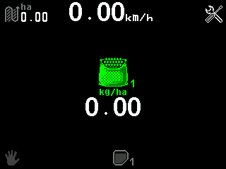
- Fläche, die auf dem aktiven Feld bearbeitet wurde, in ha. Nur mit Geschwindigkeitssensor.
- Fahrgeschwindigkeit, in km/h, mit denselben Meldungen wie auf dem Startbildschirm — siehe Geschwindigkeit. Nur mit Geschwindigkeitssensor.
- Einstellungssymbol. Berühren und halten Sie es, um das Hauptmenü zu öffnen.
- Produktanzeige — hier Produkt 1, in kg/ha. Eine für jedes Produkt, das mindestens eine überwachte Dosiereinheit nach Masse ausbringt.
- Menge. Die tatsächlich ausgebrachte Menge; solange die Anzeige gewählt ist, der Sollwert.
- Arbeitspause — die Hand. Dunkelgrau: Es wird gearbeitet; gelb blinkend: Ausbringung gesperrt — siehe Ausbringung von Hand sperren.
- Behälter, einer für jeden Behälter.
Je nach Maschine erscheinen weitere Anzeigen: die Sollmenge des Flüssigdüngers in L/ha, die Menge von Saatgut und Trockendünger im Modus „Einzelkorn“, eine Gebläseanzeige für jedes Gebläse und unten rechts die Gerätestellung. Reicht der Platz nicht für alle Gebläse und Behälter, lässt das Panel zuerst ein Gebläse weg, dann Behälter; der Startbildschirm zeigt sie weiterhin alle.
Drei Zustände
- Beobachtung — nichts ist gewählt. Die Anzeigen zeigen die tatsächlich ausgebrachten Mengen.
- Mengenänderung — „PLUS“ oder „MINUS“. Die Mengenanzeigen lassen sich wählen; siehe Sollmenge ändern.
- Sensoreinstellung — „MENU“ gedrückt halten. Das Einstellungssymbol, die Geschwindigkeit, die Gebläse, die Behälter und die Gerätestellung lassen sich wählen; „PLUS“ und „MINUS“ nehmen den gewählten Sensor in die Überwachung oder aus ihr, „MENU“ öffnet sein Kontextmenü — oder, beim Einstellungssymbol, das Hauptmenü.
In beiden Modi bewegen „UP“ und „DOWN“ die Auswahl, „BACK“ verlässt den Modus, und „HOME“ gedrückt gehalten sperrt oder gibt die Ausbringung frei.
Farben einer Mengenanzeige
| Was Sie sehen | Bedeutung |
|---|---|
| Symbol und Einheit grün, Wert weiß | In Ordnung; der Wert ist die ausgebrachte Menge. |
| Symbol, Einheit und Wert rot blinkend | Die ausgebrachte Menge weicht stärker vom Sollwert ab als zulässig. |
| Dunkel blaugrüner Hintergrund, hellblaues Symbol, gelber Wert | Gewählt; der Wert ist der Sollwert. |
| !!!!, XXXX oder ???? rot blinkend (nur Flüssigdünger) | Nicht überwacht / keine Verbindung / ein Gerät falscher Art. |
Im Modus „Einzelkorn“ zeigen die Anzeigen für Saatgut und Dünger die Aussaatdichte in Tsd/ha, solange sie nicht gewählt sind, und den Sollwert in K/m, solange sie gewählt sind.
Die Menge eines Produkts wird über jeweils 10 m Fahrstrecke gemittelt. Sie gilt als abweichend, wenn sie um mehr als „Produktmenge Fehler,%“ danebenliegt: Der Alarm kommt nach zwei solchen Abschnitten in Folge und endet nach zwei guten Abschnitten. Im Stillstand, bei gesperrter Ausbringung oder ohne überwachte Dosiereinheit zeigt die Anzeige 0,00, und der Alarm ist gelöscht.
Zu den Motoren und ihrer Kalibrierung
Berühren und halten Sie eine Produktanzeige — oder wählen Sie sie im Zustand Mengenänderung und drücken Sie „MENU“. Es öffnet sich eine Liste der Motoren dieses Produkts („Motor“ oder „Düng.mot.“ mit der Nummer). Wählen Sie einen Motor und drücken Sie „MENU“: „Kalibrierung, Produkt“, „Masse, g“ und „Umdrehung.“. Wie Sie kalibrieren: Motor nach Masse kalibrieren.
Die Liste gibt es nur für Produkte, deren Motoren im Modus „Durchfluss“ oder „Hybrid“ arbeiten. Fährt die Maschine, lehnt das Panel ab: Für eine Kalibrierung muss die Geschwindigkeit null sein. Berühren und Halten der Flüssigdüngeranzeige öffnet das Kontextmenü der Pumpe.
Der Bildschirm Motoren
Eine Kachel je Dosiermotor und ein Symbol je Fahrgassen-Aktuator — wie Sie zum Bildschirm gelangen, die Farben lesen, einen Motor aus der Überwachung nehmen und seine Einstellungen öffnen.
Der Bildschirm Motoren zeigt die elektrischen Dosiermotoren der Maschine, je eine Kachel, und die Fahrgassen-Aktuatoren. Auf diesen Bildschirm schauen Sie, wenn eine Reihe nicht mehr sät und Sie wissen wollen, ob der Motor der Grund ist. Er hat keine Überschrift: Er trägt nur nummerierte Symbole von Motoren und Aktuatoren — keine Mengen, keine Fläche, keine Geschwindigkeit.
Er ist vorhanden, wenn das Profil mindestens einen Saatmotor, einen Düngermotor oder einen Fahrgassen-Aktuator enthält, und wird nur oberhalb der Stufe „Fahrer“ angezeigt — schalten Sie zuerst die Stufe „Agronom“ frei (Stufe „Agronom“ freischalten). Dann folgt er auf den Bildschirm Statistik: dreimal „HOME“ vom Startbildschirm aus. „HOME“ führt weiter zum Bildschirm Sollmengen; „BACK“ zurück zum Startbildschirm.

Die Saatmotoren stehen in einer Leiste oben, nummeriert in der Reihenfolge des Profils. Darunter eine Leiste mit Düngermotoren, falls die Maschine welche hat — bei einer Maschine mit mehr als zwanzig Reihen und ohne Düngermotoren enthält die zweite Leiste die zweite Hälfte der Saatmotoren. Die Fahrgassen-Aktuatoren stehen unter den Leisten. Neben jedem Motor: die Drehzahl der angetriebenen Welle in U/min; bei Maschinen mit vielen Motoren entfällt sie, damit alle Kacheln Platz haben.
Eine Motorkachel lesen
Die Farbe des Symbols ist der Zustand. Symbol und Zeichen wechseln einmal pro Sekunde, solange der Zustand nicht normal ist.
| Symbol | Wert | Zustand |
|---|---|---|
| Motor, grün | die Drehzahl | Überwacht und angetrieben. |
| Motor und STOP, gelb | die Drehzahl | In Ordnung, aber die Ausbringung ist aus — am Vorgewende oder von Hand gesperrt. Keine Störung. |
| Motor, rot | die Drehzahl | Alarm. Das Alarmfenster nennt den Grund. |
| Motor und Kreuz, rot | XXX | Keine Verbindung zum Motorcontroller. Prüfen Sie seine Stromversorgung sowie sein Kabel und die Steckverbinder. |
| Motor und ?, rot | ??? | Das antwortende Gerät ist kein Motorcontroller, oder der Controller ist in seinem Aktualisierungsmodus geblieben. |
| Motor durchgestrichen | !!! | Aus der Überwachung genommen: weder angetrieben noch überwacht. |

Einen Fahrgassen-Aktuator lesen
| Symbol | Zustand |
|---|---|
| Eingezogen oder ausgefahren, grau, stetig | Er hat diese Stellung erreicht. |
| Eingezogen oder ausgefahren, gelb, stetig | Er fährt in diese Stellung. |
| Eingezogen und ausgefahren im Wechsel, gelb | Die Stellung ist nicht sicher. |
| Rotes Kreuz, blinkend | Keine Verbindung. |
| Rotes Fragezeichen, blinkend | Das antwortende Gerät ist kein Fahrgassen-Aktuator. |
| Aktuatorsymbol, rot, blinkend | Der Aktuator meldet einen Alarm. |
| Durchgestrichen, grau, blinkend | Aus der Überwachung genommen. |
Die erreichte Stellung ist grau, nicht grün: Nur Motoren sind hier grün.
Einen Motor wählen
Halten Sie „MENU“ gedrückt, um die Auswahl einzuschalten; sie steht auf dem ersten Motor, auf weißem Grund. „UP“ und „DOWN“ bewegen sich durch eine Leiste und weiter in die nächste Leiste und zu den Aktuatoren. Dann:
- „MENU“ öffnet das Kontextmenü des gewählten Motors oder Aktuators — Kontextmenü des Motors.
- „MINUS“ / „PLUS“ nehmen ihn aus der Überwachung oder in sie — Sensor in die Überwachung nehmen oder aus ihr nehmen.
- „BACK“ verlässt die Auswahl; ein zweites „BACK“ führt zurück zum Startbildschirm.

Der Servicebildschirm der Motoren
Der Kontextmenüpunkt „Elektromotoren“ (Stufe „Service“) öffnet einen Bildschirm für den Servicetechniker: Versionen, Motortyp, Soll- und Istdrehzahl, Fehlercode, Spannungen, Temperatur, Strom und sechzehn Zustandszeichen in der Ansicht „Register“ sowie Zähler je Feld in der Ansicht „Statistik“. Für die Aussaat brauchen Sie ihn nicht.

- Modus — „HOME“ schaltet zwischen den Ansichten um.
- Motornummer — „MINUS“ und „PLUS“ schalten den Motor um.
- Name der Ansicht.
- Feldnummer — „UP“ und „DOWN“ schalten sie um; (A) kennzeichnet das aktive Feld.
- Zähler — „Klemmt“, „Abbrüche“ und „Andere“. Über null rot.
- Störung — gefahrene Strecke mit dem Motor in Störung.
„BACK“ verlässt den Bildschirm. Gehört die Nummer zu keinem Motor des Profils, erscheint „Keine Dat.“.
Sollmenge oder Alarmschwelle ändern
Die Alarmschwelle, die Sollmenge in Körnern je Meter oder die Produktmenge in kg/ha anheben oder absenken — auf dem Startbildschirm oder dem Bildschirm Sollmengen.
Jedes Diagramm und jedes nach Masse ausgebrachte Produkt hat ein Mengenfeld: oben der gemessene Wert, darunter der eingestellte. Was der eingestellte Wert ist, hängt vom Modus ab — siehe Das Sektionsdiagramm:
| Modus | Der eingestellte Wert | Ein Schritt |
|---|---|---|
| „Durchfluss“ | Alarmschwelle, Körner je Sekunde | 1 K/s |
| „Hybrid“ | Sollmenge, Körner je Meter | 1 K/m |
| „Einzelkorn“ | Sollmenge, Körner je Meter | 0,1 K/m (0,5 bis 50,0) |
| Produkt nach Masse | Sollmenge, kg/ha | 0,1 kg/ha bis 50,0, darüber 1 kg/ha (1,0 bis 999,0) |
| Flüssigdünger | Sollmenge, L/ha | 0,1 L/ha bis 50,0, darüber 1 L/ha |
Auf dem Startbildschirm
Drücken Sie einmal „PLUS“ oder „MINUS“. Das zuletzt benutzte Mengenfeld wird gewählt und blinkt; es hat sich noch nichts geändert.
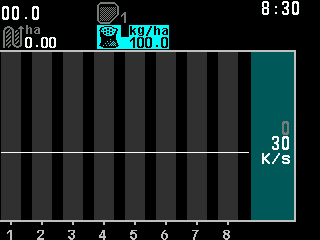
Die Sollmenge eines Produkts in kg/ha auf dem Startbildschirm ändern. Hat die Maschine mehr als ein Mengenfeld — Saatgut und Dünger, Produkte nach Masse —, drücken Sie „DOWN“ oder „UP“, um zum nächsten oder zum vorigen zu wechseln.
Drücken Sie „PLUS“, um den Wert zu erhöhen, oder „MINUS“, um ihn zu senken, einen Schritt je Berührung. Gedrückt halten wiederholt die Taste nicht.
Drücken Sie „BACK“, um abzuschließen, oder warten Sie einfach: Fünf Sekunden nach der letzten Berührung hört das Feld auf zu blinken. Der neue Wert gilt.
Im Modus „Einzelkorn“ zeigt das Panel, während Sie die Sollmenge ändern, dieselbe Menge auch als Aussaatdichte in Tsd/ha und als Abstand zwischen den Körnern in Zentimetern.
Auf dem Bildschirm Sollmengen
Drücken Sie „PLUS“ oder „MINUS“. Der zuletzt gewählte Sollwert wird hervorgehoben — dunkel blaugrüner Hintergrund, gelber Wert; nach dem Einschalten „Produkt 1“. Der erste Druck ändert nichts.
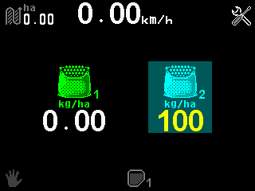
Der Bildschirm Sollmengen mit zur Änderung gewähltem Produkt 2. Wechseln Sie mit „UP“ und „DOWN“ zum gewünschten Sollwert.
Stellen Sie den Wert mit „PLUS“ und „MINUS“ ein.
Drücken Sie „BACK“. Die Hervorhebung verschwindet; die Anzeigen zeigen wieder die ausgebrachten Mengen.
Kommt man von oberhalb von 50,0 herunter, hält die Produkt- oder Flüssigmenge genau bei 50,0 an; die nächste Berührung führt darunter, in Schritten von 0,1. Die Sollmenge für Saatgut im Modus „Einzelkorn“ ist eine Zahl für alle Kornsensoren: Der Startbildschirm und der Bildschirm Sollmengen ändern denselben Wert, und es gibt dafür keinen Menüpunkt.
Der Wert wird etwa anderthalb Sekunden nach der letzten Änderung von selbst gespeichert; warten Sie so lange, bevor Sie ausschalten.
Alarmschwelle einer Drillmaschine einstellen
Lassen Sie den Hectare Mini die Alarmschwelle mit einem langen Druck aus dem ausgebrachten Fluss setzen — oder stellen Sie sie von Hand ein —, damit eine Reihe, die Fluss verliert, gemeldet wird.
Im Modus „Durchfluss“ überwacht das Panel jede Reihe gegen eine Alarmschwelle in Körnern je Sekunde: Eine Reihe, deren Fluss darunter fällt, wird gemeldet. Ist sie zu hoch eingestellt, sinken die Säulen unter die Linie, und das Diagramm zeigt „NICHT ÜBERWACHT“; ist sie zu niedrig, bleibt eine teilweise verstopfte Reihe unbemerkt. Am einfachsten lassen Sie das Panel sie aus dem Fluss setzen, den es sieht.
Das Panel setzen lassen
Beginnen Sie wie gewohnt mit der Aussaat, mit Arbeitsgeschwindigkeit, und warten Sie, bis das Panel einen kurzen Piepton gibt — es überwacht jetzt die Aussaat.
Halten Sie auf dem Startbildschirm „BACK“ gedrückt. Das Panel gibt einen kurzen Piepton.
Sehen Sie sich die Mengenfelder an. Im Modus „Durchfluss“ ist jede Alarmschwelle jetzt die Hälfte des in diesem Augenblick gemessenen Flusses; im Modus „Hybrid“ wird die Sollmenge auf die in diesem Augenblick gemessene Menge gesetzt. Das geänderte Feld ist hervorgehoben.
Das funktioniert für das Saatdiagramm, das Düngerdiagramm und Flüssigdünger im Modus „Durchfluss“ alle zugleich, aber nur, solange das Panel die Aussaat überwacht. Im Stillstand oder im Modus „Einzelkorn“ bewirkt der lange Druck nichts.
Von Hand einstellen
Drücken Sie auf dem Startbildschirm „PLUS“ oder „MINUS“: Der erste Druck wählt das Mengenfeld für Saatgut, weitere Drücke ändern es um 1 K/s. „DOWN“ und „UP“ wechseln zum Mengenfeld des Düngers. Einzelheiten: Sollmenge ändern.
Produktausbringung von Hand sperren
Halten Sie die Dosiermotoren und die Flüssigdüngerpumpe mit einem langen Druck an, damit sich nichts dreht, während Sie an der Maschine arbeiten — und wie das Panel die Sperre anzeigt.
An einer Maschine mit elektrischen Dosiermotoren, Düngermotoren oder einer Flüssigdüngerpumpe können Sie die Produktausbringung von Hand sperren. Solange sie gesperrt ist, dreht sich kein Dosiermotor, die Pumpe steht still, und das Panel erwartet keine Ausbringung: Alarme über eine zu niedrige Menge treten nicht auf. Nutzen Sie die Sperre immer, wenn Sie an den Dosiereinheiten arbeiten, oder um ein Feld ohne Aussaat zu überqueren.
Halten Sie auf dem Startbildschirm oder auf dem Bildschirm Sollmengen „HOME“ gedrückt, bis das Panel einen kurzen Piepton gibt.
Prüfen Sie die Sperre. Auf dem Startbildschirm blinkt in der Spalte rechts ein gelbes Motorsymbol; auf dem Bildschirm Sollmengen wird die Hand unten links gelb.

Die Hand der Arbeitspause: dunkelgrau bei der Arbeit, gelb bei Sperre. Zum Aufheben der Sperre halten Sie „HOME“ erneut gedrückt. Ein kurzer Piepton; das Symbol hört auf zu blinken, und die Ausbringung wird fortgesetzt.
An jeder anderen Maschine bewirkt der lange Druck nichts, und die Hand bleibt dunkelgrau.
Auf dem Bildschirm Motoren zeigt ein gesperrter Motor ein gelbes STOP — siehe Der Bildschirm Motoren.
Sensor in die Überwachung nehmen oder aus ihr nehmen
Schalten Sie die Überwachung eines einzelnen Sensors, Motors oder Aktuators im Sensoreinstellmodus aus und ein — was das Panel fragt und wann es verlangt, die Statistik zu löschen.
Ein Sensor, der aus der Überwachung genommen ist, wird nicht mehr überwacht: Er löst keine Alarme aus, und seine Anzeige zeigt das blinkende Zeichen für nicht überwacht. Tun Sie das nur, um mit einem defekten Sensor weiterzuarbeiten, bis er repariert ist — und nehmen Sie ihn danach wieder in die Überwachung.
Halten Sie auf dem Startbildschirm „MENU“ gedrückt, bis ein Gerät auf weißem Grund erscheint. Das Panel ist jetzt im Sensoreinstellmodus.
Der Startbildschirm im Sensoreinstellmodus, die Geschwindigkeitsanzeige gewählt. Wählen Sie den Sensor mit „UP“ und „DOWN“. In einem Diagramm bekommt die gewählte Säule einen grauen Hintergrund und eine weiße Nummer.
Drücken Sie „MINUS“, um ihn aus der Überwachung zu nehmen, oder „PLUS“, um ihn wieder in die Überwachung zu nehmen.
Das Panel fragt, ob Sie sicher sind. Drücken Sie „MENU“ für „Ja“ oder „BACK“ für „Nein“; das grüne „Ja“ und das rote „Nein“ auf dem Bildschirm können Sie auch berühren.

Die Frage, bevor die Überwachung eines Sensors ausgeschaltet wird. Drücken Sie „BACK“, um den Sensoreinstellmodus zu verlassen.
Die Frage kommt nur beim ersten Mal, solange Sie im Sensoreinstellmodus bleiben. Danach wirken „PLUS“ und „MINUS“ bei jedem weiteren Sensor ohne Rückfrage, sodass sich eine ganze Reihe von Sensoren schnell umschalten lässt. Haben Sie den Modus verlassen, fragt das Panel wieder.
Dasselbe funktioniert auf dem Bildschirm Sollmengen („MENU“ gedrückt halten) und, für Motoren und Fahrgassen-Aktuatoren, auf dem Bildschirm Motoren. Die Überwachung des Geschwindigkeitssensors lässt sich nicht ausschalten.
Wenn die Statistik gelöscht werden muss
Enthält das aktive Feld bereits Daten und ändert die Umschaltung die Menge der ausgebrachten Produkte — möglich bei Motoren in den Modi „Durchfluss“ und „Hybrid“ —, verlangt das Panel zuerst, die Statistik des aktiven Feldes zu löschen. „Ja“ löscht sie endgültig; auf der Stufe „Fahrer“ verlangt es außerdem den Code einer höheren Zugriffsstufe. Um die Daten zu behalten, wählen Sie zuerst ein leeres Feld — siehe Neues Feld beginnen.
Was das Kontextmenü bietet
Im Sensoreinstellmodus öffnet „MENU“ das Kontextmenü des gewählten Geräts: seinen Informationsbildschirm und seine Parameter, je nach Zugriffsstufe. Die Parameter jedes Sensors stehen in den Sensoreinstellungen.
Werte der Saattabelle zurücksetzen
Setzen Sie die Zähler und Intervallwerte der Saattabelle auf null — was zurückgesetzt wird, was nicht und was sie sonst noch zurücksetzt.
Die Werte der Saattabelle — Kornzähler, Qualität, Doppelbelegungen, Fehlstellen, Mengen, Liter Flüssigdünger — zählen ab dem Einschalten. Setzen Sie sie zurück, wenn Sie ein neues Feld oder eine neue Saatgutpartie beginnen.
Drücken Sie auf dem Startbildschirm „HOME“. Die Saattabelle öffnet sich.
Drücken Sie „MENU“. Das Panel fragt „Werte zurücksetzen?“.
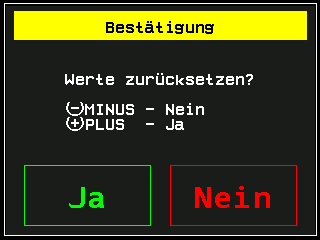
Die Frage, bevor die Werte zurückgesetzt werden. Drücken Sie „PLUS“ für „Ja“ oder berühren Sie „Ja“. „MINUS“, „Nein“ oder „BACK“ bricht ab.
Bei „Ja“ werden die Werte aller Sensoren zurückgesetzt — Saatgut, Trockendünger und Flüssigdünger —, gleichgültig, welche Tabelle Sie ansehen. Nur die Werte dieses Bildschirms: Die Feldstatistik bleibt unberührt.
Was sie sonst noch zurücksetzt
- Ein anderes aktives Feld auf dem Bildschirm Statistik zu wählen.
- Die Statistik des aktiven Feldes zu löschen.
- Das Ausschalten des Panels — die Werte gehören zur Arbeitssitzung.
Die Intervallwerte — Qualität, Doppelbelegungen, Fehlstellen und die Mengen — erneuert das Panel auch von selbst mit jedem abgeschlossenen Neuberechnungsintervall, sobald die Maschine wieder fährt. Die Kornzähler bleiben.
Die Arbeit auf einem neuen Feld beginnen
Wählen Sie das Feld, in das das Panel seine Statistik schreibt, und löschen Sie es, wenn es nicht leer ist — vor der ersten Fahrt auf einem neuen Feld.
Das Panel führt die Statistik mehrerer Felder. Es schreibt in eines davon, das aktive Feld, auf dem Bildschirm Statistik mit (A) gekennzeichnet. Machen Sie vor der ersten Fahrt auf einem neuen Feld ein leeres Feld zum aktiven.
Drücken Sie auf dem Startbildschirm zweimal „HOME“. Der Bildschirm Statistik öffnet sich mit dem aktiven Feld.
Drücken Sie „PLUS“ oder „MINUS“, bis das gewünschte Feld angezeigt wird. Felder ohne (A) sind nicht aktiv.
Drücken Sie „MENU“. Das Menü des Bildschirms öffnet sich.
Das Menü des Bildschirms Statistik. Wählen Sie „Feld wählen“ und drücken Sie „MENU“. Der Punkt wird nur bei einem Feld angezeigt, das nicht aktiv ist.
Das Panel fragt „Sind Sie sicher?“. Drücken Sie „PLUS“ für „Ja“. Das Feld ist jetzt aktiv, mit (A) gekennzeichnet, und die Werte der Saattabelle beginnen bei null.
Enthält das Feld bereits Daten zu anderen Produkten, als die Maschine jetzt ausbringt, verlangt das Panel zuerst, dieses Feld zu löschen; auf der Stufe „Fahrer“ will es außerdem den Code einer höheren Zugriffsstufe.
Ein Feld mit alten Daten löschen
Zeigen Sie das Feld auf dem Bildschirm Statistik an und drücken Sie „MENU“.
Wählen Sie „Statistik zurücksetzen“ und drücken Sie „MENU“.
Geben Sie auf der Stufe „Fahrer“ den Code der Stufe „Agronom“ am Ziffernblock ein. Oberhalb von „Fahrer“ fragt das Panel „Sind Sie sicher?“ — drücken Sie „PLUS“ für „Ja“.
Die Statistik dieses Feldes wird endgültig gelöscht. Die Summen über die Lebensdauer unter „Wegstrecke“ bleiben unberührt.
Scheiben mit Korn füllen
Drehen Sie die Säscheiben eines Einzelkornsägeräts mit Dosiermotoren, bis jede Scheibe Korn hält, damit die Aussaat vom ersten Meter an beginnt — wie Sie den Vorgang starten und das Ergebnis lesen.
Das gilt nur für Einzelkornsägeräte mit elektrischen Dosiermotoren für das Saatgut im Modus „Einzelkorn“. Ohne Saatmotoren im Profil oder in einem anderen Modus wird der Menüpunkt nicht angezeigt.
Werden die Scheiben von Elektromotoren angetrieben, stehen sie leer, bis die Motoren laufen. Fahren Sie mit leeren Scheiben los, bekommen die ersten Meter jeder Reihe nichts: Jede Scheibe muss erst Körner aufnehmen und bis zur Abwurfstelle mitführen. Das Füllen dreht die Scheiben bei stehender Maschine, damit die Aussaat vom ersten Meter an beginnt.
Halten Sie die Maschine an. Bei Fahrt ist der Punkt verborgen.
Drücken Sie auf dem Startbildschirm „MENU“. Wählen Sie den ersten Punkt, „Scheiben mit Korn füllen“, und drücken Sie „MENU“. Er ist auf jeder Zugriffsstufe offen.
Das Panel verlangt eine Bestätigung. Drücken Sie „PLUS“ oder berühren Sie „Ja“. „MINUS“, „Nein“, „BACK“ oder eine Berührung neben dem Fenster bricht ab.

Die Frage, bevor sich die Scheiben drehen. Beobachten Sie die Kacheln. Jeder Motor dreht seine Scheibe mit 4 U/min der angetriebenen Welle, bis der Kornsensor seiner Reihe das erste Korn registriert. Während der Vorgang läuft, sagt die unterste Zeile, dass „BACK“ ihn abbricht.

Der laufende Vorgang: Kachel 1 ist fertig und grün, die übrigen drehen noch. Haben alle Motoren fertig, gibt das Panel drei kurze Pieptöne und zeigt „Vorgang beendet.“ Lesen Sie die Kacheln in Ruhe ab und drücken Sie dann „BACK“, um zum Hauptmenü zurückzukehren.
Zum vorzeitigen Beenden drücken Sie „BACK“: Jeder Motor hält sofort an, kehrt zur Aussaatlogik zurück, und der Bildschirm schließt sich. Sie können sofort neu starten. Auf diesem Bildschirm wirkt nur „BACK“; die übrigen Tasten und Berührungen bewirken nichts.
Die Kacheln lesen

| Kachel | Zustand |
|---|---|
| Dunkelgrau, volle Höhe | Wartet, bis sie an der Reihe ist — es laufen nur acht Motoren gleichzeitig. |
| Gelb, oberer Teil | Läuft: Die Scheibe dreht sich. |
| Grün, oberer Teil | Fertig: Der Kornsensor hat ein Korn registriert. |
| Dunkelrot, volle Höhe, hellrote Nummer | Fehlgeschlagen: Die Scheibe ließ sich nicht füllen. Die Buchstaben nennen den Grund. |
Ein Motor schlägt fehl, wenn innerhalb von 1,25 Umdrehungen der Welle — etwa neunzehn Sekunden — kein Korn registriert wird. Ein Motor, der eine Störung meldet, wird angehalten und sofort als fehlgeschlagen gewertet; ein Motor außerhalb der Überwachung dreht sich nicht und gilt als fehlgeschlagen. Zusätzliche Motoren ohne eigenen Kornsensor drehen ihre Scheiben, werden aber als fehlgeschlagen gemeldet, weil kein Korn zu sehen ist. Düngermotoren nehmen nur teil, wenn auch sie im Modus „Einzelkorn“ laufen, jeweils gepaart mit dem Düngersensor derselben Nummer.
Buchstaben auf einer fehlgeschlagenen Kachel
Die Buchstaben stehen immer an denselben Stellen — m links, k in der Mitte, s rechts — und Rot heißt Störung, Weiß heißt aus der Überwachung genommen.

| Buchstabe | Bedeutung |
|---|---|
| m rot | Eine Störung des Motors während des Vorgangs. |
| m weiß | Der Motor ist aus der Überwachung genommen und kann nicht laufen. |
| k rot | Der Kornsensor sah kein Korn, während sich die Scheibe drehte. |
| s rot | Eine Störung des Kornsensors während des Vorgangs. |
| s weiß | Der Kornsensor ist aus der Überwachung genommen, oder dem Motor ist kein Kornsensor zugeordnet. |
Ist der Kornsensor aus der Überwachung genommen, dreht ein intakter Motor die Scheibe trotzdem etwa eineinviertel Umdrehungen, die Scheibe wird also gefüllt — das Panel meldet aber eine Störung, weil es nie ein Korn gesehen hat.
Einem Dosiermotor ein Produkt zuweisen
Sagen Sie dem Panel, welches seiner drei Produkte jeder Dosiermotor ausbringt, damit eine Sollmenge in kg/ha für alle Motoren dieses Produkts gilt.
Jeder elektrische Dosiermotor treibt einen Dosierer an und gehört zu genau einem Produkt. Das Panel führt bis zu drei Produkte: „Produkt 1“, „Produkt 2“ und „Produkt 3“. Mehrere Motoren können dasselbe Produkt ausbringen; seine Menge wird dann einmal für alle eingestellt. Im Werkszustand sind alle Motoren „Produkt 1“.
Das braucht die Stufe „Agronom“ (Stufe „Agronom“ freischalten) und Motoren im Modus „Durchfluss“ oder „Hybrid“.
Gehen Sie zum Bildschirm Motoren und halten Sie „MENU“ gedrückt. Der erste Motor ist gewählt.
Der Bildschirm Motoren mit gewähltem Motor. Wählen Sie den Motor mit „UP“ und „DOWN“.
Drücken Sie „MENU“. Das Kontextmenü öffnet sich.
Gehen Sie mit „DOWN“ zu „Produkttyp“.
Wählen Sie das Produkt mit „PLUS“ und „MINUS“.
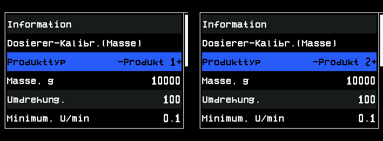
Produkttyp vor und nach der Änderung. Fragt das Panel, ob die Statistik gelöscht werden soll, drücken Sie „MENU“ für „Ja“ oder „BACK“ für „Nein“.
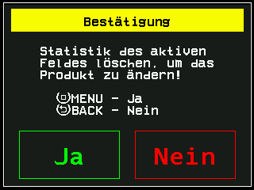
Die Frage, bevor der Produkttyp auf einem Feld mit Daten geändert wird. Drücken Sie „BACK“. Sie sind wieder auf dem Bildschirm Motoren. Wiederholen Sie ab Schritt 2 für jeden weiteren Motor.
Während Sie durch die Werte schalten, wird ein Produkt übersprungen, das eine Dosierwelle mit Massenüberwachung bereits ausbringt — ein Produkt wird entweder von Motoren oder von solchen Dosierern ausgebracht, nicht von beiden. Steht kein anderes Produkt zur Verfügung, bewegt sich der Wert nicht; das ist keine Störung.
Stellen Sie dann die Menge jedes Produkts ein: Sollmenge ändern, und kalibrieren Sie jeden Motor: Motor nach Masse kalibrieren.
Einen Dosiermotor nach Masse kalibrieren
Sagen Sie dem Panel, wie viel Produkt ein motorgetriebener Dosierer je Wellenumdrehung liefert — was Sie brauchen, die Schritte auf dem Bildschirm und was die Fehlermeldungen bedeuten.
Die Kalibrierung sagt dem Panel, wie viel Produkt der Dosierer je Umdrehung seiner Welle liefert. Ohne sie kann das Panel die Menge in kg/ha nicht in eine Wellendrehzahl umrechnen. Kalibrieren Sie jeden Dosierer einzeln und erneut, sobald sich das Produkt oder die Saatgutpartie ändert. Sie gilt für Motoren in den Modi „Durchfluss“ und „Hybrid“.
Sie brauchen: eine Waage, einen Behälter zum Daruntersetzen unter den Dosierer und das Produkt im Saatgutbehälter.
Halten Sie die Maschine an. Bei Fahrt ist der Punkt Kalibrierung verborgen.
Öffnen Sie das Kontextmenü des Motors — auf dem Bildschirm Motoren oder über sein Produkt auf dem Bildschirm Sollmengen. Wählen Sie „Dosierer-Kalibr.(Masse)“ (vom Bildschirm Sollmengen aus: „Kalibrierung, Produkt“) und drücken Sie „MENU“.
Der erste Bildschirm zeigt die Sollmengen der verwendeten Produkte — das Produkt dieses Motors zwischen Pfeilen — und unter „Geschw.-Grenze der Dosierung:“ die niedrigste und die höchste Fahrgeschwindigkeit, bei der sich die Mengen ausbringen lassen. Drücken Sie „PLUS“.

Der erste Kalibrierbildschirm mit den Geschwindigkeitsgrenzen. Der Bildschirm listet auf, was vor dem Kalibrieren zu tun ist: den leeren Behälter wiegen und die Masse notieren, den Saatgutbehälter füllen, den Behälter unter den Dosierer setzen, die Rotorzellen füllen. Drücken Sie „MENU“, um die Rotorzellen zu füllen.

Die Liste der Handlungen vor der Kalibrierung. Der Motor dreht die Welle, und der Zähler „Umdrehung.“ läuft. Nach zwei Umdrehungen hält das Panel den Motor an und kehrt zurück. „BACK“ hält ihn früher an.
Drücken Sie „UP“. Der Bildschirm listet die Schritte der eigentlichen Kalibrierung auf: den Behälter leeren, ihn unter den Dosierer setzen, kalibrieren, den Motor anhalten, wiegen. Leeren Sie den Behälter und setzen Sie ihn zurück.
Drücken Sie „MENU“. Der Motor läuft, und der Dosierer füllt den Behälter. Fangen Sie so viel wie möglich auf — mindestens 1 kg, höchstens 60 kg.
Drücken Sie „BACK“, um den Motor anzuhalten.
Nach mehr als einer Wellenumdrehung bietet die unterste Zeile „MINUS“ an, um die Kalibrierung abzuschließen. Drücken Sie „MINUS“.
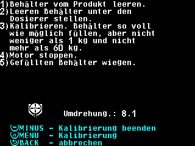
Der Kalibrierbildschirm mit der Zeile zum Abschließen. Wiegen Sie den vollen Behälter. Geben Sie am Ziffernblock die Differenz zwischen voll und leer in Gramm ein und drücken Sie „MENU“. Das Panel speichert „Masse, g“ und „Umdrehung.“ und kehrt zum ersten Bildschirm zurück.

Der Ziffernblock fragt nach der Masse in Gramm. Drücken Sie „BACK“, um zu verlassen.
Um die Kalibrierung statt in Schritt 9 zu verwerfen, drücken Sie „BACK“: Das Panel fragt „Sind Sie sicher?“ und verwirft bei „PLUS“; „MINUS“ kehrt zur Kalibrierung zurück.
Das Kontextmenü zeigt danach nicht Ihre Gramm, sondern ein gleichwertiges Zahlenpaar; nur ihr Verhältnis zählt. Es wird von selbst gespeichert.
Meldungen während der Kalibrierung
| Meldung | Bedeutung und was zu tun ist |
|---|---|
| „ALARM“ mit einem Grund, z. B. „Keine Verbindung“ oder „Keine Daten vom Drehsensor“ | Die Verbindung ging verloren, der Motor meldete einen Alarm, oder es kamen zehn Sekunden lang keine Wellenumdrehungen an. Der Motor wird angehalten, nichts wird gespeichert. „BACK“ führt zum ersten Bildschirm zurück; beginnen Sie von vorn. |
| „Alle E-Motoren nicht überwacht.“ | Kein Motor ist überwacht. Nehmen Sie den Motor auf dem Bildschirm Motoren mit „PLUS“ in die Überwachung. |
| Der Motorname in Rot mit „Nicht überwacht“, „Keine Verbindung“ oder „ALARM“ | Die Kalibrierung kann erst beginnen, wenn dieser Zustand behoben ist. |
| „Dosierung unmöglich!“, Grenzen in Rot | Die Mengen widersprechen einander: Keine Geschwindigkeit erfüllt alle. Ändern Sie eine Menge oder die Grenzen der Wellendrehzahl — jede Zeile nennt das Produkt, das sie vorgibt. |
| „Kalibrierung am Bedienteil“ | Am Motorcontroller ist ein Taster eingerichtet: Der Motor läuft nur, solange der Taster gehalten wird. |
| Die Geschwindigkeit muss null sein (in jeder Sprache auf Englisch) | Die Maschine fährt. Halten Sie sie an. |
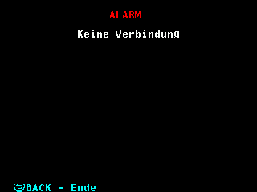
Den Fahrgassenrhythmus einstellen
Sagen Sie dem Hectare Mini, bei welchen Durchgängen welcher Aktuator oder Motor abschaltet — die Grenzen, der Rhythmus-Editor, seine Dialoge und die Reihenfolge, die verhindert, dass Ihr Rhythmus überschrieben wird.
Eine Fahrgasse ist die Spur, in der später die Spritze fährt. Sie legen sie beim Säen an: Das Panel schaltet bei bestimmten Durchgängen — Überfahrten über das Feld — Saatreihen oder Motoren ab. Es zählt die Durchgänge und beginnt nach dem letzten wieder beim ersten. Die Zahl der Durchgänge und die Liste, welches Gerät bei welchem Durchgang abschaltet, bilden den Rhythmus. Beispiel: vier Durchgänge, Aktuator 1 schaltet bei Durchgang 4 ab — jede vierte Überfahrt lässt eine Fahrgasse.
| Grenze | Wert |
|---|---|
| Gespeicherte Rhythmen | Drei, jeweils einer aktiv. Behalten Sie die Muster der Maschinen, mit denen Sie arbeiten. |
| Durchgänge in einem Rhythmus | 1 bis 50. |
| Fahrgassen-Aktuatoren | Höchstens vier; der Profilpunkt „Fahrg.-Aktuatoren“ legt fest, wie viele. |
| Abschaltdurchgänge je Gerät | Vier. |
Mehr weiß das Panel nicht: Es gibt keine Einstellung für eine Startseite oder für die Breite der Fahrgasse. Welche Saatreihen ein Aktuator tatsächlich abschaltet, stellt „Zuordnung Sensor-Aktuator“ ein (Einstellungsmenü); ohne sie zählt das Panel die Durchgänge, schaltet aber nichts ab.
Der Punkt „Fahrgasse“ ist nur vorhanden, wenn die Maschine einen Fahrgassen-Aktuator hat oder ebenso viele Saatmotoren wie Kornsensoren oder ebenso viele Düngermotoren wie Düngersensoren. Das Einrichten braucht die Stufe „Agronom“ (Stufe „Agronom“ freischalten).
Drücken Sie „MENU“ und öffnen Sie dann „Einstell.“ → „Sämaschinen-Parameter“ → „Fahrgasse“. Stellen Sie „Fahrgasse“ mit „PLUS“ auf „Ja“.
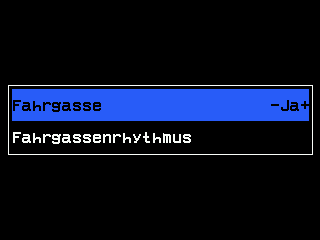
Das Untermenü Fahrgasse. Wählen Sie „Fahrgassenrhythmus“ und drücken Sie „MENU“. Der Rhythmus-Editor öffnet sich.
Wählen Sie die Rhythmusnummer mit „PLUS“ / „MINUS“, drücken Sie „MENU“ und wählen Sie „Wählen“. Neben der Nummer erscheint („Aktiv“). Ohne das wird der Rhythmus gespeichert, aber nicht verwendet.
Gehen Sie mit „DOWN“ zur Zahl der Durchgänge, drücken Sie „MENU“, stellen Sie „Durchgänge“ mit „PLUS“ / „MINUS“ ein und bestätigen Sie mit „MENU“.
Gehen Sie mit „DOWN“ in die leere Zeile eines Abschnitts und drücken Sie „MENU“. Stellen Sie die Gerätenummer und den „Durchgang“ ein, bei dem es abschaltet; bestätigen Sie mit „MENU“.
Für weitere Abschaltdurchgänge desselben Geräts gehen Sie mit „PLUS“ zur Zelle mit dem „MENU“-Zeichen am Ende seiner Zeile und drücken „MENU“ — bis zu vier.
Drücken Sie „BACK“ oder halten Sie „HOME“ gedrückt. Der Rhythmus ist gespeichert.
Der Rhythmus-Editor
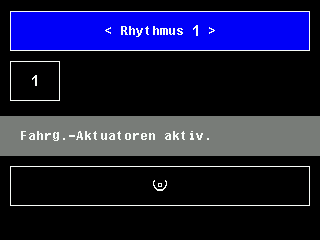
Lesen Sie ihn von oben nach unten: „Rhythmus“ mit seiner Nummer zwischen Pfeilen und (Aktiv), wenn er benutzt wird; darunter die Zahl der Durchgänge in einem Feld; dann bis zu drei Abschnitte — „Fahrg.-Aktuatoren aktiv.“, „Fahrg.-Motoren aktivieren“, „Fahrg.-Düngermotoren aktiv.“ (bei beiden Modi „Einzelkorn“: „Fahrg.-Motoren Gr.A aktiv.“ und „Fahrg.-Motoren Gr.B aktiv.“). Jede Zeile nennt ein Gerät — „Aktuator“, „Motor“, „Düng.mot.“ — und die Durchgänge, bei denen es abschaltet; eine Zelle mit dem „MENU“-Zeichen fügt einen Durchgang oder eine Zeile hinzu. Eine gewählte Zelle ist weiß auf Blau.
| Taste | Was sie bewirkt |
|---|---|
| „UP“ / „DOWN“ | Eine Zeile nach oben oder unten, über die Abschnitte hinweg. |
| „PLUS“ / „MINUS“ | Auf der Rhythmusnummer: nächster / voriger Rhythmus. In einer Zeile: eine Zelle nach rechts / links. Auf der Zahl der Durchgänge: nichts — öffnen Sie sie mit „MENU“. |
| „MENU“ | Öffnet den Dialog der gewählten Zelle. |
| „BACK“ | Speichert und kehrt zum Menü „Fahrgasse“ zurück. |
| „HOME“ gedrückt gehalten | Speichert und kehrt zum Startbildschirm zurück. Ein kurzer Druck bewirkt hier nichts. |
Die Dialoge
- Rhythmusnummer: „Wählen“ macht ihn zu dem in Benutzung; „Rhythmus zurücksetzen“ löscht seine Zeilen und setzt seine Durchgänge auf 1.
- Zahl der Durchgänge: Wird sie gesenkt, werden die Einträge für wegfallende Durchgänge gelöscht; eine Zeile ohne Durchgang verschwindet. War der aktuelle Durchgang größer als die neue Zahl, beginnt das Zählen wieder bei 1.
- Zeile eines Geräts: die Gerätenummer und „Löschen“. Nummern, die im Abschnitt schon verwendet sind, werden übersprungen — lesen Sie den Wert ab, zählen Sie nicht die Drücke.
- Durchgang einer Zeile: „Durchgang“, „Durchg.lös.“ und „Alle Durchg.lös.“. Durchgänge, die schon in der Zeile stehen, werden übersprungen. Sind schon alle Durchgänge eingetragen, erscheint stattdessen „Keine freien Durchgänge!“; jede Taste schließt das Fenster.
Was wo gespeichert wird
Die drei Rhythmen, die Zahl der Durchgänge, der aktuelle Durchgang, „Fahrgasse“ und „Autom. Umschaltung“ gehören zu den Einstellungen des Panels und werden kurz nach der letzten Berührung von selbst gespeichert. Das Profil enthält nur, wie viele Geräte es gibt; beim Öffnen löscht der Editor Zeilen, für die das Profil kein Gerät hat. Bei „Fahrgasse“ auf „Nein“ kehren alle Aktuatoren und Motoren zur Aussaat zurück.
Die Arbeit auf dem Feld: Nächster Fahrgassen-Durchgang.
Fahrgasse auf dem Feld — Durchgangsanzeige und nächster Durchgang
Lesen Sie die Fahrgassenanzeige, wechseln Sie von Hand zum nächsten Durchgang oder lassen Sie das Panel es anhand der Spuranzeiger oder der Gerätestellung tun, und erkennen Sie eine für die Fahrgasse abgeschaltete Reihe.
Sobald „Fahrgasse“ auf „Ja“ steht (Den Fahrgassenrhythmus einstellen), zeigt der Startbildschirm die Fahrgassenanzeige: ein Symbol mit Reifenspuren und daneben oben den aktuellen Durchgang und, kleiner, darunter die Zahl der Durchgänge des Rhythmus. Sind im Profil Spuranzeiger enthalten, steht sie rechts von der Spuranzeigeranzeige.
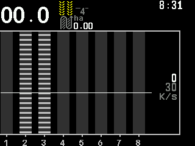
| Symbol | Bedeutung |
|---|---|
| Grau | Das Panel wechselt von selbst zum nächsten Durchgang. |
| Gelb | Es tut das nicht: „Autom. Umschaltung“ ist aus, oder die Maschine liefert nichts, woran es umschalten könnte. |
| Gelb, im Wechsel mit einem Kreuz | Die Maschine könnte von selbst umschalten, aber „Autom. Umschaltung“ ist aus. |
Die Säulen der abgeschalteten Reihen sind hellgrau schraffiert; der Fluss darin wird weiter angezeigt, schraffiert: grün, solange er unter der Grenze bleibt, rot darüber — und dann meldet das Panel „Saat in Fahrgasse“. Die Grenze ist ein Anteil der Sollmenge, „Zul. Saat in Fahrgasse,%“ des Kornsensors (Sensoreinstellungen). Über einem Sensor, der nicht antwortet oder aus der Überwachung genommen ist, blinkt die Schraffur.
Den Durchgang von Hand ändern
Drücken Sie auf dem Startbildschirm „BACK“. Das Durchgangsmenü öffnet sich. Blinkt ein Mengenfeld, beendet das erste „BACK“ nur das Blinken; im Sensoreinstellmodus verlässt „BACK“ stattdessen den Modus.

Das Durchgangsmenü. Um einen Durchgang einzustellen, wählen Sie „Aktueller Durchgang“ und ändern Sie ihn mit „PLUS“ / „MINUS“, von 1 bis zur Zahl der Durchgänge. Er wird übernommen, wenn sich das Menü schließt.
Um einen Durchgang weiterzuschalten, wählen Sie „Nächster Durchgang“ und drücken „MENU“. Das Menü schließt sich. Dieser Punkt ist nur da, wenn das Panel nicht von selbst umschalten kann.
Wo das Panel von selbst umschalten kann, bietet das Menü stattdessen „Autom. Umschaltung“: „MENU“ schaltet zwischen „Ja“ und „Nein“ um, piept und schließt das Menü.
Dafür ist keine höhere Zugriffsstufe nötig.
Wenn das Panel von selbst umschaltet
Es braucht etwas, das ihm sagt, dass ein Durchgang zu Ende ist:
| Maschine | Was einen Durchgang beendet |
|---|---|
| Mit Spuranzeigern | Ein Wechsel der Spuranzeigerstellung. Mindestens ein Spuranzeigersensor muss überwacht sein und antworten. |
| Ohne Spuranzeiger | Das Ausheben der Drillmaschine aus der Arbeit. Der Gerätestellungssensor muss überwacht sein und antworten. |
| Keins von beiden | Nichts — das Menü bietet „Nächster Durchgang“ statt „Autom. Umschaltung“. |
Außerdem muss „Autom. Umschaltung“ auf „Ja“ stehen, und der Durchgang muss wirklich gefahren worden sein: Solange die Maschine fährt (ohne Geschwindigkeitssensor: solange sie sät), ist das Umschalten gesperrt. Es wird freigegeben, wenn die Arbeit stoppt; der nächste Wechsel der Spuranzeiger — oder das nächste Ausheben — schaltet dann genau einen Durchgang weiter.
Der Aktuator selbst
Zwei Einstellungen eines Fahrgassen-Aktuators stehen in seinem Kontextmenü (Sensoreinstellungen), Stufe „Agronom“:
| Punkt | Werte |
|---|---|
| „Abschaltpos.“ | Die Stellung, in der er abschaltet: „Ausgefahren“ (Werkseinstellung) oder „Eingezogen“. |
| „Umschalt.“ | Wann er sich bewegt: „bei Aussaat“ (Werkseinstellung) oder „immer“. |
Zwei Alarme betreffen den Aktuator: „Undef.Zustand“ — er meldet beide Endlagen zugleich; „Blockiert“ — er erreicht die geforderte Stellung nicht. Siehe Fahrgassenalarme.
Zugriffsebenen
Die drei Zugriffsebenen des Hectare Mini – Fahrer, Agronom, Service –, was jede freigibt, was auf den höheren Ebenen mit den Alarmen geschieht und wie Sie zur Ebene Fahrer zurückkehren.
Das Panel blendet alle Einstellungen aus, die ein Fahrer nicht braucht. Was ein Menü zeigt, hängt von der Zugriffsebene ab, die Sie unter „Benutzer“ im Menü „Einstell.“ wählen. Nach jedem Einschalten startet das Panel auf der Ebene „Fahrer“.
| Ebene | Wer | Was sie freigibt |
|---|---|---|
| „Fahrer“ | Der Fahrer | Alles für die Arbeit: die Sollmengen, die Felder, die Statistik, „Alarmverzögerung“, Datum und Uhrzeit, die Sprache. In den Kontextmenüs: „Information“ und die alltäglichen Sensoreinstellungen wie „Fraktion“ oder „Minimum, U/min“. |
| „Agronom“ | Der Landwirt, der Händler | Zusätzlich „Sämaschinen-Parameter“ (Arbeitsbreite, Modi, Kalibrierungen), die verborgenen Parameter jedes Sensors und im Hauptmenü das Menü „Service“ mit „Sensorkonfiguration“ für Korn- und Drucksensoren. |
| „Service“ | Der Servicetechniker | Zusätzlich das Profil, die Konfiguration der HUB-8-Verteiler und der Fahrgassen-Aktuatoren, der Service-Bildschirm der Motoren, „Standardwerte“ in jedem Kontextmenü und „Einstell. zurücksetzen“. Der Statusbildschirm eines Sensors zeigt dessen Adresse. |
Die Liste unter „Benutzer“ hat einen vierten Wert, „Debug“. Er ist für den Hersteller gedacht und im Feld nutzlos.
Für das Anheben auf „Agronom“ oder „Service“ verlangt das Panel die PIN der jeweiligen Ebene. Die PINs sind bei jedem Panel anders: Sie erhalten sie vom Händler für Ihr Panel. Beim Herunterschalten wird nichts abgefragt. Wie es geht: Agronomen-Ebene aktivieren.
In dieser Anleitung steht bei jedem Parameter und Menüpunkt, welche Ebene er braucht. Ein Punkt, den Sie nicht sehen, liegt über Ihrer Ebene oder trifft auf die Maschine im Profil nicht zu.
Was mit den Alarmen geschieht, solange die Ebene hoch ist
Das einzige Fenster, das noch erscheint, ist „Benutzer ist Agronom! Alarme nicht sichtbar!“ – einmal pro Sitzung, sobald das Panel Aussaat auf der höheren Ebene erkennt. Siehe Benutzer ist Agronom.
Wenn Sie auf „Fahrer“ zurückschalten, verwirft das Panel die Alarme, die sich inzwischen erledigt haben, und zeigt die noch zutreffenden nacheinander an.
Zurück zur Ebene Fahrer
- Stellen Sie in „Einstell.“ den Punkt „Benutzer“ mit „MINUS“ auf „Fahrer“ und drücken Sie „MENU“, oder
- schalten Sie das Panel aus und wieder ein.
Tun Sie eines von beiden nach jeder Inbetriebnahme und jeder Reparatur, bevor die Maschine wieder an die Arbeit geht.
Was das Service-Menü enthält
Das Hauptmenü zeigt „Service“ ab der Ebene „Agronom“. Das steckt darin:
| Punkt | Ebene | Wofür er dient |
|---|---|---|
| „Profil“ | Service | Die Geräteliste der Maschine. Das Profil |
| „Sensorkonfiguration“ | Agronom | Gibt einem neuen oder ersetzten Gerät seine Adresse. Gerätekonfiguration |
| „Elektromotoren“ | Service | Der Service-Bildschirm der Dosierermotoren; nur bei Motoren im Profil. |
| „Körner immer zählen“ | Agronom | „Ja“: Die Aussaattabelle und der Statistikbildschirm zählen Körner auch in den Modi „Durchfluss“ und „Hybrid“, nicht nur in „Einzelkorn“. |
| „Schlüssel eingeben“ | Agronom | Nur bei einem Panel mit zeitlich begrenzter Lizenz sichtbar: Geben Sie den Lizenzschlüssel vom Händler ein. |
Die übrigen Punkte dieses Menüs sind für den Servicetechniker und den Hersteller.
Agronomen-Ebene aktivieren
Die Schritte, jeweils mit dem zugehörigen Bildschirm, um die Zugriffsebene des Hectare Mini vor dem Ändern von Einstellungen auf „Agronom“ oder „Service“ anzuheben und danach auf „Fahrer“ zurückzukehren.
Sensorparameter, Arbeitsbreite, Kalibrierungen und Gerätekonfiguration erfordern die Ebene „Agronom“. Die Ebene „Service“ wird auf dieselbe Weise angehoben. Was jede Ebene freigibt: Zugriffsebenen.
Sie brauchen die PIN dieses Panels für die jeweilige Ebene. Sie ist bei jedem Panel anders; Sie erhalten sie vom Händler.
Drücken Sie auf dem Startbildschirm „MENU“. Das Hauptmenü öffnet sich.
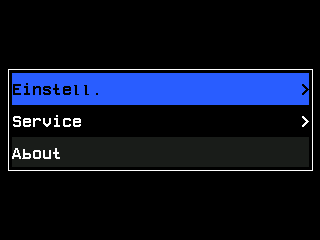
Das Hauptmenü. Wählen Sie mit „UP“ / „DOWN“ den Punkt „Einstell.“ und drücken Sie „MENU“. Das Menü „Einstell.“ öffnet sich.
Drücken Sie „DOWN“, bis „Benutzer“ markiert ist – er ist der letzte Punkt. Drücken Sie „PLUS“, bis dort „Agronom“ (oder „Service“) steht.
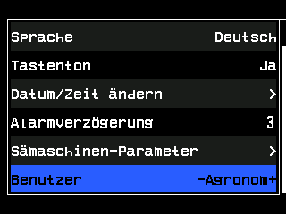
„Benutzer“ auf Agronom eingestellt. Drücken Sie „MENU“. Das PIN-Feld öffnet sich mit „PIN eingeben:“; die Zeile unter der Aufforderung kennzeichnet dieses Panel. Geben Sie die PIN über das Zahlenfeld ein und berühren Sie „OK“ oder drücken Sie „MENU“.
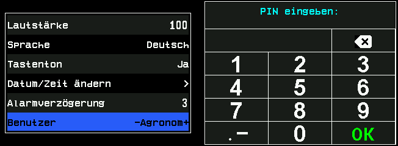
Das PIN-Feld. Das Panel zeigt kurz den Namen der neuen Ebene und kehrt zum Menü „Einstell.“ zurück, nun mit den Punkten dieser Ebene – zum Beispiel „Sämaschinen-Parameter“.
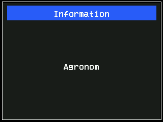
Das Panel bestätigt die neue Ebene. Drücken Sie „BACK“, um das Menü zu verlassen.
Ist die PIN falsch – oder gehört sie zu einer anderen Ebene als der in Schritt 3 gewählten –, zeigt das Panel kurz „Ungültige PIN“ und öffnet das PIN-Feld erneut. Geben Sie die PIN noch einmal ein oder drücken Sie „BACK“, um abzubrechen; die Ebene bleibt, wie sie war.
Wenn Sie wieder herunterschalten, werden die Alarme, die weiterhin zutreffen, nacheinander angezeigt – siehe Zugriffsebenen.
Profil und Verbindungen prüfen
Die erste Prüfung nach dem Einbau eines Hectare Mini – stimmt das Profil mit der Maschine überein, antwortet jedes Gerät, wird jeder Sensor überwacht – als Ablauf mit dem, was der Bildschirm bei jedem Schritt zeigt.
Das Panel überwacht nur die Geräte, die sein Profil aufführt. Meist werden Systeme mit bereits eingerichtetem Profil geliefert; prüfen Sie trotzdem, bevor Sie einen Parameter einstellen, ob es zur Maschine passt und ob jedes Gerät antwortet. Die Prüfung des Profils erfordert die Ebene „Service“, die eine PIN verlangt – der Händler gibt sie für Ihr Panel heraus; siehe Agronomen-Ebene aktivieren. Die beiden anderen Prüfungen brauchen keinen Code.
1. Profil prüfen
Schließen Sie alle Geräte an das Panel an und versorgen Sie sie gemäß dem Schaltplan im Datenblatt des Systems mit Strom.
Schalten Sie das Panel ein. Nach dem Logo erscheint der Startbildschirm.
Heben Sie die Zugriffsebene auf „Service“ an: „MENU“ → „Einstell.“ → „Benutzer“ → „Service“, „MENU“, PIN – wie in Agronomen-Ebene aktivieren.
Drücken Sie „BACK“. Das Hauptmenü kehrt zurück, nun mit „Service“. Wählen Sie „Service“ und drücken Sie „MENU“, wählen Sie dann „Profil“ und drücken Sie „MENU“. Das Profilmenü öffnet sich.
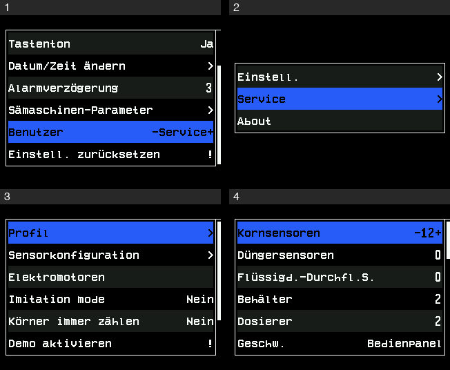
Der Weg zum Profil: Einstellungen mit der Ebene Service, das Hauptmenü, das Service-Menü, das Profilmenü. Lesen Sie das Profilmenü von oben. Jeder Punkt ist eine Geräteart mit der Anzahl, die das Panel erwartet, zum Beispiel „Kornsensoren“; „Geschw.“ zeigt, wie der Geschwindigkeitssensor angeschlossen ist: „Bedienpanel“, „Eingangsmod.“ oder „Eingangsmodul(2)“. „UP“ und „DOWN“ gehen durch die Liste, die länger ist als der Bildschirm. Alle Punkte: Das Profil.
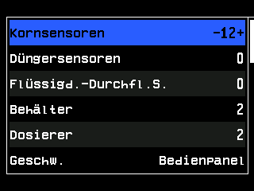
Das Profilmenü. Vergleichen Sie die Liste mit der Maschine und dem Schaltplan. Ändern Sie hier nichts: „BACK“ verlässt das Profilmenü ohne zu speichern.
Gehen Sie zurück auf die Ebene „Fahrer“: Schalten Sie das Panel aus und wieder ein, wie in Agronomen-Ebene aktivieren. Auf der Ebene „Service“ zeigt das Panel keine Alarmfenster, und die nächste Prüfung braucht sie.
Passt das Profil nicht zur Maschine, richten Sie es zuerst ein: Profil einrichten.
2. Prüfen, ob jedes Gerät antwortet
Warten Sie auf dem Startbildschirm einige Sekunden. Erscheint kein Fenster „Verbindung weg“, hat das Panel alle Geräte des Profils gefunden.

Antworten mehrere Geräte einer Art nicht, listet ein Fenster alle ihre Nummern auf – hier die Drucksensoren 1 bis 3:
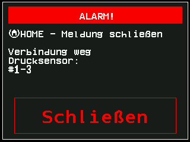
3. Prüfen, ob jeder Sensor überwacht wird
Ein Sensor außer Überwachung wird gar nicht überwacht. Seine Anzeige zeigt das blinkende graue Zeichen (nicht überwacht) oder !!!! anstelle des Wertes; unter einer Diagrammsäule zeigt sie ein weißes Feld mit ! – siehe Anzeigen.
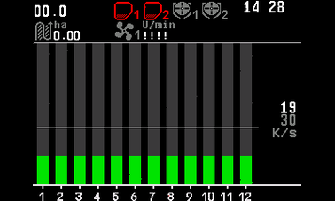
Gibt es einen solchen Sensor, nehmen Sie ihn in die Überwachung:
Halten Sie auf dem Startbildschirm „MENU“ gedrückt, bis die Geschwindigkeitsanzeige einen weißen Hintergrund hat. Das Panel ist im Sensoreinstellmodus. Lassen Sie die Taste los.
Der Sensoreinstellmodus, der Geschwindigkeitssensor ist gewählt. Drücken Sie „DOWN“ (oder „UP“), bis der nicht überwachte Sensor gewählt ist. Ein Kornsensor ist gewählt, wenn seine Nummer unter der Säule einen weißen Hintergrund hat.

Der Gebläsesensor ist gewählt; Kornsensor 11 unter dem Diagramm ist gewählt. Drücken Sie „PLUS“. Das Panel fragt, ob Sie sicher sind; drücken Sie „MENU“ für „Ja“. „BACK“ antwortet mit „Nein“.
Die Frage, bevor die Überwachung eines Sensors geändert wird. Wiederholen Sie die Schritte 2 und 3 für jeden nicht überwachten Sensor. Solange Sie in diesem Modus bleiben, kommt die Frage nur beim ersten Mal.
Drücken Sie „BACK“, um den Sensoreinstellmodus zu verlassen.
Die Überwachung eines Sensors einzuschalten heißt in dieser Anleitung, einen Sensor in die Überwachung zu nehmen. Mehr dazu: Sensor in die Überwachung nehmen oder herausnehmen.
Das Ergebnis
Jeder Sensor muss überwacht werden, und keine Anzeige darf ein rotes Kreuz zeigen – das Zeichen für ein Gerät, das nicht antwortet.
Ist alles in Ordnung, zeigt der Startbildschirm jedes Gerät im normalen Grau, ohne rotes Kreuz und ohne das Zeichen für nicht überwacht:

Machen Sie dann mit den Einstellungen weiter: Inbetriebnahme.
System nach dem Einbau prüfen
Die Prüfungen, die Sie nach der Montage eines Hectare Mini einmal durchführen – jeder Kornsensor in seiner eigenen Reihe, Zählung, Arbeitsstellung, Geschwindigkeit und die übrigen Sensoren – mit dem, was der Bildschirm bei jedem Schritt zeigen muss, und wohin Sie gehen, wenn er es nicht tut.
Führen Sie diese Prüfungen einmal durch, wenn das System montiert ist und bevor Sie auf das erste Feld fahren. Jeder Schritt sagt, was Sie tun, und was der Bildschirm zeigen muss. Besteht ein Schritt nicht, sagt Ihnen die letzte Spalte der Tabelle am Ende, wohin Sie gehen. Überspringen Sie keinen Schritt, nur weil der vorige in Ordnung war.
Sie brauchen einige Körner der Kultur und einen Helfer. Alle Prüfungen laufen auf der Ebene „Fahrer“, auf der das Panel seine Alarmfenster zeigt.
1. Das Profil und die Verbindungen
Machen Sie die drei Prüfungen aus Profil und Verbindungen prüfen. Bestanden heißt: Die Profilliste passt zur Maschine, nach einigen Sekunden auf dem Startbildschirm erscheint kein Fenster „Verbindung weg“, und keine Anzeige zeigt ein rotes Kreuz oder das Zeichen für nicht überwacht. Der Startbildschirm sieht dann so aus:
Machen Sie erst weiter, wenn das so ist.
2. Jeder Kornsensor sitzt in seiner eigenen Reihe
Jeder Kornsensor muss unter der Nummer seiner eigenen Reihe stehen. Prüfen Sie es Reihe für Reihe:
Schalten Sie das Panel ein und drücken Sie „HOME“. Die Saattabelle öffnet sich. Drücken Sie „PLUS“, bis die Tabelle Kornzähler angezeigt wird, mit einer Zeile je Saatleitung. Lesen Sie die Zahl auf dieser Tabelle ab, die die Anzahl der Körner zeigt – nicht auf der Ansicht mit Körnern je Meter: Diese zeigt nur Werte, solange sich die Maschine bewegt.
Die Tabelle Kornzähler. Drücken Sie „MENU“ und „PLUS“ für „Ja“, um die Werte zurückzusetzen – Werte der Saattabelle zurücksetzen.
Lassen Sie einige Körner von Hand durch das Saatrohr von Reihe 1 fallen. Statt Körnern können Sie auch einen beliebigen kleinen Gegenstand, zum Beispiel einen langen Kabelbinder, mehrmals durch das Saatrohr führen – jeder Durchgang wird gezählt. Beobachten Sie die Tabelle: Die Werte von Reihe 1 müssen sich ändern.
Machen Sie dasselbe mit Reihe 2, dann nacheinander mit jeder weiteren Reihe. Sehen Sie nach jeder Reihe nach, welche Zeile der Tabelle reagiert hat.
Notieren Sie jede Reihe, bei der eine andere Reihe reagiert hat oder keine.
Ein Sensor, der in einer anderen Reihe reagiert, ist in der falschen Reihenfolge angeschlossen. Bei einer Reihe, die gar nicht reagiert, müssen Sie ihren Sensor prüfen.
Stimmt die Reihenfolge nicht, geben Sie dem Sensor die Nummer seiner Reihe – Kornsensor konfigurieren. Bleibt eine Reihe stumm, öffnen Sie den Statusbildschirm ihres Sensors (Schritt 7 zeigt, wie): Status: muss „Betrieb“ lauten. Bei jedem anderen Zustand siehe Zustand des Kornsensors; bei einem Sensor, der nicht antwortet, siehe Gerät antwortet nicht.
3. Zählung
Setzen Sie die Werte zurück wie in Schritt 2 der vorigen Prüfung.
Zählen Sie eine bekannte Anzahl Körner ab, zum Beispiel 20, und lassen Sie sie durch das Saatrohr einer Reihe fallen.
Lesen Sie den Wert dieser Reihe in der Tabelle Kornzähler ab. Bei einer Einzelkornsämaschine stimmt er bis auf ein Korn mit der Zahl überein, die Sie fallen ließen, sofern die „Fraktion“ der Kornsensoren auf die Größe des Korns eingestellt ist.
Ist der Wert deutlich höher – bis zum Doppelten der Zahl –, ist die Fraktion für dieses Korn zu klein eingestellt: Ein großes Korn, zum Beispiel Mais, wird dann als zwei gezählt. Stellen Sie die Fraktion nach der Tabelle in Korn- und Düngersensoren ein.
4. Der Arbeitsstellungssensor
Überspringen Sie diesen Schritt, wenn das Profil keinen Arbeitsstellungssensor hat.
Senken Sie die Maschine in die Arbeitsstellung ab. Der Statusbildschirm des Arbeitsstellungssensors muss „Position: Arbeit“ zeigen.
Heben Sie die Maschine in die Transportstellung an. Der Statusbildschirm muss „Position: Transport“ zeigen, und auf dem Startbildschirm blinkt die Geräteanzeige gelb.
Senken und heben Sie sie noch einmal. Der Zustand muss jedes Mal folgen.

Ist der Zustand vertauscht oder ändert er sich nicht, siehe Behälter- und Arbeitsstellungssensoren: Der Parameter „Signal Transportstellung“ muss dem entsprechen, was der Sensor bei angehobener Maschine liefert.
5. Geschwindigkeit
Fahren Sie die Maschine langsam in der Arbeitsstellung.
Die Geschwindigkeitsanzeige auf dem Startbildschirm muss eine Geschwindigkeit zeigen, nicht null und kein rotes Kreuz.
Vergleichen Sie sie mit dem Tachometer des Traktors oder einem GPS-Navigationsgerät, wie in der Kurzanleitung.
Wird keine Geschwindigkeit angezeigt, siehe Fahrgeschwindigkeit: Alarme des Geschwindigkeitssensors. Weicht die Geschwindigkeit um einen gleichbleibenden Anteil ab, kalibrieren Sie den Sensor – Geschwindigkeitssensor kalibrieren.
6. Die übrigen Sensoren des Profils
Prüfen Sie nur die Sensoren, die Ihr Profil aufführt. Öffnen Sie bei jedem seinen Statusbildschirm wie in Schritt 7 und sehen Sie auf die Zeile „Verbind.:“: Sie muss „Normal“ lauten.
| Sensor | Was Sie tun | Was der Bildschirm zeigen muss | Wenn nicht |
|---|---|---|---|
| Gebläse | Starten Sie das Gebläse. | Auf dem Startbildschirm eine Gebläsedrehzahl in rpm, nicht rot. Auf dem Statusbildschirm F= in Hz. | Gebläse und Dosierwelle: Drehzahlalarme |
| Druck | Starten Sie das Gebläse. | P= in kPa auf dem Statusbildschirm, kein Alarmfenster. | Druckalarme |
| Behälter | Sehen Sie bei Produkt im Behälter auf den Statusbildschirm. | Pin: zeigt "0", solange Produkt den Sensor bedeckt. | Behälter leer |
| Dosierwelle | Öffnen Sie den Statusbildschirm. | F= in Hz und kein Alarmfenster „Kein Lauf“, solange die Maschine sät oder fährt. | Gebläse und Dosierwelle: Drehzahlalarme |
7. Das Ergebnis festhalten
Schreiben Sie auf oder fotografieren Sie, was Sie brauchen, wenn Sie später um Hilfe bitten müssen:
Die Firmware-Version. Drücken Sie auf dem Startbildschirm „MENU“ und wählen Sie den letzten Punkt des Hauptmenüs. Das Fenster zeigt die Version der Software, die Seriennummer des Panels und seine Hardwarekennung. „BACK“ schließt es.
Das Datum der Prüfung.
Ein Foto des Sensor-Statusbildschirms jedes Sensors, der Ärger gemacht hat, und eines Sensors, der funktioniert. So kommen Sie hin: Halten Sie auf dem Startbildschirm „MENU“ gedrückt, bis die Geschwindigkeitsanzeige einen weißen Hintergrund hat, wählen Sie den Sensor mit „UP“ / „DOWN“, drücken Sie „MENU“, wählen Sie dann „Information“ und drücken Sie „MENU“. „BACK“ verlässt ihn – Der Sensor-Statusbildschirm.
Wenn ein Schritt nicht besteht
| Schritt | Weiter mit |
|---|---|
| 1. Profil und Verbindungen | Profil einrichten, Gerät antwortet nicht |
| 2. Sensor in der falschen Reihe | Kornsensor konfigurieren |
| 2. Eine Reihe reagiert nicht | Zustand des Kornsensors, Gerät antwortet nicht |
| 3. Zählung | Korn- und Düngersensoren |
| 4. Arbeitsstellung | Behälter- und Arbeitsstellungssensoren |
| 5. Geschwindigkeit | Alarme des Geschwindigkeitssensors, Geschwindigkeitssensor kalibrieren |
| 6. Gebläse, Dosierwelle | Gebläse und Dosierwelle: Drehzahlalarme |
| 6. Druck | Druckalarme |
| 6. Behälter | Behälter leer |
| Weiter unklar | Bevor Sie den Support kontaktieren |
Das Profil
Was das Profil des Hectare Mini ist, jeder Punkt des Profilmenüs mit seinen Werten und die Regeln, die ein Profil einhalten muss, bevor das Panel es annimmt.
Das Profil sagt dem Panel, welche Geräte die Maschine hat und wie viele von jeder Art. Es bestimmt, welche Anzeigen der Startbildschirm zeigt, welche Kontextmenüs es gibt und welche Geräte das Panel abfragt. Ein System wird meist mit eingerichtetem Profil geliefert; ändern Sie es nur, wenn sich die Ausstattung der Maschine ändert. So prüfen Sie es: Profil und Verbindungen prüfen. So ändern Sie es: Profil einrichten.
Das Profil zählt, was überwacht und was angesteuert wird, nicht Gehäuse. Ein Eingangsmodul kann zum Beispiel Gebläsesensoren und Behältersensoren zugleich tragen; ein Aktuator-Steuergerät kann einen Aktuator und zwei Spuranzeiger-Sensoren tragen. Jedes davon wird unter seinem eigenen Punkt eingetragen.
- „Kornsensoren“ – der gewählte Punkt.
- Der Wert, hier 12, zwischen − und +: Ändern Sie ihn mit „MINUS“ und „PLUS“.
- „Düngersensoren“.
- „Flüssigd.-Durchfl.S.“.
- „Behälter“.
- „Dosierer“.
- „Geschw.“ – wie der Geschwindigkeitssensor angeschlossen ist.
- Sein Wert, hier „Bedienpanel“.
- Bildlaufleiste. Die Liste geht unterhalb des Bildschirms weiter.
Die Punkte
Jeder Punkt erfordert wie das Menü selbst die Ebene „Service“.
| Punkt | Was er festlegt | Werte |
|---|---|---|
| „Kornsensoren“ | Anzahl der Kornsensoren. | 2 … 60 |
| „Düngersensoren“ | Anzahl der Sensoren für Trockendünger. | 0 … 60 |
| „Flüssigd.-Durchfl.S.“ | Anzahl der Durchflusssensoren für Flüssigdünger. | 0 … 60 |
| „Behälter“ | Anzahl der Behälterfüllstandsensoren. | 0 … 9 |
| „Dosierer“ | Anzahl der Dosierwellensensoren. | 0 … 9 |
| „Geschw.“ | Ob es einen Fahrgeschwindigkeitssensor gibt und wo er angeschlossen ist: „Nein“; „Bedienpanel“ – ein Sensor am Panel; „Eingangsmod.“ – ein Sensor an einem Eingangsmodul; „Eingangsmodul(2)“ – zwei Sensoren an einem Eingangsmodul. | siehe links |
| „GPS“ | Der eingebaute GPS-Empfänger als Geschwindigkeitsquelle: „Nein“; „UBX“ – die normale Einstellung; „NMEA“ – der Empfänger liefert seine Daten im Format NMEA 0183. Solange er einen gültigen Fix hat, hat GPS Vorrang vor dem Sensor unter „Geschw.“; ohne Fix übernimmt der Sensor von selbst. GPS-Empfang | siehe links |
| „Gebläse“ | Anzahl der Gebläsedrehzahlsensoren. | 0 … 2 |
| „Drucksensoren“ | Anzahl der Drucksensoren (Unterdruck). | 0 … 3 |
| „Arbeitsstell.-Sensor“ | Ob es einen Sensor für Arbeits- und Transportstellung des Geräts gibt. | „Nein“ / „Ja“ |
| „Spuranz.“ | Wie die Spuranzeiger überwacht werden: „Nein“; „Einer“ – ein Sensor; „Beide“ – ein Sensor je Arm. | siehe links |
| „Batt. lädt nicht“ | Batterieladesensor des Gebläsemotors. Schalten Sie ihn zusammen mit dem Zündungssensor aus. | „Nein“ / „Ja“ |
| „Öldruck-Störung“ | Sensor für niedrigen Öldruck des Gebläsemotors. Schalten Sie ihn zusammen mit dem Zündungssensor aus. | „Nein“ / „Ja“ |
| „Zündung“ | Zündschlüsselsensor des Gebläsemotors. | „Nein“ / „Ja“ |
| „Wenig Kr.“ | Kraftstoffstandsensor des Gebläsemotors. | „Nein“ / „Ja“ |
| „Luftfilter“ | Luftfiltersensor des Gebläsemotors. | „Nein“ / „Ja“ |
| „E-Motoren Saat“ | Anzahl der elektrischen Dosierermotoren für Saatgut. | 0 … 60 |
| „E-Motoren Dünger“ | Anzahl der elektrischen Dosierermotoren für Dünger. | 0 … 30 |
| „Fahrg.-Aktuatoren“ | Anzahl der Fahrgassen-Aktuatoren. | 0 … 4 |
| „Flüssigd.-Pumpencontr.“ | Ob es ein Pumpensteuergerät für Flüssigdünger gibt. | 0 / 1 |
| „Profil speichern“ | Speichert das Profil und startet das Panel neu. | – |
Regeln, die das Profil einhalten muss
„Profil speichern“ weist ein Profil zurück, das eine dieser Regeln verletzt, und zeigt „Ungültiges Profil!“:
- mindestens 2 Kornsensoren;
- „Behälter“, „Dosierer“ und die fünf Motorsensoren zusammen: höchstens 12; über 10 dürfen „Gebläse“ und „Drucksensoren“ zusammen höchstens 4 ergeben;
- „Gebläse“ und „Drucksensoren“ zusammen: höchstens 5;
- Saat- und Düngermotoren zusammen: höchstens 60; Düngermotoren nur zusammen mit Saatmotoren und mit Düngersensoren;
- Dosierermotoren und ein Flüssigdünger-Pumpensteuergerät brauchen einen Geschwindigkeitssensor.
Profil einrichten
Die Schritte, um das Profil des Hectare Mini zu ändern – das Profilmenü auf der Ebene Service erreichen, die Geräte der Maschine eintragen, speichern und das Panel neu starten lassen.
Richten Sie das Profil ein, wenn sich die Ausstattung der Maschine ändert – ein Gerät kommt hinzu, entfällt oder ist von anderer Art. Die Punkte und ihre Grenzen: Das Profil. Das Profilmenü erfordert die Ebene „Service“.
Schließen Sie alle Geräte an das Panel an und versorgen Sie sie gemäß dem Schaltplan im Datenblatt des Systems mit Strom.
Schalten Sie das Panel ein. Nach dem Logo erscheint der Startbildschirm; was er zeigt, hängt vom vorhandenen Profil ab.
Der Startbildschirm nach dem Einschalten. Heben Sie die Zugriffsebene auf „Service“ an: „MENU“ → „Einstell.“ → „Benutzer“ → „Service“, „MENU“, PIN – wie in Agronomen-Ebene aktivieren.
Drücken Sie „BACK“. Das Hauptmenü kehrt zurück, nun mit „Service“.
Wählen Sie „Service“ und drücken Sie „MENU“. Das Menü „Service“ öffnet sich mit „Profil“ als erstem Punkt.
Wählen Sie „Profil“ und drücken Sie „MENU“. Das Profilmenü öffnet sich.
Der Weg zum Profil: Einstellungen mit der Ebene Service, das Hauptmenü, das Service-Menü, das Profilmenü. Gehen Sie die Punkte mit „UP“ / „DOWN“ durch und stellen Sie jeden mit „PLUS“ / „MINUS“ auf die Ausstattung der Maschine ein.
Das Profilmenü. Wählen Sie „Profil speichern“, den letzten Punkt, und drücken Sie „MENU“. Das Panel fragt „Sind Sie sicher?“ – drücken Sie „PLUS“ für „Ja“, „MINUS“ für „Nein“.
Das Panel bittet um Geduld, zeigt dann „Gespeich.“ und „Neu starten“ und startet von selbst neu. Das neue Profil gilt nach dem Neustart.
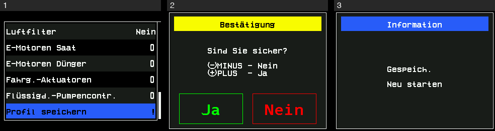
Das Profil speichern: der Punkt Profil speichern, die Frage, dann die Meldung Gespeichert und Neustart.
„BACK“ verlässt das Profilmenü; die geänderten Gerätezahlen werden nicht gespeichert. Eine Ausnahme ist „GPS“: Es wird sofort gespeichert, wie eine Einstellung des Menüs „Einstell.“.
Wenn das Profil nicht gespeichert wird
| Das Panel zeigt | Bedeutung |
|---|---|
| „Keine Änderungen“ | Das Profil ist dasselbe wie das gespeicherte. Nichts wird gespeichert, nichts startet neu. |
| „Ungültiges Profil!“ | Das Profil verletzt eine Regel – zu wenige Kornsensoren, zu viele kleine Anzeigen, zu viele Gebläse und Drucksensoren oder Motoren ohne Geschwindigkeitssensor. Siehe Regeln, die das Profil einhalten muss. Korrigieren Sie es und speichern Sie erneut. |
Nach dem Neustart steht das Panel auf der Ebene „Fahrer“. Prüfen Sie das Ergebnis wie in Profil und Verbindungen prüfen beschrieben. Erzeugt die Maschine Fahrgassen, stellen Sie danach – immer nach dem Profil – den Fahrgassenrhythmus ein: Fahrgassenrhythmus einstellen.
Datum und Uhrzeit einstellen
Stellen Sie die Uhr des Hectare Mini von Hand ein, oder lassen Sie sie mit einer Zeitzone dem GPS-Empfänger folgen.
Das Panel versieht Beginn und Ende der Arbeit auf jedem Feld mit seiner Uhrzeit und zeigt die Zeit auf dem Startbildschirm an. „Datum/Zeit ändern“ finden Sie im Menü „Einstell.“ auf der Ebene „Fahrer“. Was sich öffnet, hängt vom Punkt „GPS“ des Profils ab.
Mit GPS im Profil

- „Automatisch“ – ob die Uhr dem GPS-Empfänger folgt.
- Sein Wert, hier „Nein“. Ändern Sie ihn mit „PLUS“ / „MINUS“.
- „Datum und Zeit eingeben“ – öffnet das Menü zum Einstellen der Uhr von Hand. Sichtbar, solange „Automatisch“ auf „Nein“ steht.
- „Automatisch“ auf „Ja“: Die Uhr übernimmt die Zeit vom GPS-Empfänger. Statt „Datum und Zeit eingeben“ erscheint der Punkt „Zeitzone“ – stellen Sie Ihre Abweichung von UTC mit „PLUS“ / „MINUS“ ein, von −12:00 bis +14:00 in ganzen Stunden.
- „Automatisch“ auf „Nein“: Wählen Sie „Datum und Zeit eingeben“ und drücken Sie „MENU“, dann machen Sie wie unten ab Schritt 2 weiter.
Von Hand
„MENU“ → „Einstell.“ → „Datum/Zeit ändern“, drücken Sie „MENU“. Ohne GPS im Profil öffnet sich das Menü mit „Jahr“, „Monat“, „Tag“, „Stunden“, „Minuten“, „Sekunden“ und „Einstellen“.
Wählen Sie einen Punkt mit „UP“ / „DOWN“ und ändern Sie ihn mit „PLUS“ / „MINUS“. „MENU“ auf einer Zahl – bei allen Punkten außer „Monat“ – öffnet das Zahlenfeld.
Stellen Sie alle sechs Punkte ein. Nach einer Änderung des Monats wird ein Tag, den der Monat nicht hat, auf dessen letzten Tag zurückgesetzt.
Wählen Sie „Einstellen“ und drücken Sie „MENU“. Die Uhr übernimmt das neue Datum und die neue Uhrzeit, und das Menü, von dem Sie kamen, kehrt zurück.
„BACK“ verlässt das Menü, ohne die Uhr zu ändern. Jeder Punkt öffnet sich mit dem aktuellen Datum und der aktuellen Uhrzeit; Sie ändern also nur, was falsch ist.
Sämaschinen-Parameter
Das Untermenü mit Arbeitsbreite und Überwachungsmodi des Hectare Mini, was eine Änderung mit der Statistik macht und wo die beiden Kalibrierungen im Menü starten.
„Einstell.“ → „Sämaschinen-Parameter“, Ebene „Agronom“ (Agronomen-Ebene aktivieren). Stellen Sie diese Werte bei einer neuen Maschine zuerst ein – jede Angabe zu Fläche und Menge wird aus ihnen berechnet.
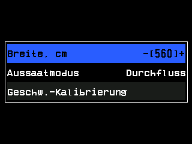
- „Breite, cm“ – der gewählte Punkt.
- Sein Wert zwischen -[ und ]+: „PLUS“ / „MINUS“ verstellen ihn schrittweise, „MENU“ öffnet das Zahlenfeld.
- „Aussaatmodus“.
- Sein Wert, hier „Durchfluss“.
- „Geschw.-Kalibrierung“ – startet die Kalibrierung des Geschwindigkeitssensors.
| Punkt | Was er bewirkt | Bereich · Werkseinstellung |
|---|---|---|
| „Breite, cm“ | Die Arbeitsbreite der Maschine. Daraus werden die Fläche und jede Menge je Hektar berechnet. Tragen Sie sie immer ein. | 100 … 2500 cm · 560 |
| „Aussaatmodus“ | Wie die Kornsensoren überwacht und angezeigt werden: „Durchfluss“ – Körner je Sekunde, für Drillmaschinen; „Hybrid“ – Körner je Meter, an Drillmaschinen möglich, in der Praxis aber nicht üblich; „Einzelkorn“ – Körner je Meter mit Fehlstellen und Doppelablagen, für Einzelkornsägeräte. | · „Durchfluss“ |
| „Düngermodus“ | Dieselben drei Modi für die Düngersensoren. Nur sichtbar, wenn das Profil Düngersensoren enthält. | · „Durchfluss“ |
| „Modus Flüssigd.“ | „Durchfluss“ oder „Nach Fläche“ für die Flüssigdünger-Sensoren. Nur sichtbar mit solchen Sensoren und ohne Pumpensteuergerät. | · „Nach Fläche“ |
| „Fahrgasse“ | Die Fahrgasseneinstellungen – Fahrgassenrhythmus einstellen. Nur sichtbar, wenn die Maschine Fahrgassen anlegen kann. | Untermenü |
| „Zuordnung Sensor-Aktuator“ | Welche Saatleitungen jeder Fahrgassen-Aktuator oder Motor abschaltet. Nur sichtbar, wenn die Zuordnung nicht eins zu eins ist. | Bildschirm |
| „Geschw.-Kalibrierung“ | Geschwindigkeitssensor kalibrieren. | – |
| „Dosierer-Kalibrierung“ | Dosierer-Drehung kalibrieren für „ALLE“ Dosierer oder für einen, nach seiner Nummer. Nur sichtbar mit Dosierersensoren im Profil. | „ALLE“, 1 … Anzahl der Dosierer |
| „Standardwerte“ | Ebene „Service“. Setzt Breite und Modi auf ihre Werkseinstellung zurück. | – |
Ohne Geschwindigkeitssensor im Profil sind die drei Modus-Punkte und „Geschw.-Kalibrierung“ ausgeblendet: Das Panel kann dann nur im Modus „Durchfluss“ arbeiten.
Die Sollmenge stellen Sie auf dem Startbildschirm ein, nicht hier – Sollmenge ändern. Ihr Bereich folgt dem Modus: „Durchfluss“ 1 bis 1500 Körner je Sekunde, „Hybrid“ 1 bis 200 Körner je Meter, „Einzelkorn“ 0,5 bis 50,0 Körner je Meter.
Was eine Änderung mit der Statistik macht
Ein Wechsel zwischen „Durchfluss“ und „Hybrid“ erhält die Statistik.
Die beiden Modi hängen voneinander ab: Die Düngersensoren können nur dann in „Einzelkorn“ laufen, wenn die Kornsensoren es tun. Die anderen Kombinationen weist das Panel mit einer Meldung zurück, die den Punkt nennt, den Sie zuerst ändern müssen. Laufen beide in „Einzelkorn“, werden die Düngersensoren zu einer zweiten Saatgruppe, und die Punkte heißen „Aussaatmodus Gr.A“ und „Aussaatmodus Gr.B“.
Wird ein nach Gewicht dosiertes Produkt anschließend sowohl von einem Dosierersensor als auch von einem Motor beansprucht, schaltet das Panel die „Massenüberw.“ der Dosierersensoren aus und meldet das in einem Fenster mit „ACHTUNG!“.
Sensoreinstellungen
Wie Sie die Einstellungen eines einzelnen Sensors des Hectare Mini erreichen, was jedes Kontextmenü enthält, welche Einstellungen für eine ganze Gruppe gelten und welche Kalibrierungen es gibt.
Jeder Sensor, jeder Motor und jeder Aktuator hat sein eigenes Kontextmenü: seinen Statusbildschirm, seine Parameter und bei manchen eine Kalibrierung. Die Parameter der einzelnen Sensorarten stehen in den Themen nach diesem.
Einen Sensor erreichen
Halten Sie auf dem Startbildschirm „MENU“ gedrückt, bis die Geschwindigkeitsanzeige einen weißen Hintergrund hat. Das Panel ist im Sensoreinstellmodus. Lassen Sie die Taste los.
Der Sensoreinstellmodus, der Geschwindigkeitssensor ist gewählt. Wählen Sie den Sensor mit „UP“ / „DOWN“. Ein gewählter Korn- oder Düngersensor zeigt seine Nummer unter der Säule auf weißem Hintergrund.
Drücken Sie „MENU“. Das Kontextmenü des gewählten Sensors öffnet sich.
Ändern Sie einen Wert mit „UP“ / „DOWN“ und „PLUS“ / „MINUS“, wie in jedem Menü. „BACK“ schließt das Kontextmenü; mit nochmals „BACK“ verlassen Sie den Sensoreinstellmodus.
Was das Kontextmenü enthält, hängt von der Sensorart, von der Maschine und von der Zugriffsebene ab. Ein Parameter, den Sie nicht sehen, liegt entweder über Ihrer Ebene oder trifft nicht zu – das Thema des jeweiligen Sensors sagt es.
Das Kontextmenü
- „Information“ – öffnet den Statusbildschirm dieses Sensors. Jedes Kontextmenü beginnt damit. Der Sensor-Statusbildschirm
- Eine Aktion dieser Sensorart – hier „Geschw.-Kalibrierung“. Ein Dosierersensor hat stattdessen „Dosierer-Kalibr.(Masse)“; Korn- und Düngersensoren haben „Produktausbringung“.
- Ein Parameter – hier „Impulse“ des Geschwindigkeitssensors.
- Sein Wert. Wählen Sie die Zeile; der Wert steht zwischen − und + und ändert sich mit „MINUS“ / „PLUS“.
- Bildlaufleiste. Weitere Parameter folgen; der letzte Punkt ist „Standardwerte“.
„Standardwerte“ setzt die Parameter dieses Sensors auf die Werkswerte zurück. Dafür ist die Ebene „Service“ nötig, und es wirkt sofort, ohne Rückfrage.
Das Kontextmenü, das Sie vom Statusbildschirm mit „MENU“ erreichen, hat als ersten Punkt statt „Information“ den Punkt „Überwachung aus“ oder „Überwachung ein“ – siehe Sensor in die Überwachung nehmen oder herausnehmen.
Ein Satz für eine Gruppe oder je einer pro Sensor
| Sensoren | Einstellungen |
|---|---|
| Kornsensoren | Ein Satz für alle. Ändern Sie ihn an einem beliebigen Kornsensor – er gilt für alle. Nur „Produktausbringung“ wird je Saatleitung eingestellt. |
| Düngersensoren | Ein Satz für alle Düngersensoren, getrennt von den Kornsensoren. „Produktausbringung“ je Leitung. |
| Alle anderen Sensoren | Jeder Sensor hat eigene Einstellungen – stellen Sie jeden Dosierer-, Gebläse- oder Drucksensor einzeln ein. |
Kalibrierungen
| Was sie richtigstellt | Wo | Ebene | Maschine |
|---|---|---|---|
| Fahrgeschwindigkeit – „Faktor, %“ des Geschwindigkeitssensors, über 100 m. Geschwindigkeitssensor kalibrieren | „Sämaschinen-Parameter“ → „Geschw.-Kalibrierung“, oder das Kontextmenü des Geschwindigkeitssensors | Agronom; aus dem Kontextmenü auch Fahrer mit PIN | fährt 100 m |
| Dosierer-Drehung – „Rad, Impulse“ gegenüber „Dosierer Impulse“. Dosierer-Drehung kalibrieren | „Sämaschinen-Parameter“ → „Dosierer-Kalibrierung“ | Agronom | Antriebsrad gedreht |
| Dosierer nach Gewicht – „Masse, g“ und „Masse, Impulse“. Dosierer nach Gewicht kalibrieren | Kontextmenü des Dosierersensors → „Dosierer-Kalibr.(Masse)“ | Fahrer | steht |
| Dosierermotor nach Gewicht. Motor nach Gewicht kalibrieren | Kontextmenü des Motors | Fahrer | steht |
Die beiden Gewichtskalibrierungen liegen auf der Ebene „Fahrer“, weil sie bei jedem Produktwechsel wiederholt werden müssen.
Die Sensorarten
Geschwindigkeitssensor · Korn- und Düngersensoren · Dosierersensor · Gebläsesensor · Drucksensor · Behälter- und Arbeitsstellungssensoren · Motorsensoren · Spuranzeiger-Sensoren · Dosierermotoren
Der Sensor-Statusbildschirm
Wie Sie den Statusbildschirm eines Sensors des Hectare Mini lesen – Typ, Gerät, Verbindung, Livewerte und aktive Alarme – und was jede Sensorart darauf zeigt.
„Information“ im Kontextmenü eines Sensors öffnet dessen Statusbildschirm (Sensoreinstellungen). Er zeigt, was das Panel gerade über diesen einen Sensor weiß – die erste Anlaufstelle, wenn ein Alarm nicht klar ist.

- Kanalwahl – welcher Sensor der gesamten Liste das ist. „MINUS“ zeigt den vorherigen Sensor, „PLUS“ den nächsten; der Bildschirm bleibt geöffnet.
- „Typ:“ – die Sensorart und ihre Nummer.
- „Gerät:“ – wo der Sensor angeschlossen ist, hier „Bedienpanel“. Sensoren am Sensornetz haben diese Zeile nicht.
- „Verbind.:“ – der Zustand der Kommunikation. Tabelle unten.
- Der Livewert dieser Sensorart – hier die Impulsfrequenz F= des Geschwindigkeitssensors, in Hz.
- „Min Geschw., km/h“, wie sie gilt. ---- heißt ausgeschaltet.
- „Max Geschw., km/h“, wie sie gilt.
Auf der Ebene „Service“ kommt oben eine Zeile mit der Adresse des Sensors im Sensornetz hinzu. Hat der Sensor aktive Alarme, erscheinen unten zwei rote Zeilen: „Alarm 1 von 2“ und der Name des gezeigten Alarms.
| Taste | Wirkung |
|---|---|
| „PLUS“ / „MINUS“ | Nächster / vorheriger Sensor. |
| „UP“ / „DOWN“ | Nächster / vorheriger aktiver Alarm dieses Sensors. |
| „MENU“ | Das Kontextmenü dieses Sensors, mit „Überwachung aus“ oder „Überwachung ein“ als erstem Punkt. Auf der Ebene „Fahrer“ bewirkt „MENU“ beim Geschwindigkeitssensor nichts, solange die Maschine fährt. |
| „BACK“ | Zurück zum Bildschirm, von dem Sie kamen. |
Verbindungszustände
| Zustand | Bedeutung |
|---|---|
| „Normal“ | Der Sensor antwortet. |
| „Nicht überwacht“ | Der Sensor ist nicht in der Überwachung: Weder seine Kommunikation noch sonst etwas wird überwacht. |
| „Keine Verbindung“ | Der Sensor antwortet nicht. Rot. |
| „Falscher Gerätetyp!“ | Etwas antwortet, aber nicht die Geräteart, die das Profil erwartet. Rot. |
| „SIMULATION“ | Nur Geschwindigkeitssensor: Die Geschwindigkeit wird simuliert, nicht gemessen. Gelb. |
Die Livewerte und die Alarme werden nur gezeigt, solange der Sensor überwacht wird, antwortet und von der richtigen Art ist.
Was jede Sensorart zeigt
| Sensor | Livewerte |
|---|---|
| Geschwindigkeitssensor | F= in Hz; bei zwei Sensoren F1= und F2=. Dann „Min Geschw., km/h“ und „Max Geschw., km/h“. Bei Motoren, die nach Gewicht dosieren, sind die Grenzen die, die die Motoren halten können, eingeengt durch die beiden Einstellungen; eine Grenze, die die Einstellungen nicht erfüllen können, steht in Rot. |
| Korn- und Düngersensoren | Status: und der Zustand des Sensors – unten. |
| Dosierersensor | F= in Hz, mit drei Nachkommastellen. |
| Gebläsesensor | F= in Hz. |
| Drucksensor | P= in kPa. |
| Behältersensor | Pin: mit dem Pegel am Eingang, "0" oder "1". |
| Arbeitsstellungssensor | „Position: Arbeit“ oder „Position: Transport“, und Pin: mit dem Pegel am Eingang. |
| Zündung, Öldruck, Batterieladung, Kraftstoffstand, Luftfilter | Pin: mit dem Pegel am Eingang. |
| Durchflusssensor für Flüssigdünger | Status: „Betrieb“, oder Working:Tramline in einem Fahrgassen-Durchgang; Flow= in l/min. |
| Dosierermotor | Status: „Betrieb“ oder „Defekt“; nach einer Störung Letzter Fehler: mit dem Code des Steuergeräts. |
Zustände eines Korn- oder Düngersensors
| Status | Bedeutung |
|---|---|
| „Betrieb“ | Normal. Working:Tramline – normal, im Fahrgassenmodus dieser Bahn. |
| „Konfiguration“ | Der Sensor hat neue Einstellungen vom Panel erhalten und übernimmt sie gerade. |
| „Kalibrierung läuft“ | Der Sensor führt seine Erstkalibrierung durch; das dauert einige Sekunden. |
| „Verstopft“ | Etwas blockiert den optischen Kanal – Schar oder Saatrohr können verstopft sein. Rot. |
| „Fremdlicht“ | Zu viel Sonnenlicht fällt auf den Sensor; er kann nicht zählen. Rot. |
| „Defekt“ | Der Sensor ist ausgefallen und muss ersetzt werden. Rot. |
| „Unbekannt“ | Eine andere Störung, die sich nicht bestimmen lässt. Rot. |
Fahrgeschwindigkeitssensor
Alle Parameter des Fahrgeschwindigkeitssensors des Hectare Mini – Impulse, Zählperiode, Raddurchmesser, Faktor, Aussaatkriterium, Geschwindigkeitsgrenzen, Simulation – mit Bereich und Werkseinstellung.
Fläche, Mengen, Fehlstellen und Doppelablagen werden alle aus der zurückgelegten Strecke berechnet. Ein Geschwindigkeitssensor, der um ein Zehntel danebenliegt, macht jede Zahl auf dem Panel um ein Zehntel falsch. Stellen Sie „Impulse“ und „Durchm., cm“ ein und kalibrieren Sie dann (Geschwindigkeitssensor kalibrieren) – die Kalibrierung stellt „Faktor, %“ ein. Der Geschwindigkeitssensor kann nicht aus der Überwachung genommen werden.
Öffnen Sie sein Kontextmenü wie in Sensoreinstellungen beschrieben. Seine Parameter erfordern die Ebene „Agronom“ (Agronomen-Ebene aktivieren).
„Geschw.-Kalibrierung“, direkt unter „Information“, wird nur angezeigt, solange die Maschine steht. Auf der Ebene „Fahrer“ verlangt sie die PIN einer höheren Ebene.
| Parameter | Was er bewirkt | Bereich · Werkseinstellung |
|---|---|---|
| „Impulse“ | Impulse des Sensors je Umdrehung der Welle, auf der er sitzt. | 1 … 1000 · 6 |
| „Zählperiode“ | Über wie viele der letzten Impulsabstände das Panel die Geschwindigkeit mittelt. Das Panel nimmt immer mindestens 8 und höchstens 16, keinen älter als zwei Sekunden: Ein höherer Wert ergibt eine ruhigere, aber trägere Anzeige, Werte unter 8 wirken wie 8. Nur sichtbar bei einem am Panel angeschlossenen Sensor. | 1 … 1000 · 1 |
| „Durchm., cm“ | Durchmesser des Antriebsrads. | 10 … 200 · 60 |
| „Faktor, %“ | Übersetzungsverhältnis zwischen Rad und Sensorwelle, für einen Sensor auf einer Zwischenwelle oder auf der Dosierwelle, die über Zahnräder oder Kette angetrieben wird. 100 ist ein direkter 1 : 1-Antrieb. Überlassen Sie ihn am besten der Kalibrierung. | 1 … 10000 · 100 |
| „Aussaatkriterium“ | „Ja“: Die Fahrt ist Teil der Bedingung, unter der das Panel die Aussaat zu überwachen beginnt – siehe Wann das Panel die Aussaat überwacht. „Nein“: Die Fahrgeschwindigkeit bleibt aus dieser Bedingung heraus – für Drillmaschinen, deren Geschwindigkeitssensor vor der Kupplung sitzt. Im Modus „Einzelkorn“ und bei Maschinen mit Dosierermotoren ausgeblendet und immer „Ja“. | „Nein“ / „Ja“ · „Ja“ |
| „Min Geschw., km/h“ | Unterhalb dieser Geschwindigkeit zeigt die Geschwindigkeitsanzeige, solange das Panel überwacht, „SCHNELLER“. „Nein“ schaltet die Prüfung aus. | „Nein“, 1 … 99 · „Nein“ |
| „Max Geschw., km/h“ | Oberhalb dieser Geschwindigkeit zeigt die Geschwindigkeitsanzeige, solange das Panel überwacht, „LANGSAMER“. „Nein“ schaltet die Prüfung aus. | „Nein“, 1 … 99 · „Nein“ |
| „Simulation,km/h“ | Eine simulierte Geschwindigkeit, um mit einem defekten Sensor weiterzuarbeiten. „Nein“ = der Sensor wird verwendet. | „Nein“, 1 … 20 · „Nein“ |
| „Breite, cm“ | Abstand zwischen den Mitten der beiden Räder. Nur sichtbar mit „Eingangsmodul(2)“ im Profil. | 0 … 10000 · 280 |
Das Minimum muss unter dem Maximum bleiben: Ein Wert, der die andere Grenze erreichen würde, wird nicht angenommen. Bei einer Maschine mit Dosierermotoren werden die geltenden Grenzen außerdem auf die Geschwindigkeiten eingeengt, die die Motoren dosieren können; lässt sich eine Grenze nicht einhalten, löst das Panel „Fehler in Min/Max-Einstell.“ aus (Alarme des Geschwindigkeitssensors).
Den Faktor berechnen
Wenn Sie nicht kalibrieren, lässt sich der Faktor berechnen: k = Na / Nt × 100 %. Na ist das Produkt der Zähnezahlen aller getriebenen Zahnräder (der geradzahligen), Nt das Produkt der Zähnezahlen aller treibenden Zahnräder (der ungeradzahligen), gezählt ab dem Zahnrad auf der Welle des Antriebsrads.
Hat der Traktor einen Tacho und das Panel zeigt eine andere Geschwindigkeit: Kneu = Kaktuell × VTraktor / VPanel.
Simulation
Mit Motoren wird die simulierte Geschwindigkeit zudem innerhalb des Bereichs gehalten, den die Dosierung zulässt: Ein Wert außerhalb wird auf die nächste Grenze gezogen. Solange die Geschwindigkeit simuliert wird, steht in der Verbindungszeile des Statusbildschirms „SIMULATION“ in Gelb, und die Geschwindigkeitsanzeige zeigt das Simulationszeichen.
Die Geschwindigkeit kann auch vom eingebauten GPS-Empfänger kommen. Der wird im Profil eingeschaltet, Punkt „GPS“, nicht hier – Das Profil, GPS-Empfang.
Der Statusbildschirm
Er zeigt die Impulsfrequenz F= in Hz und die beiden geltenden Grenzen – siehe Der Sensor-Statusbildschirm.
Geschwindigkeitssensor kalibrieren
Fahren Sie 100 m markierte Strecke, damit der Hectare Mini den Faktor des Fahrgeschwindigkeitssensors korrigiert – gestartet in den Sämaschinen-Parametern oder im Kontextmenü des Sensors.
Die Kalibrierung misst die Strecke, die das Panel über markierte 100 m zählt, und korrigiert „Faktor, %“ des Geschwindigkeitssensors. Führen Sie sie vor der ersten Aussaat und nach jeder Änderung am Rad oder seinem Antrieb durch. Stellen Sie zuerst „Impulse“ und „Durchm., cm“ ein (Fahrgeschwindigkeitssensor) – die Kalibrierung korrigiert den Faktor; eine falsche Impulszahl kann sie nicht ersetzen.
Markieren Sie 100 m auf ebenem Boden, möglichst nahe an den Feldbedingungen, und stellen Sie die Maschine an den Anfang.
Aus den Sämaschinen-Parametern
Heben Sie die Ebene auf „Agronom“ an (Agronomen-Ebene aktivieren).
„Einstell.“ → „Sämaschinen-Parameter“, wählen Sie „Geschw.-Kalibrierung“ und drücken Sie „MENU“.

Der Weg zur Kalibrierung: das Menü Einstellungen und die Sämaschinen-Parameter, dann das Kalibrierfenster. Das Panel zeigt „100m fahren und MENU drücken“ mit einer Schaltfläche „STOP“. Fahren Sie die markierte Strecke und halten Sie am Ende an.
Drücken Sie „MENU“ oder berühren Sie „STOP“. Das Panel zeigt „Fertig“ und schließt das Fenster von selbst.
Aus dem Kontextmenü des Geschwindigkeitssensors
Halten Sie auf dem Startbildschirm „MENU“ gedrückt, wählen Sie die Geschwindigkeitsanzeige und drücken Sie „MENU“. Das Kontextmenü öffnet sich.
Wählen Sie „Geschw.-Kalibrierung“ und drücken Sie „MENU“. Der Punkt wird nur angezeigt, solange die Maschine steht.
Auf der Ebene „Fahrer“ öffnet sich das PIN-Feld: Geben Sie die PIN der Ebene Agronom oder Service ein. Auf der Ebene „Agronom“ fragt das Panel „Sind Sie sicher?“ – drücken Sie „PLUS“ für „Ja“.

Die Kalibrierung aus dem Kontextmenü: der Punkt, die PIN-Abfrage auf der Ebene Fahrer, das Kalibrierfenster. Machen Sie weiter wie in den Schritten 3 und 4 oben.
Die hier eingegebene PIN startet nur diese eine Kalibrierung; die Zugriffsebene bleibt, wie sie war.
Während die Kalibrierung läuft, ist die Produktausbringung gesperrt; sie kehrt in den Zustand vor der Kalibrierung zurück, wenn das Fenster schließt. Das Panel wartet nach „STOP“ eine halbe Sekunde und prüft die Verbindung zum Sensor noch einmal, bevor es das Ergebnis übernimmt.
Wenn es nicht klappt
| Das Panel zeigt | Bedeutung |
|---|---|
| „Kein Geschw.-Sensor“ | Das Profil hat keinen Geschwindigkeitssensor. Die Kalibrierung startet nicht. |
| „Keine Verbindung zum Sensor! Kalibrierung abgebrochen!“ | Der Sensor antwortet nicht – beim Start oder im Moment von „STOP“. |
| „Sensor nicht überwacht! Kalibrierung abgebrochen!“ | Der Geschwindigkeitssensor ist nicht in der Überwachung. |
| „FEHLER! Traktor hat sich nicht bewegt!“ | Der Sensor hat über die Strecke gar keine Impulse geliefert. Prüfen Sie den Sensor, seinen Abstand zum Geber und sein Kabel. |
| „Kalibrierung abgebrochen!“ | Das Fenster wurde mit „BACK“ oder durch eine Berührung außerhalb geschlossen. Es hat sich nichts geändert. |
| „Ungültige PIN“ | Die auf der Ebene „Fahrer“ abgefragte PIN war falsch. Die Kalibrierung startet nicht. |
Weicht die Geschwindigkeit auf dem Panel nach der Kalibrierung weiterhin von der tatsächlichen ab, prüfen Sie „Impulse“ und „Durchm., cm“ und kalibrieren Sie erneut.
Korn- und Düngersensoren
Die Einstellungen der Kornsensoren und der Düngersensoren des Hectare Mini – Fraktion je Kultur, Korrektur, Fehlergrenzen, Neuberechnungsweg, Anteil säend – und wann das Panel die Aussaat zu überwachen beginnt.
Die Kornsensoren teilen sich einen Satz Einstellungen: Ändern Sie ihn an einem beliebigen Kornsensor, und er gilt für alle. Die Düngersensoren teilen sich einen zweiten Satz. Nur „Produktausbringung“ wird Saatleitung für Saatleitung eingestellt. Öffnen Sie das Kontextmenü eines beliebigen Sensors der Gruppe wie in Sensoreinstellungen beschrieben.
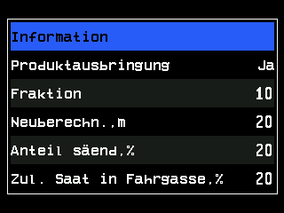
| Parameter | Ebene | Was er bewirkt | Bereich · Werkseinstellung |
|---|---|---|---|
| „Produktausbringung“ | Agronom | „Ja“: Diese Leitung sät und wird überwacht. „Nein“: Die Leitung gilt als abgeschaltet, wie eine Leitung in einem Fahrgassen-Durchgang – Saatgut durch sie löst „Saat in Fahrgasse“ aus. Nicht sichtbar, wenn jede Leitung der Gruppe einen eigenen Motor hat. | „Nein“ / „Ja“ |
| „Empfindl.“ | Agronom | Empfindlichkeit eines Kornsensors älterer Bauart. Nur sichtbar, wenn ein solcher Sensor angeschlossen ist. | 1 … 120 · 80 |
| „Fraktion“ | Fahrer | Der Zählfilter der Sensoren, eingestellt auf die Korngröße – ein Filter gegen Staub und Spreu. Ändern Sie sie mit der Kultur – Tabelle unten. | 1 … 100 · 10 |
| „Korrektur“ | Fahrer | Passt die Empfindlichkeit an die Halterung des Sensors an. Ein höherer Wert senkt die Empfindlichkeit und hält Staub und feinen Schmutz aus der Zählung. Nur sichtbar bei der Sensorgeneration, die ihn nutzt. | 100 … 3300 · 300 |
| „Mengenfehl.%“ | Agronom | Zulässige Abweichung der gemessenen Menge vom Sollwert; darüber „Unter Sollmenge“ oder „Über Sollmenge“. Nur in „Hybrid“ und „Einzelkorn“. | 5 … 95 % · 50 % |
| „Doppelfehler,%“ | Agronom | Über diesem Anteil an Doppelablagen: „Hoher % Doppel“. „Nein“ schaltet den Alarm aus. Nur in „Einzelkorn“. | „Nein“, 1 … 95 % · „Nein“ |
| „Fehlst.Fehl,%“ | Agronom | Über diesem Anteil an Fehlstellen: „Hoher % Fehlst.“. „Nein“ schaltet den Alarm aus. Nur in „Einzelkorn“. | „Nein“, 1 … 95 % · „Nein“ |
| „Neuberechn.,m“ | Fahrer | Die Strecke, über die Fehlstellen, Doppelablagen und Qualität für das Diagramm und die Aussaattabelle gesammelt werden. Ohne Geschwindigkeitssensor heißt der Punkt „Neuberechn.,Sek“, in Sekunden. „MENU“ darauf lässt das Panel sie berechnen – Neuberechnungsweg vom Panel berechnen lassen. | 10 … 50 · 20 |
| „Anteil säend,%“ | Agronom | Der Anteil der Saatleitungen, den das Panel braucht, bevor es die Aussaat zu überwachen beginnt – unten. Nur Kornsensoren; bei Maschinen mit Dosierermotoren nicht sichtbar. | 5 … 80 %, in Schritten von 5 · 20 % |
| „Zul. Saat in Fahrgasse,%“ | Agronom | Wie viel Saatgut noch durch eine für die Fahrgasse abgeschaltete Leitung laufen darf, in Prozent der Sollmenge, bevor „Saat in Fahrgasse“ ausgelöst wird. | 0 … 50 % · 20 % |
| „Startadresse Gruppe“ | Service (Korn), Agronom (Dünger) | Wo die Nummerierung dieser Gruppe im Sensornetz beginnt. Lassen Sie sie auf „AUTO“, wenn der Service nichts anderes sagt. | „AUTO“, … |
Im Modus „Durchfluss“ ist eine Leitung nur im Alarm, wenn sie unter der Alarmschwelle bleibt; eine Obergrenze gibt es nicht. Die Sollmengen und Alarmschwellen selbst stellen Sie auf dem Startbildschirm ein – Sollmenge ändern.
Fraktion je Kultur
Richten Sie sich nach der Korngröße:
| Kultur | „Fraktion“ |
|---|---|
| Raps | 1 – 5 |
| Weizen | 5 – 10 |
| Mais | 10 – 30 |
| Sonnenblume | 10 – 30 |
Stellen Sie bei pneumatischen Drillmaschinen 1 ein, gleich welche Kultur. Eine zu hohe Fraktion lässt kleine Körner aus der Zählung verschwinden – das Panel meldet dann eine zu niedrige Menge.
Wann das Panel die Aussaat überwacht
Das Panel beginnt die Aussaat zu überwachen – und Saatalarme auszulösen – erst, wenn Saatgut innerhalb der Sollmenge durch mindestens „Anteil säend,%“ der Saatleitungen fließt und, falls „Aussaatkriterium“ des Geschwindigkeitssensors „Ja“ ist, die Maschine fährt (Fahrgeschwindigkeitssensor). Bis dahin zeigt das Diagramm „NICHT ÜBERWACHT“ – siehe Aussaatalarme. Bei einem Arbeitsstellungssensor, dessen „Alarmkriterium“ „Ja“ ist, wird in der Transportstellung nichts überwacht (Behälter- und Arbeitsstellungssensoren).
Der Statusbildschirm
Zeigt Status: mit dem Zustand des Sensors – „Betrieb“, „Verstopft“, „Fremdlicht“ und die übrigen: Der Sensor-Statusbildschirm.
Neuberechnungsweg vom Panel berechnen lassen
Lassen Sie den Hectare Mini den besten Wert für „Neuberechn.,m“ für Fehlstellen und Doppelablagen aus der Sollmenge und den Löchern der Scheibe berechnen – mit oder ohne Dosierermotoren.
„Neuberechn.,m“ der Kornsensoren ist die Strecke, über die das Panel Fehlstellen, Doppelablagen und Qualität sammelt, bevor es das Diagramm und die Aussaattabelle aktualisiert (Korn- und Düngersensoren). Eine Strecke, die ganze Umdrehungen der Saatscheibe abdeckt, liefert die ruhigsten Werte. Das Panel kann sie aus der Sollmenge in Körnern je Meter und der Lochzahl der Scheibe berechnen.
Stellen Sie zuerst die Sollmenge auf dem Startbildschirm ein – Sollmenge ändern. Die Berechnung verwendet die Sollmenge des Modus „Einzelkorn“.
Öffnen Sie das Kontextmenü eines beliebigen Kornsensors (Sensoreinstellungen), wählen Sie „Neuberechn.,m“ und drücken Sie „MENU“.
Mit Dosierermotoren fragt das Panel, ob Menge und Lochzahl eingestellt sind – „Weg berechnen?“. Drücken Sie „PLUS“ für „Ja“. Es übernimmt die Löcher aus „Löcher in Scheibe“ des Motors (Das Kontextmenü eines Motors).
Ohne Motoren erinnert es zuerst daran, dass die Aussaatmenge bereits eingestellt sein muss; schließen Sie die Meldung. Geben Sie dann im Feld „Löcher in Scheibe“ die Lochzahl der Scheibe ein (1 bis 500) und berühren Sie „OK“.
Das Panel berechnet den Weg und stellt ihn ein: die längste Strecke aus ganzen Scheibenumdrehungen, bis zu zehn, die in 50 m passt, verdoppelt, solange sie kürzer als 25 m ist.
Ist schon eine einzige Umdrehung der Scheibe länger als 50 m, zeigt das Panel „Berechneter Weg zu groß. Maximum gesetzt.“ und stellt 50 m ein.
„Nein“ in Schritt 3 oder „BACK“ im Feld lässt den Weg, wie er war. Sie können „Neuberechn.,m“ jederzeit von Hand mit „PLUS“ / „MINUS“ einstellen, von 10 bis 50 m.
Ohne Geschwindigkeitssensor heißt der Punkt „Neuberechn.,Sek“, und die Strecke wird in Sekunden gezählt.
Dosierwellensensor
Die Einstellungen eines Dosierwellensensors des Hectare Mini – die Periode für „Kein Lauf“, die Überwachung der Wellendrehzahl gegen die Fahrgeschwindigkeit und die Überwachung des Produktgewichts – mit Bereichen und Werkseinstellungen.
Ein Dosierwellensensor zählt die Umdrehungen der Dosierwelle. Mindestens zeigt er an, dass die Welle stehen geblieben ist. Kalibriert, überwacht er außerdem die Wellendrehzahl gegen die Fahrgeschwindigkeit oder zählt das Gewicht des ausgebrachten Produkts. Jeder Dosierersensor hat eigene Einstellungen – stellen Sie jeden einzeln ein.
Öffnen Sie sein Kontextmenü wie in Sensoreinstellungen beschrieben.
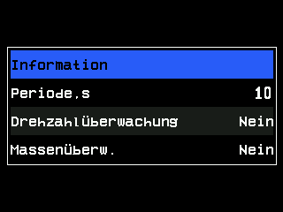
| Parameter | Ebene | Was er bewirkt | Bereich · Werkseinstellung |
|---|---|---|---|
| „Dosierer-Kalibr.(Masse)“ | Fahrer | Startet die Kalibrierung nach Gewicht – Dosierer nach Gewicht kalibrieren. Nur sichtbar mit „Massenüberw.“ auf „Ja“. | – |
| „Periode,s“ | Fahrer | Die längste Zeit zwischen zwei Impulsen des Sensors. Liefert die Welle länger keinen Impuls, während die Maschine sät oder fährt, löst das Panel „Kein Lauf“ aus. | 1 … 60 s · 10 s |
| „Drehzahlüberwachung“ | Agronom | „Ja“: Die Wellendrehzahl wird gegen die Fahrgeschwindigkeit überwacht, innerhalb von „Max. Fehler, %“. „Nein“: nur, ob sich die Welle überhaupt dreht. Erfordert die Drehungskalibrierung. | „Nein“ / „Ja“ · „Nein“ |
| „Rad, Impulse“ | Agronom | Impulse des Geschwindigkeitssensors, die zu „Dosierer Impulse“ dieses Sensors gehören. Wird von der Drehungskalibrierung geschrieben. Sichtbar mit „Drehzahlüberwachung“ auf „Ja“. | 1 … 65535 · 100 |
| „Dosierer Impulse“ | Agronom | Impulse dieses Sensors, die zu „Rad, Impulse“ gehören. Wird von der Drehungskalibrierung geschrieben. | 1 … 65535 · 100 |
| „Max. Fehler, %“ | Agronom | Zulässige Abweichung der Wellendrehzahl; darüber, während die Maschine fährt, „Drehzahl zu niedrig“ oder „Drehzahl zu hoch“. | 1 … 50 % · 10 % |
| „Massenüberw.“ | Agronom | „Ja“: Das Panel zählt aus den Umdrehungen dieser Welle das Gewicht des ausgebrachten Produkts je Hektar. Erfordert die Kalibrierung nach Gewicht. | „Nein“ / „Ja“ · „Nein“ |
| „Produkttyp“ | Agronom | Welches Produkt dieser Dosierer ausbringt: „Produkt 1“, „Produkt 2“ oder „Produkt 3“. Sichtbar mit „Massenüberw.“ auf „Ja“. | · „Produkt 1“ |
| „Masse, g“ | Agronom | Gewicht des Produkts, das zu „Masse, Impulse“ gehört – zusammen die Ausbringung des Dosierers je Umdrehung. Wird von der Kalibrierung nach Gewicht geschrieben. | 1 … 65535 · 10000 |
| „Masse, Impulse“ | Agronom | Impulse dieses Sensors, die zu „Masse, g“ gehören. | 1 … 65535 · 100 |
Ohne Geschwindigkeitssensor im Profil kann das Panel nur überwachen, ob sich die Welle dreht: Die Punkte für Drehzahl und Gewicht sind ausgeblendet.
Produkttyp
Das Panel verfolgt bis zu drei Produkte nach Gewicht. Dosierer, die dasselbe Produkt ausbringen, erhalten dieselbe Nummer:
| Maschine | Einstellung |
|---|---|
| Ein Dosierersensor | „Produkt 1“. |
| Zwei Dosierer, dasselbe Saatgut | „Produkt 1“ an beiden. |
| Zwei Dosierer, Saatgut und Trockendünger | „Produkt 1“ am Saatgut-Dosierer, „Produkt 2“ am Dünger-Dosierer. |
| Drei Dosierer, zwei für Saatgut, einer für Dünger | „Produkt 1“ an den beiden Saatgut-Dosierern, „Produkt 2“ am dritten. |
Ein Produkt, das bereits ein Elektromotor dosiert, lässt sich hier nicht wählen; das Panel springt zum nächsten freien. Ist kein Produkt frei, bleibt „Massenüberw.“ auf „Nein“.
Der Statusbildschirm
Zeigt die Impulsfrequenz F= in Hz, mit drei Nachkommastellen – Der Sensor-Statusbildschirm.
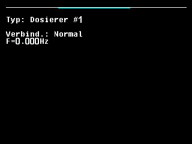
Dosierer-Drehung kalibrieren
Drehen Sie das Antriebsrad, damit der Hectare Mini lernt, wie viele Dosierer-Impulse zu wie vielen Rad-Impulsen gehören – nötig, bevor die „Drehzahlüberwachung“ die Wellendrehzahl überwachen kann.
Mit „Drehzahlüberwachung“ auf „Ja“ überwacht ein Dosierersensor, ob sich die Welle so schnell dreht, wie es die Fahrgeschwindigkeit verlangt (Dosierwellensensor). Dazu muss das Panel das Verhältnis zwischen den Impulsen des Geschwindigkeitssensors und den Impulsen des Dosierersensors kennen. Die Kalibrierung misst es und schreibt „Rad, Impulse“ und „Dosierer Impulse“.
Bevor Sie beginnen: Der Geschwindigkeitssensor und die zu kalibrierenden Dosierersensoren müssen überwacht werden und antworten. Sie brauchen die Ebene „Agronom“ (Agronomen-Ebene aktivieren). Heben Sie die Maschine an, damit sich das Antriebsrad drehen lässt, oder halten Sie sich bereit, sie zu bewegen.
„Einstell.“ → „Sämaschinen-Parameter“. Wählen Sie „Dosierer-Kalibrierung“.
Wählen Sie mit „PLUS“ / „MINUS“, welche Dosierer kalibriert werden sollen: „ALLE“ oder die Nummer eines Dosierers.
Drücken Sie „MENU“. Der Bildschirm „Kalibrierung“ öffnet sich mit einem Fortschrittsbalken bei 0 %.
Drehen Sie das Antriebsrad. Der Balken füllt sich, während Impulse vom Rad und von jedem zu kalibrierenden Dosierer eintreffen.
Bei 100 % – mindestens 100 Impulse von jedem – piept das Panel und zeigt „Drehung stoppen!“. Hören Sie auf zu drehen.
Kommt zwei Sekunden lang kein Impuls mehr, speichert das Panel die Werte und zeigt „Fertig“; das Menü „Sämaschinen-Parameter“ kehrt zurück.

„BACK“ bricht jederzeit mit „Kalibrierung abgebrochen!“ ab; nichts ändert sich.
| Das Panel zeigt | Bedeutung |
|---|---|
| „Sensor nicht überwacht! Kalibrierung abgebrochen!“ | Der Geschwindigkeitssensor oder ein zu kalibrierender Dosierersensor ist nicht in der Überwachung. Nehmen Sie ihn in die Überwachung (Sensor in die Überwachung nehmen oder herausnehmen). |
| „Keine Verbindung zum Sensor! Kalibrierung abgebrochen!“ | Der Geschwindigkeitssensor oder ein Dosierersensor antwortet nicht, beim Start oder während der Kalibrierung. |
Je mehr Sie vor „Drehung stoppen!“ drehen, desto besser: Die Werte werden von selbst herunterskaliert, wenn der Zählerstand über das hinauswächst, was sie fassen können.
Kalibrieren Sie nach jeder Änderung am Antrieb zwischen Rad und Dosierer erneut – Kettenräder, Getriebe oder Variator.
Dosierer nach Gewicht kalibrieren
Lassen Sie den Dosierer in einen Behälter laufen und wiegen Sie ihn, damit der Hectare Mini weiß, wie viel Produkt eine Wellenumdrehung ausbringt – nötig für die „Massenüberw.“.
Mit „Massenüberw.“ auf „Ja“ zählt das Panel das ausgebrachte Produkt aus den Umdrehungen der Dosierwelle (Dosierwellensensor). Die Kalibrierung misst das Gewicht je Impuls und schreibt „Masse, g“ und „Masse, Impulse“. Sie wird auf der Ebene „Fahrer“ im Stand durchgeführt.
Sie brauchen einen Behälter, eine Waage und eine Möglichkeit, die Dosierwelle von Hand zu drehen.
Halten Sie auf dem Startbildschirm „MENU“ gedrückt, wählen Sie den Dosierersensor und drücken Sie „MENU“. Das Kontextmenü öffnet sich.
Wählen Sie „Dosierer-Kalibr.(Masse)“ und drücken Sie „MENU“. Der Kalibrierbildschirm zeigt die Sollmengen der verwendeten Produkte – das Produkt dieses Dosierers zwischen Pfeilen – und „PLUS - Dosierer 1 kalibrieren“ mit der Nummer des Dosierers.
Drücken Sie „PLUS“. Das Panel listet auf, was vor der Kalibrierung zu tun ist: den leeren Behälter wiegen und das Gewicht notieren; den Behälter füllen; den leeren Behälter unter den Dosierer stellen; den Rotor drehen, bis seine Zellen gefüllt sind. Erledigen Sie alles und drücken Sie dann „UP“.
Der nächste Bildschirm listet die Kalibrierung selbst auf und zählt die „Impulse“ vom Sensor: Leeren Sie den Behälter, stellen Sie ihn wieder unter den Dosierer und drehen Sie den Rotor, sodass der Behälter sich füllt – möglichst viel, zwischen 2 kg und 60 kg.
Sobald mehr als zehn Impulse gezählt sind, erscheint die Zeile „MINUS - Kalibrierung beenden“. Drehen Sie weiter, bis der Behälter so viel enthält, wie Sie schaffen – mindestens 100 Impulse und 5 kg ergeben ein gutes Ergebnis. Hören Sie dann auf.
Drücken Sie „MINUS“. Das Zahlenfeld öffnet sich: „Differenz zwischen gefülltem und leerem Behälter in Gramm eingeben“.
Wiegen Sie den vollen Behälter, ziehen Sie das Leergewicht ab, geben Sie die Differenz in Gramm ein (2000 bis 60000) und berühren Sie „OK“. Das Panel speichert die Werte und kehrt zum ersten Bildschirm zurück.
Drücken Sie „BACK“, um zu verlassen.

„BACK“ auf der Liste vor der Kalibrierung bricht sie ab. „BACK“ während der Kalibrierung fragt „Sind Sie sicher?“ – „PLUS“ bricht ab, „MINUS“ macht weiter. „BACK“ auf dem Zahlenfeld behält die alten Werte.
Wenn sie nicht startet oder stoppt
„PLUS“ in Schritt 3 funktioniert nur, solange der Sensor überwacht wird, antwortet und keinen Alarm hat. Sonst nennt der erste Bildschirm den Grund – „Nicht überwacht“, „Keine Verbindung“ oder „ALARM“. Fällt der Sensor während der Kalibrierung aus, zeigt das Panel „ALARM“ mit dem Grund; „BACK“ führt zum ersten Bildschirm zurück.
Gebläsesensor
Die Einstellungen eines Gebläsedrehzahlsensors des Hectare Mini – minimale und maximale Gebläsedrehzahl und Impulse je Umdrehung – und wann das Panel seine Alarme auslöst.
Ein Gebläsesensor zählt die Umdrehungen des Gebläses einer pneumatischen Drill- oder Einzelkornmaschine. Der Startbildschirm zeigt die Gebläsedrehzahl in U/min. Jeder Gebläsesensor hat eigene Einstellungen.
Öffnen Sie sein Kontextmenü wie in Sensoreinstellungen beschrieben.

| Parameter | Ebene | Was er bewirkt | Bereich · Werkseinstellung |
|---|---|---|---|
| „Minimum, U/min“ | Fahrer | Niedrigste zulässige Gebläsedrehzahl. Darunter löst das Panel „Drehzahl zu niedrig“ aus – aber nur, solange die Maschine sät oder in Arbeitsstellung fährt. | 500 … 9000 U/min, in Schritten von 500 · 3000 |
| „Maximum, U/min“ | Fahrer | Höchste zulässige Gebläsedrehzahl. Darüber löst das Panel „Drehzahl zu hoch“ aus – jederzeit, auch im Stand. | 500 … 9000 U/min, in Schritten von 500 · 5000 |
| „Impulse“ | Agronom | Impulse des Sensors je Umdrehung des Gebläses. | 1 … 60 · 2 |
Eine Gebläsedrehzahl, die richtig aussieht, aber Alarme auslöst, deutet meist auf falsche „Impulse“ hin: Doppelt so viele Impulse zeigen die halbe Drehzahl.
Was Säen und Fahren für das Panel bedeuten, steht unter Wann das Panel die Aussaat überwacht. Ohne Geschwindigkeitssensor wird das Minimum überwacht, solange das Panel Aussaat erkennt. Bei einem Arbeitsstellungssensor, dessen „Alarmkriterium“ „Ja“ ist, wird das Minimum in der Transportstellung nicht überwacht.
Der Statusbildschirm
Zeigt die Impulsfrequenz F= in Hz – Der Sensor-Statusbildschirm. Die Gebläsedrehzahl in U/min ist diese Frequenz × 60 ÷ „Impulse“.
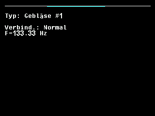
Die Alarme des Gebläses und was zu prüfen ist: Gebläse und Dosierwelle: Drehzahlalarme.
Drucksensor
Die Einstellungen eines Drucksensors (Unterdruck) des Hectare Mini – Filter, minimaler und maximaler Druck – und wann das Panel seine Alarme auslöst.
Ein Drucksensor misst den Unterdruck (oder Überdruck) des Luftsystems – zum Beispiel am Gebläseauslass oder in den Säaggregaten einer Unterdruck-Einzelkornmaschine. Das Panel arbeitet mit dem Absolutwert: Eine höhere Zahl bedeutet mehr Unterdruck. Jeder Drucksensor hat eigene Einstellungen.
Öffnen Sie sein Kontextmenü wie in Sensoreinstellungen beschrieben.
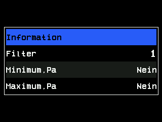
| Parameter | Ebene | Was er bewirkt | Bereich · Werkseinstellung |
|---|---|---|---|
| „Filter“ | Agronom | Wie lange der Sensor den Druck misst und mittelt. Erhöhen Sie den Wert, wenn die Anzeige stark springt. | 1 … 16 · 1 |
| „Minimum,Pa“ | Fahrer | Unter diesem Druck – zu wenig Unterdruck – löst das Panel „Druck nied.“ aus. „Nein“ schaltet die Prüfung aus. | „Nein“, 100 … 10000 Pa, in Schritten von 100 · „Nein“ |
| „Maximum,Pa“ | Fahrer | Über diesem Druck – zu viel Unterdruck – löst das Panel „Druck hoch“ aus. „Nein“ schaltet die Prüfung aus. | „Nein“, 100 … 10000 Pa, in Schritten von 100 · „Nein“ |
Beide Grenzen werden nur überwacht, solange die Maschine sät oder in Arbeitsstellung fährt – siehe Wann das Panel die Aussaat überwacht. Ohne Geschwindigkeitssensor werden sie überwacht, solange das Panel Aussaat erkennt.
Die Grenzen werden in Pascal eingestellt; der Statusbildschirm zeigt den Druck in Kilopascal: 1 kPa = 1000 Pa.
Der Statusbildschirm
Zeigt den gemessenen Druck P= in kPa, nur solange der Sensor antwortet – Der Sensor-Statusbildschirm.
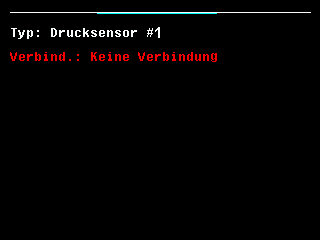
Die Alarme und was zu prüfen ist: Druckalarme. Ein neuer oder ersetzter Drucksensor muss zuerst seine Adresse erhalten – Drucksensor konfigurieren.
Behälter- und Arbeitsstellungssensoren
Der Behälterfüllstandsensor des Hectare Mini, der keine Einstellungen hat, und der Arbeitsstellungssensor mit seinem Transportsignal und seinem Alarmkriterium.
Behälterfüllstandsensor
Der Behältersensor meldet, wenn das Produkt im Behälter unter die Höhe sinkt, in der der Sensor montiert ist. Er hat keine Einstellungen: Sein Kontextmenü enthält nur „Information“ (und auf der Ebene Service „Standardwerte“, wo es nichts zurückzusetzen gibt).
Der Statusbildschirm zeigt Pin: mit dem Pegel an seinem Eingang: "1" – der Behälter ist am Sensor leer, und das Panel löst „Behäl. leer“ aus; "0" – Produkt bedeckt den Sensor. Siehe Behälteralarme.
Arbeitsstellungssensor
Der Arbeitsstellungssensor sagt dem Panel, ob das Gerät in Arbeitsstellung abgesenkt oder in Transportstellung angehoben ist. Öffnen Sie sein Kontextmenü wie in Sensoreinstellungen beschrieben.
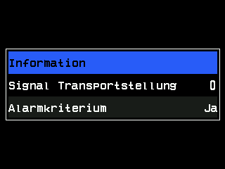
| Parameter | Ebene | Was er bewirkt | Werte · Werkseinstellung |
|---|---|---|---|
| „Signal Transportstellung“ | Agronom | Der Pegel am Eingang, der Transportstellung bedeutet: 0 oder 1. Stellen Sie ein, was der Sensor bei angehobenem Gerät liefert. | 0 / 1 · 0 |
| „Alarmkriterium“ | Agronom | „Ja“: In Transportstellung überwacht das Panel die Aussaat nicht, und das Gebläseminimum, die Druckgrenzen und die Dosierwellen werden unterwegs nicht überwacht – keine Alarme am Vorgewende. „Nein“: Die Stellung wird nur angezeigt; sie wirkt sich nicht auf die Alarme aus. Bei Maschinen mit Dosierermotoren oder Flüssigdünger-Pumpensteuergerät ausgeblendet und immer „Ja“. | „Nein“ / „Ja“ · „Ja“ |
Bei einer Maschine mit Dosierermotoren gilt ein Arbeitsstellungssensor, der nicht antwortet, als Transportstellung – aus Sicherheitsgründen wird nichts dosiert. Ohne Motoren gilt ein Sensor, der nicht antwortet oder nicht überwacht wird, als Arbeitsstellung.
Der Statusbildschirm zeigt „Position: Arbeit“ oder „Position: Transport“ und Pin: mit dem Pegel am Eingang – vergleichen Sie ihn mit der tatsächlichen Stellung, wenn Sie „Signal Transportstellung“ einstellen. Die Stellung wechselt erst nach einem kurzen Filter, sodass ein Stoß sie nicht umschaltet.
Auf dem Startbildschirm blinkt die Geräteanzeige in Transportstellung gelb – siehe Anzeigen.
Motorsensoren des Gebläseantriebs
Die fünf Sensoren eines separaten Gebläsemotors am Hectare Mini – Zündung, Öldruck-Störung, Batterieladung, Kraftstoffmangel, Luftfilter –, ihre zwei Einstellungen und wie der Zündungssensor die übrigen freigibt.
Drillmaschinen, deren Gebläse einen eigenen Motor antreibt, können diesen Motor mit bis zu fünf Schaltsensoren an einem Eingangsmodul überwachen. Jeder wird einzeln im Profil eingetragen. Alle fünf haben dieselben zwei Einstellungen und denselben Statusbildschirm; sie unterscheiden sich darin, was das Signal bedeutet.

| Parameter | Ebene | Was er bewirkt | Bereich · Werkseinstellung |
|---|---|---|---|
| „Aktivier.-Signal“ | Agronom | Der Pegel am Eingang, 0 oder 1, der den Zustand in der Tabelle unten bedeutet. | 0 / 1 · 1 |
| „Signalverz., Sek“ | Agronom | Wie lange der Eingang seinen neuen Pegel halten muss, bevor das Panel die Änderung annimmt – gegen Fehlauslösung durch Vibration oder Wackelkontakt. | 1 … 30 s · 1 s; „Wenig Kr.“ 15 s, „Luftfilter“ 5 s |
| Sensor | Das Aktivierungssignal bedeutet | Alarm |
|---|---|---|
| „Zündung“ | Die Zündung des Gebläsemotors ist eingeschaltet. | keiner – siehe unten |
| „Öldruck-Störung“ | Der Öldruck des Motors ist zu niedrig. | ja, nur bei eingeschalteter Zündung |
| „Batt. lädt nicht“ | Die Batterie wird vom Motor nicht geladen. | ja, nur bei eingeschalteter Zündung |
| „Wenig Kr.“ | Im Tank des Motors ist wenig Kraftstoff. | ja |
| „Luftfilter“ | Der Luftfilter des Motors ist verschmutzt. | ja |
Die Werkseinstellungen von „Signalverz., Sek“ für „Wenig Kr.“ und „Luftfilter“ werden gesetzt, wenn der Sensor auf seine Standardwerte zurückgesetzt wird.
Wie der Zündungssensor die übrigen freigibt
Der Zündungssensor löst keinen eigenen Alarm aus. Er hält die Sensoren für Öldruck und Batterieladung ruhig, solange der Motor aus ist – bei ausgeschalteter Zündung sind niedriger Öldruck und fehlende Ladung normal. Solange der Zündungssensor überwacht wird, antwortet und Zündung aus meldet, bleiben diese beiden ruhig. Wird der Zündungssensor nicht überwacht oder antwortet er nicht, melden sie unabhängig vom Zustand der Zündung.
Darum sollten „Öldruck-Störung“ und „Batt. lädt nicht“ nur zusammen mit „Zündung“ im Profil stehen und zusammen mit ihr herausgenommen werden.
Auf dem Startbildschirm ist die Zündungsanzeige gelb, solange die Zündung aus ist, und grau, solange sie an ist – siehe Anzeigen.
Der Statusbildschirm
Zeigt Pin: mit dem aktuellen Pegel am Eingang, "0" oder "1" – vergleichen Sie ihn mit dem tatsächlichen Zustand des Motors, um „Aktivier.-Signal“ einzustellen. Siehe Der Sensor-Statusbildschirm.
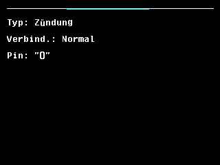
Die Alarme und was zu prüfen ist: Motoralarme.
Spuranzeiger-Sensoren
Die zwei Einstellungen der Sensoren an den Spuranzeigerarmen des Hectare Mini – welchen Arm ein einzelner Sensor überwacht und welches Signal bedeutet, dass der Arm unten ist.
Spuranzeiger-Sensoren sagen dem Panel, ob die Spuranzeigerarme oben oder unten sind. Der Startbildschirm zeichnet die beiden Arme; beide oben werden gelb dargestellt – siehe Anzeigen. Wie viele Sensoren die Arme überwachen, stellen Sie unter „Spuranz.“ im Profil ein: „Einer“ oder „Beide“.
Öffnen Sie das Kontextmenü eines Spuranzeiger-Sensors wie in Sensoreinstellungen beschrieben. Beide Einstellungen erfordern die Ebene „Agronom“.
| Parameter | Was er bewirkt | Werte · Werkseinstellung |
|---|---|---|
| „Spuranz.montiert“ | Welchen Arm der einzelne Sensor überwacht: „Links“ oder „Rechts“. Nur sichtbar mit „Spuranz.“ auf „Einer“. | · „Links“ |
| „Signal "ab"“ | Der Pegel am Eingang, 0 oder 1, der bedeutet, dass der Arm unten ist. Stellen Sie ein, was der Sensor bei abgesenktem Arm liefert. | 0 / 1 · 0 |
Der Statusbildschirm eines Spuranzeiger-Sensors zeigt nur die gemeinsamen Zeilen – Typ, Verbindung und Alarme (Der Sensor-Statusbildschirm). Ein Spuranzeiger-Sensor löst nur die Alarme aus, die jedes Gerät auslösen kann: „Verbindung weg“ und „Falscher Gerätetyp!“ – siehe Gerät antwortet nicht.
Gerätekonfiguration
Wofür die Gerätekonfiguration am Hectare Mini dient und wie Sie sie vorbereiten – nur das eine Gerät am Kabelbaum, die Ebene Agronom, das Menü Sensorkonfiguration.
Jedes Gerät im Sensornetz antwortet unter seiner eigenen Adresse. Die Adresse eines Kornsensors ist die Nummer seiner Reihe. Ein neuer oder ersetzter Sensor muss die richtige Adresse erhalten, bevor das Panel ihn finden kann. Das ist die Gerätekonfiguration, unter „Service“ → „Sensorkonfiguration“.
Vorbereiten
Trennen Sie alle Sensoren vom Kabeleingang des Kommunikationskabelbaums am Panel – dem vierpoligen Stecker.

Der Kabeleingang des Kommunikationskabelbaums: der vierpolige Stecker, der Kabelbaum und der Stromanschluss. Schließen Sie nur das Gerät an, das eine neue Adresse erhalten soll.
Schalten Sie das Panel ein. Nach dem Start meldet es „Verbindung weg“ für alle fehlenden Geräte. Schließen Sie die Fenster mit „HOME“.
Heben Sie die Ebene auf „Agronom“ an – Agronomen-Ebene aktivieren. Für einen HUB-8-Verteiler oder einen Fahrgassen-Aktuator heben Sie sie auf „Service“ an.
Drücken Sie „BACK“, um zum Hauptmenü zurückzukehren. Wählen Sie „Service“ und drücken Sie „MENU“.
Wählen Sie „Sensorkonfiguration“ und drücken Sie „MENU“. Das Menü listet die Geräte auf, die sich konfigurieren lassen.
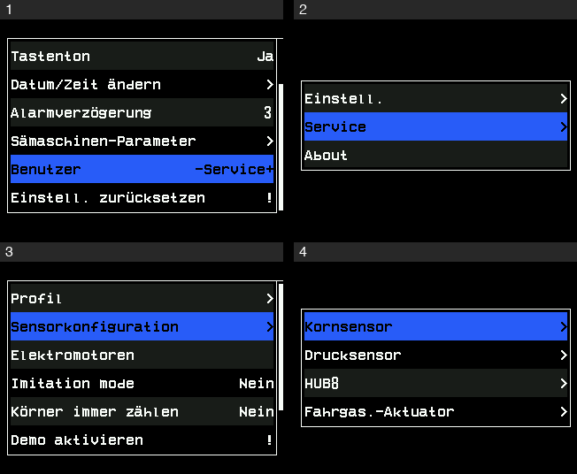
Der Weg zur Sensorkonfiguration: Einstellungen, das Hauptmenü, das Service-Menü, das Menü Sensorkonfiguration.
| Punkt | Ebene | Wie |
|---|---|---|
| „Kornsensor“ | Agronom | Kornsensor konfigurieren |
| „Drucksensor“ | Agronom | Drucksensor konfigurieren |
| „HUB8“ | Service | HUB-8-Verteiler konfigurieren |
| „Fahrgas.-Aktuator“ | Service | Nur für den Servicetechniker. |
Die Regeln jeder Konfiguration
- Ein Gerät am Kabelbaum. Bei „Sensoradresse“ auf „AUTO“ nimmt das Panel das eine Gerät, das es findet. Antwortet mehr als eines, lehnt es mit „Mehr als ein Gerät im Netz gefunden!“ ab; antwortet keines, zeigt es „Keine Verbindung“.
- Die neue Adresse muss frei sein. Wurde das Gerät statt über „AUTO“ über seine aktuelle Adresse gewählt, prüft das Panel auch die neue: Benutzt sie schon ein anderes Gerät, zeigt es „Adresse: … belegt!“ mit der Nummer und ändert nichts.
- Jede andere Ablehnung lautet „Fehler #“ mit einer Nummer. Trennen Sie das Gerät, schließen Sie es wieder an und versuchen Sie es erneut.
- Prüfen Sie das Ergebnis: Trennen Sie das Gerät, schließen Sie es wieder an und kehren Sie mit „BACK“ zum Startbildschirm zurück. Das Gerät muss an seinem Platz erscheinen, ohne rotes Kreuz.
Kornsensor konfigurieren
Geben Sie einem neuen oder ersetzten Kornsensor des Hectare Mini die Nummer seiner Reihe – wie Sie einen offenen Sensor halten, die drei Menüpunkte und die Kontrolle danach.
Für einen Kornsensor ist die neue Adresse die Nummer seiner Reihe – die Nummer, die auf dem Startbildschirm unter seiner Säule steht. Bereiten Sie zuerst vor wie in Gerätekonfiguration: nur dieser Sensor am Kabelbaum, Ebene „Agronom“, Menü „Sensorkonfiguration“ geöffnet.
Die Adresse eines Kornsensors lässt sich nur ändern, solange der Sensor normal arbeitet. Ein Rohrsensor ist bereit, sobald er angeschlossen ist. Ein offener Sensor muss auf seinem Schar sitzen oder so gehalten werden, dass kein direktes Licht in den optischen Kanal fällt – den Spalt zwischen den beiden Gläsern. Im direkten Licht meldet der Sensor eine Störung und übernimmt die neue Adresse nicht.
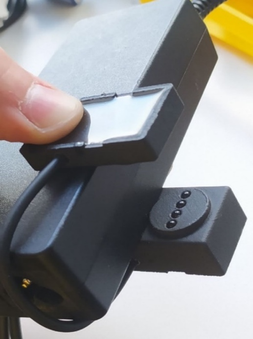
Wählen Sie in „Sensorkonfiguration“ „Kornsensor“ und drücken Sie „MENU“. Das Menü hat drei Punkte: „Sensoradresse“, „Neue Adresse“ und „Einstellen“.
Lassen Sie „Sensoradresse“ auf „AUTO“. Zeigt es etwas anderes, stellen Sie es mit „PLUS“ / „MINUS“ zurück.
Wählen Sie „Neue Adresse“ und stellen Sie mit „PLUS“ / „MINUS“ die Reihennummer ein.
Wählen Sie „Einstellen“ und drücken Sie „MENU“. Das Panel antwortet mit „Fertig“ und der Adresse, unter der es den Sensor gefunden hat.
Trennen Sie den Sensor und schließen Sie ihn wieder an. Kehren Sie mit „BACK“ zum Startbildschirm zurück (zweimal aus dem Menü „Service“). Der Sensor muss unter seiner Reihe erscheinen; die nicht angeschlossenen Reihen zeigen ein rotes Kreuz.
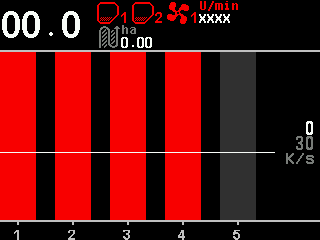
Der Startbildschirm nach der Neuvergabe, mit nur einem Sensor am Kabelbaum: Die anderen Reihen und Geräte sind rot durchgestrichen.
Wiederholen Sie das für jeden Sensor, der eine Adresse erhalten soll. Wenn alle fertig sind, kehren Sie auf „Fahrer“ zurück – stellen Sie „Benutzer“ in „Einstell.“ zurück oder schalten Sie das Panel aus und wieder ein – und schließen Sie alle Geräte wieder an.
Nach einem Sensor suchen
Halten Sie „MENU“ auf „Sensoradresse“, um das Netz nach einem Kornsensor abzusuchen: Der Punkt zeigt dann die aktuelle Adresse des gefundenen Sensors. Halten Sie „MENU“ erneut, um nach dem nächsten zu suchen. Steht anstelle von „AUTO“ eine gefundene Adresse, vergibt „Einstellen“ genau diesem Sensor eine neue Adresse, und das Panel prüft, ob die neue Adresse frei ist. Wird nichts gefunden, zeigt das Panel „Keine Verbindung“.
Was die Fehlermeldungen bedeuten: Die Regeln jeder Konfiguration.
Drucksensor konfigurieren
Geben Sie einem neuen oder ersetzten Drucksensor des Hectare Mini seine Adresse – die drei Menüpunkte und die Kontrolle danach.
Jeder Drucksensor des Profils antwortet unter seiner eigenen Adresse; der erste Drucksensor hat die erste Adresse des Bereichs, der zweite die nächste und so weiter. „Neue Adresse“ bietet nur die Adressen dieses Bereichs an. Fragen Sie den Service, welche Ihr Sensor braucht, wenn Sie unsicher sind. Bereiten Sie zuerst vor wie in Gerätekonfiguration: nur dieser Sensor am Kabelbaum, Ebene „Agronom“, Menü „Sensorkonfiguration“ geöffnet.
Wählen Sie in „Sensorkonfiguration“ „Drucksensor“ und drücken Sie „MENU“. Das Menü hat drei Punkte: „Sensoradresse“, „Neue Adresse“ und „Einstellen“.
Lassen Sie „Sensoradresse“ auf „AUTO“.
Wählen Sie „Neue Adresse“ und stellen Sie die Adresse mit „PLUS“ / „MINUS“ ein. Sie öffnet sich bei der ersten Adresse des Bereichs, der von Drucksensor 1.
Wählen Sie „Einstellen“ und drücken Sie „MENU“. Das Panel antwortet mit „Fertig“.
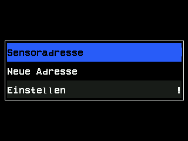
Das Menü Drucksensor (die Adresse ist in dieser Anleitung verdeckt). Trennen Sie den Sensor und schließen Sie ihn wieder an. Kehren Sie mit „BACK“ zum Startbildschirm zurück. Der Drucksensor muss sich wieder melden; solange ein Drucksensor fehlt, zeigt seine Anzeige ein rotes Kreuz und XXXX.
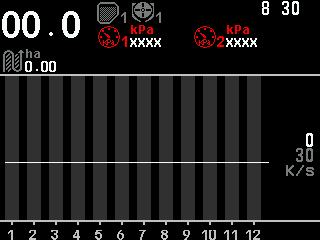
Der Startbildschirm, solange die Drucksensoren nicht angeschlossen sind.
Wenn alle Geräte fertig sind, kehren Sie auf „Fahrer“ zurück – stellen Sie „Benutzer“ in „Einstell.“ zurück oder schalten Sie das Panel aus und wieder ein – und schließen Sie alle Geräte wieder an.
Halten Sie „MENU“ auf „Sensoradresse“, um nach einem Drucksensor am Kabelbaum zu suchen, wie beim Kornsensor beschrieben – Nach einem Sensor suchen. Die Fehlermeldungen: Die Regeln jeder Konfiguration.
HUB-8-Verteiler konfigurieren
Stellen Sie die acht Kanäle eines HUB-8-Verteilers am Hectare Mini ein – wofür jeder Kanal steht und die Kurzbefehle, die alle Kanäle auf einmal füllen.
Ein HUB-8-Verteiler sammelt bis zu acht Sensoren und steht im Sensornetz stellvertretend für jeden von ihnen: Jeder Kanal erscheint dem Panel als Eingangsmodul oder als Kornsensor mit eigener Adresse. Die Konfiguration sagt jedem Kanal, wofür er steht und der wievielte seiner Gruppe er ist. Sie erfordert die Ebene „Service“. Bereiten Sie zuerst vor wie in Gerätekonfiguration: nur der Verteiler am Kabelbaum, Menü „Sensorkonfiguration“ geöffnet.
Wählen Sie in „Sensorkonfiguration“ „HUB8“ und drücken Sie „MENU“. Das Menü zeigt „Geräteadresse“, dann je Kanal ein Paar „Kanal 1 Typ“ und „Kanal 1 Adresse“, bis Kanal 8, und am Ende „Einstellen“.
Lassen Sie „Geräteadresse“ auf „AUTO“.
Wählen Sie „Kanal 1 Typ“ und bestimmen Sie mit „PLUS“ / „MINUS“, wofür der Kanal steht: „Eingangsmodul“ oder „Kornsensoren“.
Wählen Sie „Kanal 1 Adresse“ und stellen Sie mit „PLUS“ / „MINUS“ ein, das wievielte Gerät seiner Gruppe dieser Kanal ist – seine laufende Nummer unter den Eingangsmodulen oder unter den Kornsensoren.
Verfahren Sie ebenso mit den Kanälen 2 bis 8.
Wählen Sie „Einstellen“ und drücken Sie „MENU“. Das Panel antwortet mit „Fertig“.
Trennen Sie den Verteiler und schließen Sie ihn wieder an. Kehren Sie mit „BACK“ zum Startbildschirm zurück. Die Geräte an seinen Kanälen müssen sich wieder melden; solange der Verteiler abgesteckt ist, sind sie rot durchgestrichen.

Der Startbildschirm bei abgestecktem Verteiler: Dosierer, Gebläse und Drucksensoren sind durchgestrichen.
Wenn alle Geräte fertig sind, kehren Sie auf „Fahrer“ zurück – stellen Sie „Benutzer“ in „Einstell.“ zurück oder schalten Sie das Panel aus und wieder ein – und schließen Sie alle Geräte wieder an.
Kurzbefehle
- Halten Sie „MENU“ auf einem der Punkte „Kanal 1 Typ“ bis „Kanal 8 Typ“: Alle folgenden Kanäle erhalten denselben Typ, und ihre Adressen werden ab diesem Kanal fortlaufend nummeriert.
- Halten Sie „MENU“ auf einem der Punkte „Kanal 1 Adresse“ bis „Kanal 8 Adresse“: Die folgenden Kanäle desselben Typs werden ab diesem fortlaufend nummeriert.
- Halten Sie „MENU“ auf „Geräteadresse“: Das Panel sucht nach einem Verteiler und liest seine aktuellen Kanaleinstellungen in das Menü ein. Halten Sie erneut für den nächsten.
Wenn Sie einen Kanaltyp ändern, springt die Adresse dieses Kanals auf die erste freie des neuen Typs. Haben zwei Kanäle desselben Typs am Ende dieselbe Adresse, weist „Einstellen“ mit „Ungültiges Profil!“ ab. Die übrigen Meldungen: Die Regeln jeder Konfiguration.
So arbeiten die Alarme
Wann der Hectare Mini einen Alarm auslöst, was das Alarmfenster zeigt, wie Sie es schließen, welche Meldungen keine Alarmfenster sind und wie die Alarmthemen dieser Anleitung geordnet sind.
Ein Alarm ist ein Fenster, das sich mit einem Alarmsignal über den Arbeitsbildschirm legt. Es teilt Ihnen mit, dass ein Gerät – ein Sensor, ein Motor, ein Aktuator – oder das System als Ganzes eine Störung festgestellt hat. Die Alarmthemen dieses Abschnitts sind nach Geräten geordnet. Suchen Sie nach den Wörtern, die Sie auf dem Bildschirm sehen.
Wann das Panel einen Alarm auslöst
Eine Störung wird nicht in dem Moment gemeldet, in dem sie auftritt. Die Bedingung muss ununterbrochen für die bei „Alarmverzögerung“ eingestellte Zeit bestehen, bevor sich das Fenster öffnet.
| Einstellung | Wert |
|---|---|
| Wo | „Einstell.“ → „Alarmverzögerung“, Ebene „Fahrer“ – Das Menü Einstellungen |
| Bereich | 2 bis 20 Sekunden, in Schritten von 1 Sekunde |
| Werkseinstellung | 3 Sekunden. Ein gespeicherter Wert außerhalb des Bereichs wird von selbst auf 3 zurückgesetzt. |
Eine kurze Verzögerung reagiert schnell, aber auch auf einen einzelnen Stoß oder eine kurze Lücke im Kornfluss. Eine lange Verzögerung hält den Bildschirm ruhig, doch eine echte Störung kann bis zu zwanzig Sekunden laufen, bevor Sie davon erfahren.
Zwei Fälle folgen der Verzögerung nicht:
- Ein Verbindungsverlust wird in Abfragen gezählt: „Verbindung weg“ erscheint nach drei aufeinanderfolgenden Abfragen ohne Antwort.
- Unmittelbar nachdem ein Sensor neue Einstellungen erhalten hat, werden seine Alarme kurz zurückgehalten, damit das Konfigurieren eines Geräts keine Alarmflut auslöst.
Das Alarmfenster
- „ALARM!“ – der rote Titel jedes Alarmfensters, gleich welche Störung vorliegt.
- „HOME - Meldung schließen“ – der Hinweis, wie es sich schließen lässt.
- Der Alarmtext – die Störung. Schlagen Sie sie unter diesem Text in den Alarmthemen nach.
- Die Art des Geräts, hier der Drucksensor. Derselbe Text kann von verschiedenen Geräten kommen; diese Zeile sagt Ihnen, von welchem.
- Die Nummer des Geräts, hier die Drucksensoren 1 bis 3. Melden mehrere Geräte einer Art dieselbe Störung, teilen sie sich ein Fenster und werden zusammen aufgeführt, zum Beispiel #3-5,8.
- „Schließen“ – schließt diesen Alarm.
Die Alarme des Systems als Ganzes – zum Beispiel zur Menge eines Produkts – haben keine Gerätezeile.
Einen Alarm schließen
| Was Sie tun | Was geschieht |
|---|---|
| Drücken Sie „HOME“ oder berühren Sie „Schließen“ | Dieser Alarm schließt sich. Warten weitere Alarme, öffnet sich der nächste. Die anderen Tasten bewirken im Fenster nichts. |
| Halten Sie „HOME“ gedrückt | Das Fenster schließt sich, und das Panel kehrt zum Startbildschirm zurück. |
Solange das Fenster offen ist, gibt das Panel das Alarmsignal aus und leuchtet seine Alarmanzeige. Das Schließen eines Fensters behebt die Störung nicht, und derselbe Alarm kommt erst wieder, nachdem die Störung verschwunden und erneut aufgetreten ist. Die aktiven Alarme eines Sensors bleiben auf seinem Statusbildschirm aufgelistet – Der Sensor-Statusbildschirm.
Auf den höheren Zugriffsebenen sind Alarme verborgen
Auf den Ebenen „Agronom“ und „Service“ werden keine Alarmfenster angezeigt. Sie gehen nicht verloren: Kehren Sie zu „Fahrer“ zurück, verwirft das Panel die Alarme, die sich erledigt haben, und zeigt die noch zutreffenden. Siehe Zugriffsebenen und Benutzer ist Agronom.
Keine Alarmfenster
| Meldung | Wo | Thema |
|---|---|---|
| „LANGSAMER“, „SCHNELLER“ | anstelle des Geschwindigkeitswertes | Alarme des Geschwindigkeitssensors |
| „NICHT ÜBERWACHT“ | auf dem Saatdiagramm | Aussaatalarme |
Die Alarmthemen
Beliebiges Gerät · Geschwindigkeitssensor · Aussaat · Zustand des Kornsensors · Gebläse und Dosierwelle · Behälter · Druck · Motor · Dosierung nach Gewicht · Zugriffsebene · Fahrgasse · Dosierermotoren
Jeder Alarm hat eine eigene Überschrift mit dem Text genau wie auf dem Bildschirm. Darunter: was das Panel festgestellt hat und was Sie prüfen sollten, in der Reihenfolge, in der ein Mechaniker prüft – zuerst die schnellen Prüfungen am Panel, dann die Maschine, dann der Sensor selbst.
Gerät antwortet nicht: Verbindung weg, Falscher Gerätetyp!
Die zwei Alarme, die jeder Sensor, Motor oder Aktuator des Hectare Mini auslösen kann – keine Antwort vom Gerät oder Antwort der falschen Geräteart – und was zu prüfen ist.
Jedes Gerät im Sensornetz kann diese beiden Alarme auslösen. Die Gerätezeile des Alarmfensters sagt Ihnen, welches – siehe So arbeiten die Alarme.
„Verbindung weg“
Was es bedeutet. Das Gerät hat drei Abfragen in Folge nicht beantwortet. Das Panel kennt seinen Zustand nicht mehr: Nichts an ihm wird überwacht, bis es wieder antwortet. Seine Anzeige zeigt ein rotes Kreuz oder XXXX; sein Statusbildschirm zeigt „Keine Verbindung“.
Was Sie prüfen, in dieser Reihenfolge:
- Wurde das Gerät erst kürzlich ins Profil aufgenommen? Dann hat es womöglich noch keine Adresse – Gerätekonfiguration.
- Die Stecker des Geräts und des Kabelbaums: vollständig eingesteckt, Kontakte sauber und gerade, kein Wasser darin.
- Das Kabel des Geräts und des Kabelbaums: gequetscht, durchgescheuert oder gerissen, besonders an Gelenken und Klappstellen.
- Die Stromversorgung des Geräts. Sie muss den Werten im Datenblatt des Systems entsprechen.
- Das Profil: Führt es ein Gerät auf, das die Maschine nicht hat? – Profil und Verbindungen prüfen.
- Das Gerät selbst: Tauschen Sie es gegen ein funktionierendes Gerät derselben Art. Wandert die Störung mit, ist das Gerät defekt.
Fallen mehrere Geräte einer Art zugleich aus, schauen Sie zuerst auf das, was sie gemeinsam haben: ein Eingangsmodul, ein HUB-8-Verteiler, ein Strang des Kabelbaums.
„Falscher Gerätetyp!“
Was es bedeutet. Unter der Adresse dieses Geräts antwortet etwas, aber nicht die Geräteart, die das Profil dort erwartet – zum Beispiel ein Eingangsmodul, wo ein Drucksensor sein sollte.
Was Sie prüfen, in dieser Reihenfolge:
- Das Profil: die Art jedes Geräts, wie es verbaut ist – Das Profil.
- Wurde kürzlich ein Gerät ersetzt oder neu adressiert? Möglicherweise teilen sich nun zwei Geräte eine Adresse, oder eines hat die für ein anderes bestimmte Adresse. Vergeben Sie die Adresse erneut – Gerätekonfiguration.
- Bei einem HUB-8-Verteiler: der Typ jedes Kanals – HUB-8-Verteiler konfigurieren.
Müssen Sie mit einem Gerät weiterarbeiten, das nicht antwortet, können Sie es bis zur Reparatur aus der Überwachung nehmen – Sensor in die Überwachung nehmen oder herausnehmen. Es wird dann gar nicht überwacht.
Fahrgeschwindigkeit: LANGSAMER, SCHNELLER und Alarme des Geschwindigkeitssensors
Was zu tun ist, wenn der Hectare Mini LANGSAMER oder SCHNELLER zeigt, wenn ein Geschwindigkeitssensor ausfällt oder wenn sich die Geschwindigkeitsgrenzen nicht einhalten lassen.
Eine Fahrgeschwindigkeit außerhalb ihrer Grenzen löst kein Alarmfenster aus. Die Geschwindigkeitsanzeige auf dem Startbildschirm zeigt anstelle des Wertes „LANGSAMER“ oder „SCHNELLER“, solange die Geschwindigkeit nicht stimmt – siehe Anzeigen. Die Grenzen sind „Min Geschw., km/h“ und „Max Geschw., km/h“ des Geschwindigkeitssensors (Fahrgeschwindigkeitssensor); sie werden nur überwacht, solange das Panel die Aussaat überwacht.
„LANGSAMER“
Was es bedeutet. Die Maschine fährt schneller, als „Max Geschw., km/h“ erlaubt.
Was Sie prüfen, in dieser Reihenfolge:
- Fahren Sie langsamer.
- Die Geschwindigkeit auf dem Panel stimmt mit der tatsächlichen überein – vergleichen Sie mit dem Traktor oder einem GPS.
- Die Einstellungen des Geschwindigkeitssensors: „Impulse“, „Durchm., cm“, „Faktor, %“, „Max Geschw., km/h“.
- Kalibrieren Sie den Geschwindigkeitssensor – Geschwindigkeitssensor kalibrieren.
- Der Geschwindigkeitssensor selbst ist in Ordnung.
„SCHNELLER“
Was es bedeutet. Die Maschine fährt langsamer, als „Min Geschw., km/h“ erlaubt.
Was Sie prüfen, in dieser Reihenfolge:
- Fahren Sie schneller.
- Die Geschwindigkeit auf dem Panel stimmt mit der tatsächlichen überein.
- Die Einstellungen des Geschwindigkeitssensors, einschließlich „Min Geschw., km/h“.
- Kalibrieren Sie den Geschwindigkeitssensor.
- Der Geschwindigkeitssensor selbst ist in Ordnung.
Solange die Geschwindigkeit simuliert wird, zeigt die Anzeige stattdessen „SIMULATION ERHÖHEN“ oder „SIMULATION SENKEN“: Ändern Sie „Simulation,km/h“.
„Geschw.Sensor 1 defekt“ / „Geschw.Sensor 2 defekt“
Was es bedeutet. Nur bei zwei Geschwindigkeitssensoren an einem Eingangsmodul („Eingangsmodul(2)“ im Profil): Die Maschine fährt, aber dieser Sensor hat zu lange keinen Impuls geliefert.
Was Sie prüfen, in dieser Reihenfolge:
- Der Abstand zwischen Sensor und Geber und der Geber selbst.
- Stecker und Kabel des Sensors bis zum Eingangsmodul.
- Der Sensor selbst – tauschen Sie die beiden Sensoren; wandert die Störung mit, ist der Sensor defekt.
„Fehler in Min/Max-Einstell.“
Was es bedeutet. Bei einer Maschine, deren Motoren nach Gewicht dosieren: Eine am Geschwindigkeitssensor eingestellte Geschwindigkeitsgrenze lässt sich nicht zusammen mit den Geschwindigkeiten einhalten, bei denen die Motoren dosieren können – das Minimum liegt auf oder über der höchsten Dosiergeschwindigkeit oder das Maximum auf oder unter der niedrigsten.
Was Sie prüfen, in dieser Reihenfolge:
- Der Statusbildschirm des Geschwindigkeitssensors: Er zeigt die geltenden Grenzen und schreibt die unmögliche in Rot – Der Sensor-Statusbildschirm.
- „Min Geschw., km/h“ und „Max Geschw., km/h“ des Geschwindigkeitssensors.
- Die Sollmengen der Produkte und die Geschwindigkeitsgrenzen der Motoren – Motor nach Gewicht kalibrieren.
Aussaatalarme: Menge, Fehlstellen, Doppelablagen, NICHT ÜBERWACHT
Was zu tun ist, wenn eine Saat- oder Düngerleitung des Hectare Mini zu wenig oder zu viel sät, zu viele Fehlstellen oder Doppelablagen hat, in eine Fahrgasse sät – oder wenn das Panel gar nicht überwacht.
Diese Alarme kommen von den Kornsensoren und den Düngersensoren. Die Gerätezeile sagt Ihnen, welche Leitung – zum Beispiel Kornsensor: #4. Die Grenzen sind die Einstellungen der Gruppe (Korn- und Düngersensoren). Prüfen Sie in jedem Fall zuerst die Geschwindigkeit: Eine falsche Fahrgeschwindigkeit macht jede Menge je Meter falsch.
NICHT ÜBERWACHT
Was es bedeutet. Kein Alarmfenster: Das Saatdiagramm zeigt „NICHT ÜBERWACHT“. Saatgut fließt, aber nicht durch genügend Leitungen, um die Bedingung für die Überwachung zu erfüllen – weniger als „Anteil säend,%“ der Saatleitungen säen innerhalb der Sollmenge. Bis die Bedingung erfüllt ist, überwacht das Panel keine Aussaatstörung.
Was Sie prüfen, in dieser Reihenfolge:
- Die Geschwindigkeit auf dem Panel stimmt mit der tatsächlichen überein.
- Die Sollmenge – im Modus „Durchfluss“ die Alarmschwelle – auf dem Startbildschirm: Liegt sie weit über dem, was die Maschine tatsächlich sät? – Sollmenge ändern.
- „Fraktion“ der Kornsensoren – ein zu hoher Wert verbirgt kleine Körner.
- Genug Saatgut in den Behältern.
„Unter Sollmenge“
Was es bedeutet. Eine Leitung sät weniger als zulässig: im Modus „Durchfluss“ unter der Alarmschwelle, in „Hybrid“ und „Einzelkorn“ um mehr als „Mengenfehl.%“ unter der Sollmenge.
Was Sie prüfen, in dieser Reihenfolge:
- Die Geschwindigkeit auf dem Panel stimmt mit der tatsächlichen überein.
- Genug Saatgut in den Behältern.
- Das Dosiergerät arbeitet und ist richtig eingestellt.
- „Fraktion“ der Sensoren – sie muss eventuell verringert werden.
- Der Sensor selbst – sein Zustand auf dem Statusbildschirm (Der Sensor-Statusbildschirm).
„Über Sollmenge“
Was es bedeutet. Eine Leitung sät mehr als die Sollmenge plus „Mengenfehl.%“. Nur in „Hybrid“ und „Einzelkorn“.
Was Sie prüfen, in dieser Reihenfolge:
- Die Geschwindigkeit auf dem Panel stimmt mit der tatsächlichen überein.
- Das Dosiergerät arbeitet und ist richtig eingestellt.
- „Fraktion“ der Sensoren – sie muss eventuell erhöht werden.
- Der Sensor selbst – sein Zustand auf dem Statusbildschirm.
„Hoher % Doppel“
Was es bedeutet. Der Anteil der Doppelablagen über der letzten Strecke liegt über „Doppelfehler,%“. Nur in „Einzelkorn“, und nur, wenn diese Einstellung nicht auf „Nein“ steht.
Was Sie prüfen, in dieser Reihenfolge:
- Die Geschwindigkeit auf dem Panel stimmt mit der tatsächlichen überein.
- „Doppelfehler,%“ der Kornsensoren.
- Das Dosiergerät: Unterdruck, Vereinzeler, Scheibe für das Saatgut.
- „Fraktion“ – sie muss eventuell erhöht werden.
- Der Sensor selbst – sein Zustand auf dem Statusbildschirm.
„Hoher % Fehlst.“
Was es bedeutet. Der Anteil der Fehlstellen über der letzten Strecke liegt über „Fehlst.Fehl,%“. Nur in „Einzelkorn“, und nur, wenn diese Einstellung nicht auf „Nein“ steht.
Was Sie prüfen, in dieser Reihenfolge:
- Die Geschwindigkeit auf dem Panel stimmt mit der tatsächlichen überein.
- „Fehlst.Fehl,%“ der Kornsensoren.
- Genug Saatgut in den Behältern.
- Das Dosiergerät: Unterdruck, Vereinzeler, Scheibe für das Saatgut.
- „Fraktion“ – sie muss eventuell verringert werden.
- Der Sensor selbst – sein Zustand auf dem Statusbildschirm.
„Saat in Fahrgasse“
Was es bedeutet. Eine Leitung, die abgeschaltet sein sollte – in einem Fahrgassen-Durchgang oder mit „Produktausbringung“ auf „Nein“ –, lässt mehr Saatgut durch als „Zul. Saat in Fahrgasse,%“ der Sollmenge.
Was Sie prüfen, in dieser Reihenfolge:
- Der Fahrgassen-Aktuator dieser Leitung schaltet ab – siehe Fahrgassenalarme.
- Die Einstellung „Zuordnung Sensor-Aktuator“ – die richtigen Leitungen sind dem Aktuator zugeordnet (Sämaschinen-Parameter).
- „Zul. Saat in Fahrgasse,%“.
„Alte Firmware! F&D falsch!“
Was es bedeutet. Ein Düngersensor im Modus „Einzelkorn“ hat eine zu alte Firmware, um Fehlstellen und Doppelablagen richtig zu zählen.
Was Sie prüfen: Lassen Sie die Düngersensoren im Modus „Durchfluss“ oder „Hybrid“ laufen, oder lassen Sie den Sensor vom Service ersetzen oder aktualisieren.
Zustand des Kornsensors: Verstopft, Fremdlicht, Defekt
Was zu tun ist, wenn ein Korn- oder Düngersensor des Hectare Mini meldet, dass sein optischer Kanal blockiert ist, dass ihn Sonnenlicht blendet oder dass er ausgefallen ist.
Diese drei Alarme meldet der Korn- oder Düngersensor selbst über seinen eigenen Zustand. Die Gerätezeile nennt den Sensor. Sein Statusbildschirm zeigt denselben Zustand in der Zeile Status: – Der Sensor-Statusbildschirm.
„Verstopft“
Was es bedeutet. Etwas blockiert den optischen Kanal des Sensors. Das Schar oder das Saatrohr kann verstopft sein.
Was Sie prüfen, in dieser Reihenfolge:
- Das Schar und das Saatrohr: Erde, ein Stein, nasses Saatgut.
- Der optische Kanal des Sensors: Beseitigen Sie die Verstopfung, entfernen Sie Staub.
- Die Stromversorgung des Sensors – sie muss den Werten im Datenblatt des Systems entsprechen.
„Fremdlicht“
Was es bedeutet. Zu viel Licht fällt in den optischen Kanal; der Sensor kann nicht zählen. Das Panel meldet es nur, solange die Maschine fährt (ohne Geschwindigkeitssensor immer) – ein angehobenes Gerät am Vorgewende löst es nicht aus.
Was Sie prüfen: Halten Sie direktes Sonnenlicht aus dem optischen Kanal fern – den Sitz eines offenen Sensors auf seinem Schar, die Abdeckungen, die Lage des Sensors.
„Defekt“
Was es bedeutet. Der Sensor hat bei sich selbst eine Störung erkannt. Auf seinem Statusbildschirm steht „Defekt“. Der Sensor muss möglicherweise ersetzt werden.
Was Sie prüfen, in dieser Reihenfolge:
- Die Stromversorgung des Sensors – sie muss den Werten im Datenblatt des Systems entsprechen.
- Trennen Sie den Sensor und schließen Sie ihn wieder an.
- Bleibt er „Defekt“, ersetzen Sie den Sensor. Ein neuer Kornsensor braucht die Nummer seiner Reihe – Kornsensor konfigurieren.
Gebläse und Dosierwelle: Drehzahlalarme
Was zu tun ist, wenn das Gebläse oder eine Dosierwelle des Hectare Mini zu langsam, zu schnell oder gar nicht dreht.
Der Gebläsesensor und der Dosierwellensensor verwenden dieselben zwei Meldungen. Die Gerätezeile des Alarmfensters sagt Ihnen, welcher es ist – Gebläse oder Dosierer, mit seiner Nummer. Wie das Fenster funktioniert: So arbeiten die Alarme.
„Drehzahl zu niedrig“
Was es bedeutet. Das Gebläse dreht langsamer als „Minimum, U/min“, oder die Dosierwelle langsamer, als es die Fahrgeschwindigkeit verlangt, um mehr als „Max. Fehler, %“.
Was Sie prüfen, in dieser Reihenfolge:
- Nur Dosierer: Die Geschwindigkeit auf dem Panel stimmt mit der tatsächlichen überein.
- Das überwachte Bauteil – das Gebläse samt Antrieb oder der Dosierer samt Antrieb.
- Die Einstellungen des Sensors: beim Gebläse „Minimum, U/min“ und „Impulse“ – Gebläsesensor; beim Dosierer „Max. Fehler, %“ – Dosierwellensensor.
- Der Sensor selbst ist in Ordnung.
- Nur Dosierer: Kalibrieren Sie die Drehung erneut – Dosierer-Drehung kalibrieren.
„Drehzahl zu hoch“
Was es bedeutet. Das Gebläse dreht schneller als „Maximum, U/min“ – das wird auch im Stand überwacht –, oder die Dosierwelle schneller, als es die Fahrgeschwindigkeit verlangt, um mehr als „Max. Fehler, %“.
Was Sie prüfen, in dieser Reihenfolge:
- Nur Dosierer: Die Geschwindigkeit auf dem Panel stimmt mit der tatsächlichen überein.
- Das überwachte Bauteil – das Gebläse samt Antrieb oder der Dosierer samt Antrieb.
- Die Einstellungen des Sensors: beim Gebläse „Maximum, U/min“ und „Impulse“; beim Dosierer „Max. Fehler, %“.
- Der Sensor selbst ist in Ordnung.
- Nur Dosierer: Kalibrieren Sie die Drehung erneut.
Die Drehzahl der Dosierwelle wird nur bei „Drehzahlüberwachung“ auf „Ja“ und nur überwacht, solange die Maschine fährt.
„Kein Lauf“
Was es bedeutet. Die Dosierwelle liefert länger als „Periode,s“ keinen Impuls, während die Maschine sät oder fährt. Diesen Alarm löst nur der Dosierwellensensor aus.
Was Sie prüfen, in dieser Reihenfolge:
- Der Dosierer und sein Antrieb – Kette, Kupplung, Scherbolzen.
- „Periode,s“ des Sensors: lang genug für die langsamste Wellendrehzahl bei der Arbeit – Dosierwellensensor.
- Der Abstand zwischen Sensor und Geber und der Sensor selbst.
Behälter leer
Was zu tun ist, wenn der Hectare Mini meldet, dass ein Behälter leer ist.
Der Behälterfüllstandsensor sitzt in fester Höhe im Behälter. Die Gerätezeile nennt den Behälter: Behälter: #2. Auf dem Startbildschirm wird die Behälteranzeige rot – siehe Anzeigen.
„Behäl. leer“
Was es bedeutet. Das Produkt im Behälter ist unter die Höhe des Sensors gefallen.
Was Sie prüfen, in dieser Reihenfolge:
- Füllen Sie den Behälter auf.
- Liegt das Produkt über dem Sensor und der Alarm bleibt: Das Produkt hat eine Brücke gebildet oder klebt am Sensor – reinigen Sie den Sensor.
- Der Statusbildschirm des Sensors: Pin: zeigt "1", solange das Panel den Behälter als leer sieht – Behälter- und Arbeitsstellungssensoren.
- Der Sensor selbst ist in Ordnung.
Der Behältersensor hat keine Einstellungen; ein Alarm, der nicht zum Behälter passt, ist eine Sache des Sensors, seiner Einbauhöhe oder seines Kabels.
Druckalarme: Druck hoch, Druck nied.
Was zu tun ist, wenn der von einem Drucksensor des Hectare Mini gemessene Unterdruck zu hoch oder zu niedrig ist.
Das Panel vergleicht den Absolutwert des gemessenen Drucks mit „Minimum,Pa“ und „Maximum,Pa“ des Sensors (Drucksensor), solange die Maschine sät oder in Arbeitsstellung fährt. Die Gerätezeile nennt den Sensor: Drucksensor: #1.
„Druck hoch“
Was es bedeutet. Der gemessene Druck liegt über „Maximum,Pa“ – zu viel Unterdruck.
Was Sie prüfen, in dieser Reihenfolge:
- Verringern Sie die Drehzahl des Gebläses oder der Turbine.
- Die Regelklappe des Lufteinlasses, falls die Maschine eine hat.
- Der Schlauch zum Drucksensor: am richtigen Punkt angeschlossen, nicht geknickt, nicht verstopft.
- „Maximum,Pa“ des Sensors.
„Druck nied.“
Was es bedeutet. Der gemessene Druck liegt unter „Minimum,Pa“ – zu wenig Unterdruck.
Was Sie prüfen, in dieser Reihenfolge:
- Erhöhen Sie die Drehzahl des Gebläses oder der Turbine.
- Die Regelklappe des Lufteinlasses, falls die Maschine eine hat.
- Die Luftkanäle und Säaggregate auf Undichtigkeiten – Schläuche, Dichtungen, Deckel.
- Der Schlauch zum Drucksensor: am richtigen Punkt angeschlossen, nicht geknickt, nicht verstopft.
- „Minimum,Pa“ des Sensors.
Der gemessene Druck steht auf dem Statusbildschirm des Sensors, P= in kPa – vergleichen Sie ihn mit den Grenzen, die in Pa eingestellt werden (1 kPa = 1000 Pa).
Motoralarme: Öldruck, Batterieladung, Kraftstoff, Luftfilter
Was zu tun ist, wenn ein Sensor des separaten Gebläsemotors des Hectare Mini niedrigen Öldruck, fehlende Batterieladung, wenig Kraftstoff oder einen verschmutzten Luftfilter meldet.
Die Sensoren eines separaten Gebläsemotors lösen alle denselben Alarmtext aus, „ALARM“. Die Gerätezeile nennt den Sensor – diese Zeile schlagen Sie hier nach. Die Einstellungen dieser Sensoren: Motorsensoren des Gebläseantriebs.
Der Zündungssensor löst keinen Alarm aus. Er hält die Alarme für Öldruck und Batterieladung ruhig, solange die Zündung aus ist.
„Öldruck-Störung“
Was es bedeutet. Der Sensor für niedrigen Öldruck des Motors hat ausgelöst – bei eingeschalteter Zündung, wenn es einen Zündungssensor gibt.
Was Sie prüfen, in dieser Reihenfolge:
- Stellen Sie den Motor ab und prüfen Sie Ölstand und Öldruck.
- Der Öldrucksensor ist in Ordnung.
- „Aktivier.-Signal“ des Öldrucksensors: Vergleichen Sie Pin: auf seinem Statusbildschirm mit dem tatsächlichen Zustand.
- Kommt der Alarm bei abgestelltem Motor: Ist der Zündungssensor im Profil und wird er überwacht? Ist er in Ordnung?
„Batt. lädt nicht“
Was es bedeutet. Die Batterie wird vom Motor nicht geladen – bei eingeschalteter Zündung, wenn es einen Zündungssensor gibt.
Was Sie prüfen, in dieser Reihenfolge:
- Die Lichtmaschine, ihr Riemen und der Ladestromkreis des Motors.
- Der Batterieladesensor ist in Ordnung.
- „Aktivier.-Signal“ des Batterieladesensors.
- Kommt der Alarm bei abgestelltem Motor: Ist der Zündungssensor im Profil und wird er überwacht? Ist er in Ordnung?
„Wenig Kr.“
Was es bedeutet. Im Tank des Motors ist wenig Kraftstoff.
Was Sie prüfen, in dieser Reihenfolge:
- Tanken Sie.
- Der Kraftstoffstandsensor ist in Ordnung.
- „Aktivier.-Signal“ des Kraftstoffstandsensors.
- „Signalverz., Sek“ – schwappender Kraftstoff im Tank auf unebenem Boden kann ihn auslösen; die Werkseinstellung ist 15 Sekunden.
„Luftfilter“
Was es bedeutet. Der Luftfilter des Motors ist verschmutzt.
Was Sie prüfen, in dieser Reihenfolge:
- Reinigen oder ersetzen Sie den Luftfilter.
- Der Luftfiltersensor ist in Ordnung.
- „Aktivier.-Signal“ des Luftfiltersensors.
- „Signalverz., Sek“ – die Werkseinstellung ist 5 Sekunden.
Dosierung nach Gewicht: Produktmenge zu niedrig oder zu hoch
Was zu tun ist, wenn der Hectare Mini meldet, dass ein nach Gewicht dosiertes Produkt unter oder über seiner Sollmenge ausgebracht wird oder gar nicht dosiert werden kann.
Das sind Alarme des Systems als Ganzes: Das Fenster hat keine Gerätezeile. Sie kommen nur, wenn ein Produkt nach Gewicht verfolgt wird – durch einen Dosierwellensensor mit „Massenüberw.“ auf „Ja“ oder durch Dosierermotoren. Die Zahl im Text ist die Nummer des Produkts, „Produkt 1“ bis „Produkt 3“.
„Menge Produkt 1 zu gering!“ / „Menge Produkt 1 zu hoch!“
Was es bedeutet. Das ausgebrachte Produktgewicht je Hektar weicht von seiner Sollmenge um mehr als „Produktmenge Fehler,%“ des Menüs „Einstell.“ ab (Das Menü Einstellungen).
Was Sie prüfen, in dieser Reihenfolge:
- Die Sollmenge des Produkts – Sollmenge ändern.
- Das Dosiergerät: Walze, Variator- oder Getriebeeinstellung, Produktfluss aus dem Behälter.
- Die Einstellungen des Dosierwellensensors, der dieses Produkt ausbringt, und sein „Produkttyp“ – Dosierwellensensor.
- Der Dosierwellensensor ist in Ordnung.
- Kalibrieren Sie erneut nach Gewicht – Dosierer nach Gewicht kalibrieren, bei Motoren Motor nach Gewicht kalibrieren. Eine neue Walze, eine andere Einstellung des Antriebs oder anderes Saatgut erfordern immer eine neue Kalibrierung.
„Produktdosierung nicht möglich! Menge und Kalibrierung prüfen!“
Was es bedeutet. Bei einer Maschine mit Dosierermotoren: Mit den aktuellen Sollmengen und Kalibrierungen gibt es keine Fahrgeschwindigkeit, bei der die Motoren alle Produkte ausbringen könnten. Das Panel zeigt es bei jedem Beginn der Aussaat erneut.
Was Sie prüfen, in dieser Reihenfolge:
- Die Sollmengen der Produkte.
- Die Kalibrierung der Motoren und ihre Drehzahlgrenzen der Welle – Motor nach Gewicht kalibrieren.
Benutzer ist Agronom! Alarme nicht sichtbar!
Das eine Fenster, das der Hectare Mini auf der Ebene Agronom oder Service beim Beginn der Aussaat noch zeigt – was es bedeutet und wie Sie die Alarme zurückbekommen.
Auf den Ebenen „Agronom“ und „Service“ zeigt das Panel keine Alarmfenster (Zugriffsebenen). Dieses hier ist die Ausnahme.
„Benutzer ist Agronom! Alarme nicht sichtbar!“
Was es bedeutet. Das Panel erkennt Aussaat, während die Zugriffsebene „Agronom“ oder „Service“ ist. Es warnt Sie einmal, dass keine Aussaatstörungen gemeldet werden. Die Meldung kommt nur einmal, solange die höhere Ebene eingestellt bleibt; sie kommt erneut, nachdem Sie auf „Fahrer“ zurückgeschaltet und wieder hochgeschaltet haben.
Was Sie tun: Stellen Sie die Ebene vor der Arbeit wieder auf „Fahrer“ – stellen Sie in „Einstell.“ den Punkt „Benutzer“ auf „Fahrer“ und drücken Sie „MENU“, oder schalten Sie das Panel aus und wieder ein. Die noch zutreffenden Alarme werden dann nacheinander angezeigt.
Fahrgassenalarme: Undef.Zustand, Blockiert
Was zu tun ist, wenn ein Fahrgassen-Aktuator des Hectare Mini beide Endlagen zugleich meldet, seine Stellung nicht erreicht oder wenn Saatgut durch eine für die Fahrgasse abgeschaltete Leitung läuft.
Ein Fahrgassen-Aktuator schaltet die Saatleitungen der Fahrgasse in den Durchgängen ab, die der Rhythmus verlangt (Zum nächsten Fahrgassen-Durchgang wechseln). Die Gerätezeile nennt ihn: Fahrgassen-Aktuator: #1.
„Undef.Zustand“
Was es bedeutet. Der Aktuator meldet beide Endlagen zugleich – eingezogen und ausgefahren. Seine Endlagenschalter widersprechen sich.
Was Sie prüfen, in dieser Reihenfolge:
- Die Endlagenschalter des Aktuators und ihre Verkabelung.
- Schmutz oder Eis, die einen Schalter festhalten.
- Der Aktuator selbst.
„Blockiert“
Was es bedeutet. Der Aktuator sollte sich bewegen, hat aber die verlangte Stellung nicht erreicht.
Was Sie prüfen, in dieser Reihenfolge:
- Der Schieber: durch Saatgut, Schmutz oder ein verbogenes Teil blockiert.
- Die Stromversorgung des Aktuators.
- Der Endlagenschalter der verlangten Stellung.
- Der Aktuator selbst.
Auf seinem Statusbildschirm zeigt der Aktuator Status: „Eingezogen“, „Ausgefahren“, „Betrieb“ während er sich bewegt, oder „Unbekannt“ – Der Sensor-Statusbildschirm.
„Saat in Fahrgasse“
Wird vom Kornsensor einer Leitung ausgelöst, die abgeschaltet sein sollte. Siehe Aussaatalarme.
Alarme der Dosierermotoren
Was die Alarme eines elektrischen Dosierermotors des Hectare Mini bedeuten – Spannung, Temperatur, Kurzschluss, Strom, Blockieren – und was zu prüfen ist.
Das Steuergerät jedes elektrischen Dosierermotors meldet seine Störungen an das Panel. Die Gerätezeile nennt den Motor: Elektromotor: #5. Der Code der letzten Störung steht auf dem Statusbildschirm des Motors, Zeile Letzter Fehler: – geben Sie ihn dem Service weiter. Der Motor und seine Einstellungen: Das Kontextmenü eines Motors.
| Alarmtext | Was es bedeutet | Was Sie prüfen, in dieser Reihenfolge |
|---|---|---|
| „Unterspannung“ | Die Versorgungsspannung des Motorsteuergeräts – für den Motor oder für seine Elektronik – ist zu niedrig. | Batterie und Lichtmaschine des Traktors; das Stromkabel und seine Stecker; die Sicherung. |
| „Überspannung“ | Die Versorgungsspannung ist zu hoch. | Die Ladespannung des Traktors; die Stromversorgung des Systems gegenüber dem Datenblatt. |
| „Übertemperatur“ | Das Steuergerät oder sein Kühlkörper ist zu heiß. | Lassen Sie es abkühlen; ein schwergängiger Dosierer; Schmutz, der den Motor bedeckt. |
| „Kurzschluss“ | Ein Kurzschluss an den Motorleitungen – untereinander, nach Masse oder zur Versorgung. | Das Motorkabel und der Stecker; der Motor. |
| „Überstrom“ | Der Motor zieht zu viel Strom. | Ein schwergängiger oder blockierter Dosierer; der Motor. |
| „Motor klemmt!“ | Der Motor soll drehen, dreht aber nicht. Bei „Rücklauf bei Block.“ auf „Ja“ läuft er zuerst kurz zurück, um sich zu befreien. | Fremdkörper im Dosierer; der Antrieb zwischen Motor und Dosierer; der Motor. |
| „Gerät im Bootloader!“ | Das Motorsteuergerät ist in seinem Aktualisierungsmodus und läuft nicht. | Schalten Sie das Panel und das System aus und wieder ein. Bleibt es so, rufen Sie den Service. |
| „ALARM“ | Jede andere Störung des Steuergeräts. | Notieren Sie Letzter Fehler: vom Statusbildschirm und rufen Sie den Service. |
Alle Motoren teilen mit jedem Gerät noch einen Alarm: „Verbindung weg“ – Gerät antwortet nicht.
Tasten auf jedem Bildschirm
Was jede der sieben Tasten bei kurzem und langem Druck bewirkt — und wo der Bildschirm Berührungen annimmt — auf dem Startbildschirm, in Menüs, in Fenstern und auf jedem Arbeitsbildschirm.
Die sieben Tasten sind Berührungsflächen auf dem Rahmen: Ein kurzer Druck ist eine kurze Berührung; ein langer Druck ist eine Berührung, die etwa eine halbe Sekunde gehalten wird. Gedrückt halten wiederholt eine Taste nie — eine Berührung, ein Schritt. Wo die Tasten sind: Das Panel und seine sieben Tasten.
Startbildschirm — Überwachung
| Taste | Was sie bewirkt |
|---|---|
| „HOME“ | Saattabelle. |
| „HOME“, lang | Sperrt oder gibt die Produktausbringung frei (Maschinen mit Dosiermotoren oder einer Flüssigdüngerpumpe). Ein kurzer Piepton. |
| „MENU“ | Hauptmenü. |
| „MENU“, lang | Sensoreinstellmodus. |
| „PLUS“ / „MINUS“ | Der erste Druck wählt ein Mengenfeld (es blinkt); die nächsten erhöhen oder senken seinen Sollwert. |
| „UP“ / „DOWN“ | Voriges / nächstes Mengenfeld. Nichts, wenn es nur eins gibt. |
| „BACK“ | Gibt ein blinkendes Mengenfeld frei; sonst öffnet es das Menü des Fahrgassen-Durchgangs, wenn die Fahrgasse eingeschaltet ist. |
| „BACK“, lang | Während der Aussaat: setzt die Alarmschwelle aus dem ausgebrachten Fluss — Alarmschwelle einstellen. |
Startbildschirm — Sensoreinstellmodus
| Taste | Was sie bewirkt |
|---|---|
| „UP“ / „DOWN“ | Voriges / nächstes Gerät. |
| „PLUS“ / „MINUS“ | Nimmt den gewählten Sensor in die Überwachung / aus ihr, beim ersten Mal nach einer Rückfrage. |
| „MENU“ | Kontextmenü des gewählten Geräts. |
| „BACK“ | Verlässt den Modus. |
| „HOME“ | Verlässt den Modus und wechselt zur Saattabelle. |
Saattabelle
| Taste | Was sie bewirkt |
|---|---|
| „PLUS“ / „MINUS“ | Nächste / vorige Tabelle. |
| „UP“ / „DOWN“ | Eine Zeile blättern. |
| „MENU“ | Fragt „Werte zurücksetzen?“. |
| „HOME“ / „BACK“ | Statistik / Startbildschirm. |
Statistik
| Taste | Berührung | Was sie bewirkt |
|---|---|---|
| „UP“ / „DOWN“ | Wischen nach unten / oben | Eine Zeile blättern. |
| „PLUS“ / „MINUS“ | Wischen mit zwei Fingern nach rechts / links | Nächstes / voriges Feld. |
| „MENU“ | Tippen mit zwei Fingern | Menü des Bildschirms. |
| „HOME“ | Langes Wischen nach links | Motoren oder Bildschirm Sollmengen. |
| „BACK“ | — | Startbildschirm. |
Motoren
| Taste | Was sie bewirkt |
|---|---|
| „MENU“, lang | Schaltet die Auswahl ein. |
| „UP“ / „DOWN“ | Voriger / nächster Motor oder Aktuator. |
| „PLUS“ / „MINUS“ | In die Überwachung / aus ihr, beim ersten Mal nach einer Rückfrage. |
| „MENU“ | Kontextmenü des gewählten Motors. |
| „BACK“ | Verlässt die Auswahl; danach der Startbildschirm. |
| „HOME“ | Bildschirm Sollmengen. |
Sollmengen
| Taste | Was sie bewirkt |
|---|---|
| „HOME“ | Startbildschirm. |
| „HOME“, lang | Sperrt oder gibt die Produktausbringung frei. |
| „PLUS“ / „MINUS“ | Zustand Mengenänderung; danach den gewählten Sollwert ändern. |
| „MENU“, lang | Zustand Sensoreinstellung. |
| „UP“ / „DOWN“ | Voriges / nächstes Element in beiden Zuständen. |
| „MENU“ | Kontextmenü des gewählten Elements; bei einem Produkt seine Motoren. |
| „BACK“ | Verlässt den Zustand. Verlässt nicht den Bildschirm. |
| Berühren und halten | Auf dem Einstellungssymbol: Hauptmenü. Auf einem Produkt: seine Motoren. Auf Flüssigdünger: die Pumpe. |
Menüs
| Taste oder Berührung | Was sie bewirkt |
|---|---|
| „UP“ / „DOWN“ | Bewegen die Auswahl; am Ende springt sie zum anderen Ende. |
| „PLUS“ / „MINUS“ | Ändern den Wert des gewählten Punkts um einen Schritt. |
| „MENU“ | Ruft den Punkt auf; bei einem Wert zwischen -[ und ]+ öffnet es den Ziffernblock. |
| „BACK“ | Eine Ebene nach oben. |
| Einen Punkt berühren | Wählt ihn; eine zweite Berührung ruft ihn auf. |
Ziffernblock
Berühren Sie die Ziffern. „OK“ oder „MENU“ übernimmt; „BACK“ bricht ab. Berühren und halten Sie den Rückschritt, um die Zahl zu löschen. Nichts anderes wirkt. Siehe Der Ziffernblock.
Fenster
| Fenster | Tasten |
|---|---|
| Frage | Die beiden im Fenster genannten Tasten oder eine Berührung von „Ja“ / „Nein“. „BACK“ oder eine Berührung außerhalb bricht ab. |
| Information | Schließt sich von selbst, mit einer Berührung oder mit einer Taste. |
| Alarm | „HOME“ oder eine Berührung von „Schließen“ — schließt. „HOME“, lang — schließt und kehrt zum Startbildschirm zurück. Andere Tasten bewirken nichts. |
| Scheiben füllen | Nur „BACK“: bricht ab oder schließt, wenn der Vorgang fertig ist. |
Begriffe in dieser Anleitung
Die Wörter der Anleitung zum Hectare Mini an einer Stelle — von Aktives Feld und Alarmschwelle bis Vereinzelung, Kornabstand und Fahrgassenrhythmus.
| Begriff | Bedeutung |
|---|---|
| Aktives Feld | Das Feld, in das das Panel jetzt seine Statistik schreibt, mit (A) gekennzeichnet. Neues Feld beginnen |
| Alarmschwelle | Im Modus „Durchfluss“: der Fluss in Körnern je Sekunde, unter dem eine Reihe als ausfallend gilt. Als Überwachungslinie gezeichnet. Alarmschwelle einstellen |
| Aussaatdichte | Körner je Hektar, in Tausend angezeigt (Tsd/ha). Abgeleitet aus der Menge, der Arbeitsbreite und der Zahl der Reihen. |
| Doppelbelegungen | Zwei Körner, wo eines vorgesehen war, als Anteil. |
| Durchfluss, Hybrid, Einzelkorn | Die drei Regelmodi eines Diagramms. Durchfluss: Körner je Sekunde gegen eine Alarmschwelle. Hybrid: Körner je Meter gegen eine Sollmenge. Einzelkorn: Körner je Meter mit Fehlstellen, Doppelbelegungen und Qualität. Das Sektionsdiagramm |
| Durchgang | Eine Überfahrt der Drillmaschine über das Feld. Den Fahrgassenrhythmus einstellen |
| Fahrgasse | Die für die Spritze unbesät gelassene Spur. Nächster Fahrgassen-Durchgang |
| Fehlstellen | Eine Lücke, wo ein Korn vorgesehen war, als Anteil. Nicht ges. zählt die Fehlstellen über Strecken, auf denen überhaupt nichts gesät wurde. |
| Kontextmenü | Das Menü eines Geräts, im Sensoreinstellmodus geöffnet. Grundlagen der Bedienung |
| Kornabstand | Der Abstand zwischen den Körnern — die Menge je Meter, umgekehrt betrachtet. |
| Mengenfeld | Die Zahlen neben einem Diagramm: oben der gemessene, darunter der eingestellte Wert. |
| Neuberechnungsintervall | Die Wegstrecke (ohne Geschwindigkeitssensor: die Zeit), über die Fehlstellen, Doppelbelegungen, Qualität und Menge gesammelt werden, bevor sie neu angezeigt werden. Eingestellt mit „Neuberechn.,m“. Ein kurzes Intervall reagiert schnell, schwankt aber; ein langes ist ruhiger. |
| Produkt | Ein nach Masse ausgebrachter Stoff, in kg/ha. Bis zu drei: „Produkt 1“ bis „Produkt 3“. |
| Profil | Die Liste der Geräte der Maschine, bei der Inbetriebnahme eingestellt. Das Profil |
| Qualität (Vereinzelung) | Der Anteil der Körner, die wie vorgesehen einzeln abgelegt wurden — was nach Doppelbelegungen und Fehlstellen übrig bleibt. |
| Rhythmus | Die Zahl der Durchgänge und welches Gerät bei welchem Durchgang abschaltet. |
| Sektion, Reihe | Eine Saat- oder Düngerreihe mit eigenem Sensor: eine Säule des Diagramms. |
| Sensoreinstellmodus | Der Modus, in dem ein Gerät zum Ein- oder Ausschalten oder Einstellen gewählt wird. Halten Sie „MENU“ gedrückt. |
| Sollmenge | Was Sie einstellen: Körner je Meter („Hybrid“, „Einzelkorn“), kg/ha (Produkte), L/ha (Flüssigkeit). Die Sollaussaatdichte ergibt sich daraus und soll während des Feldes nicht verändert werden. |
| Sperre (Arbeitspause) | Von Hand angehaltene Produktausbringung: Motoren und Pumpe stehen still. Ausbringung von Hand sperren |
| Überwacht / nicht überwacht | Ob das Panel einen Sensor überwacht. Ein nicht überwachter Sensor löst keine Alarme aus. Sensor in die Überwachung nehmen oder aus ihr nehmen |
| Überwachungslinie | Die weiße Linie quer durch ein Diagramm: die gezeichnete Alarmschwelle oder Sollmenge. |
| Unbekannte Fläche | Fläche, die gefahren wurde, während ein Sensor keine Verbindung hatte oder aus der Überwachung genommen war. |
Bevor Sie den Support kontaktieren
Was Sie prüfen, aufschreiben und fotografieren sollten, bevor Sie für einen Hectare Mini um Hilfe bitten – und wen Sie zuerst fragen.
Die meisten Störungen lassen sich mit der Anleitung finden. Gehen Sie zuerst diese Liste durch; damit kann der Support Ihnen schneller helfen.
Checkliste
- Die Prüfung nach dem Einbau wurde durchgeführt, und Sie wissen, welcher Schritt nicht bestanden wurde.
- Sie haben den Text des Alarms in den Alarmthemen nachgeschlagen: So arbeiten die Alarme, Gerät antwortet nicht, Aussaatalarme, Zustand des Kornsensors, Gebläse und Dosierwelle, Behälter leer, Druckalarme, Alarme des Geschwindigkeitssensors.
- Sie haben die Prüfungen gemacht, die das Thema nennt, in der Reihenfolge, in der es sie nennt.
Was Sie aufschreiben
- Den genauen Text des Alarmfensters, mit der Geräteart und ihrer Nummer – wie auf dem Bildschirm.
- Die Firmware-Version – Prüfung nach dem Einbau, Schritt 7.
- Die Maschine und die Anzahl der Reihen.
- Was vor der Störung getan wurde – eine Reparatur, ein neuer Sensor, eine geänderte Einstellung, ein neues Feld.
Welche Fotos Sie anhängen
- Den Sensor-Statusbildschirm des betroffenen Sensors – Der Sensor-Statusbildschirm.
- Das Alarmfenster.
- Wie die Geräte angeschlossen sind: die Stecker und der Kabelbaum, sodass jeder Stecker zu sehen ist.
An wen Sie sich wenden
- Der Händler oder der Partner, der das System eingebaut hat. Er kennt Ihre Maschine und gibt die PIN Ihres Panels heraus.
- Agriwelt, wenn der Händler nicht helfen kann: support@agriwelt.com. Senden Sie die Notizen und die Fotos aus den obigen Listen in einer Nachricht.
Die Kontaktdaten des Service stehen auch im Datenblatt des Systems.